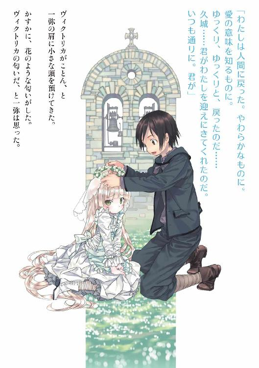

| GOSICK 05 ベルゼブブの頭蓋 | |
| 桜庭一樹 | |
| KADOKAWA / 角川書店 (2012) | |

GOSICK Ⅴ
─ゴシック・ベルゼブブの頭蓋─
桜庭一樹

角川ビーンズ文庫
本作品の全部または一部を無断で複製、転載、配信、送信したり、ホームページ上に転載することを禁止します。また、本作品の内容を無断で改変、改ざん等を行うことも禁止します。
本作品購入時にご承諾いただいた規約により、有償・無償にかかわらず本作品を第三者に譲渡することはできません。
本作品を示すサムネイルなどのイメージ画像は、再ダウンロード時に予告なく変更される場合があります。
本作品は縦書きでレイアウトされています。
また、ご覧になるリーディングシステムにより、表示の差が認められることがあります。
目次
口絵・本文イラスト／武田日向
本文図版／中島鯛
お妃は、ぬいものをしながら、目をあげて雪を見やりました。このとき、お妃の指先に針がささり、血のしずくが三滴、雪の上にしたたりました。赤い色が白い雪の中で美しく見えたので、お妃はふとこんなことを心に浮べました。
「この雪のように真っ白で、この血のように赤く、そしてこの窓わくの木のように真っ黒な子どもが、わたしから生れさえしたらいいのに」
それからまもなく、お妃はかわいらしい王女を生みました。
──『白雪姫』グリム
植田敏郎訳 新潮文庫
プロローグ 落下させるマリア
──一九一四年十二月十日 〈ベルゼブブの頭蓋〉
夜の海は凪いでいた。まるで、この世界では怖ろしい争いごとなど一切ないかのように。小さな泡の混ざった波を静かに寄せては返していた。
暗い紫色に染まる夜空と、黒い海との境界線上に、奇妙に人工的な島のようなものが浮かんでいた。軍艦だ。波は寄せては返し。寄せては返した。海は途中で、高い塀──巨大な水門によってとつぜん仕切られていた。満潮時に閉まる仕組みのそれが、暗い海と、青白く光る夜の砂浜とのあいだにそびえ立っていた。
砂浜は月光を浴びて、一粒一粒が反射するように青白く不吉に輝いていた。波は寄せては返し。寄せては返していた。その砂浜の向こうに、これもまた軍艦のような、闇のように黒い塊が一つ、鎮座していた。
それが〈ベルゼブブの頭蓋〉と呼ばれる人工要塞だと、この国のものなら誰でも知っていた。不気味な、巨大な蠅の頭部のようにも見える形状をした建物で、きらめく夜空のミルキーウェイを背景に、暗く、のっそりと砂浜に建っていた。
そして、夜空にはきらめく小さな星たちとはべつに、虫の羽音のような、しかしそれにしては人工的な、奇怪な音が響き始めていた。
音はどんどん近づいてくる。
〈ベルゼブブの頭蓋〉へ。
やがてそれは夜空いっぱいに広がった。黒い、無骨なデザインをした戦闘機の大群だった。夜空の遠くからこちらに近づいてくる。
閃光がきらめき、〈ベルゼブブの頭蓋〉に向かって放たれた。爆撃が始まったのだ。
──一九一四年。
後に世界大戦と呼ばれることとなる、世界そのものが揺れ動き大きな変化を迎えるきっかけとなったあの戦争が、始まった年のこと。
激しい爆撃音とともに、夜空には赤い閃光がいくつも走った。要塞に向かって放たれる光の大群。要塞から飛び出してきた小さな人影が、閃光を受けてその場に立ち止まり、きらめく砂浜にどうっと倒れた。白い看護服を着た、まだ年若い女だった。要塞を飛び出して駆け寄ろうとした、同じ看護服姿の女たちもまた、赤い閃光に撃たれて、その場に重なり合って倒れ、動かなくなる。
「なんということを！」
倒れた女のうちの一人が、青い瞳を見開き、呪いの言葉をつぶやく。夜空に向かって。
「いまここにいるのは、怪我人と看護婦だけ。ここは基地ではない。ドイツ軍め、呪われるがいい！」
震える手で、胸に垂らしたロザリオを握りしめ、何度も繰り返す。ロザリオは彼女と仲間たちの血で赤く染まっている。戦闘機の大群は遠ざかり、夜空を旋回して、またこちらに向かってくる。
血を流し、折り重なって倒れる若い看護婦たちが、大戦が始まる前は教室で笑いあっていた、まだ女学生たちらしい、かわいらしく甘ったるい声で、仲間たちとともに繰り返した。
「呪われろ」
「呪われろ」
「ドイツ軍め、呪われろ」
「呪われろ」
それぞれにロザリオを出し、祈った。お互いに手を繫ぎ、自分たちの血に染まりながら、繰り返す。
「呪われろ」
「呪われろ」
「呪われろ」
「呪われろ」
「呪われろ」
「呪われろ」
「呪われろ」
「呪われろ」
「呪われろ」
「呪われろ......」
声が少しずつ、細くなっていく。減っていく。瞳を閉じて動かなくなるものもいる。涙を流しながら、その娘の手を握るものもいる。涙混じりに、瀕死の娘たちはつぶやく。
「の、ろ、わ、れろ......」
戦闘機の大群はまた近づいてくる。
そのとき。
紫色に染まる夜空に、とつぜんなにかが浮かび始めた。
娘の一人が、あっと息を呑む。血に染まるロザリオを握りしめて、震える手で夜空にかざす。
浮かび始めたものが、娘の祈りの声に後押しされるように、どんどん輪郭をはっきりさせてきた。それは、海から出でて、夜空を遥か、月に届けといわんばかりにそびえ立つ......。
巨大な聖母マリア像だった。
娘の祈りの声に、感謝と喜びが入り混じり、震え始める。
マリア像は地上百メートルを超える巨大なもので、夜空にくっきりと浮かび上がった。白いローブを身にまとい、長い髪は海に向かって垂れ落ちていた。大きな瞳は見開かれ、虹彩まではっきりと見て取れた。マリア像は悲しそうに顔をゆがめ、その瞳から涙を流しだした。
白い腕に抱く赤子だけが、すやすやと眠っていた。
戦闘機が、操縦を狂わせべつの戦闘機と衝突した。涙を流すマリア像の目前で、オレンジ色の炎を上げてクラッシュし、海面に向かって墜落していく。べつの戦闘機もまた錐もみ状に、先端から先に砂浜に落下する。いくつもの戦闘機が狂い、墜ち、海面で水しぶきを上げる。砂浜にはいくつものオレンジ色の火柱が、狼煙のように上がっている。油が燃える不吉な匂い。血まみれの娘たちがくすくすと笑い出す。
その笑い声もまた、途切れていく。
夜空には一機もなかった。ほとんどが墜落し、残ったものも羽音を立てながら急速に遠ざかっていった。ばちばちと燃える、音。娘たちは静かだ。夜空には相変わらず、涙を流す巨大なマリア像が浮かんでいる。悲しみに満ちた顔で人間たちを見下ろしている。
娘たちは、頰に笑みを浮かべ、それを見上げるように瞳を見開いたまま、全員、もう事切れている。
やがて〈ベルゼブブの頭蓋〉からべつの娘たちが飛び出してきて、倒れた仲間たちを助け起こした。泣き声と、悲鳴。友達を抱き、夜空に向かって吠えるように叫ぶ。
その夜空には、もう、なにもない。
戦闘機の大群も。聖母の幻影も。
ただきらめく星空だけが、悠久の時を過ぎてもそこに在り続ける星たちだけが、変わらずきらめいていた。
ばちばちと音を立てて、砂浜で、オレンジ色の炎がまた、揺れた。
第一章 ヴィクトリカのいない学園
１
永遠にも思えるほどにゆっくりと過ぎていった、長い夏休みの、最後の日。
まだ夏の名残の眩しい日射しが、聖マルグリット学園の広大な敷地をきらきらと照らしていた。
空中から見るとコの字型をした巨大な校舎と、それを囲む、フランス式庭園を模した芝生や花壇。凝った彫刻で飾られた白い噴水は、まるで熱に溶けかけた氷の柱のように、日に照らされてとろとろと透明な水を流し続けている。
よく手入れされた芝生を駆け回る、リスたち。庭園のあちこちに置かれた居心地のよさそうな東屋には、思い思いの服装をした生徒たちが、仲良しどうしでかたまって談笑している。明日から始まる後期の授業ではなく、この夏の避暑地でのお話を、我先にと話しているのだ。
楽しそうな談笑の輪から少し離れた小道を、きょろきょろしながら歩いてくる少年がいた。
小柄で線の細いからだつきに、漆黒の髪と、同じ色をした、寂しげに翳る瞳。いかにも生真面目そうに背筋を伸ばし、右を、左を見回しながら歩いている。なにかを捜しているようだ。
「ヴィクトリカ、どこだい」
花壇の奥のほうに顔を突っ込んだり、ベンチの下を覗いたり、木の上を見上げて眩しそうに瞳を細めたり......。まるで小さな猫を捜しているかのように、黒髪の少年──久城一弥はしばらくうろうろしていた。それから、
「ヴィクトリカ......？」
首をかしげて、困ったようにつぶやいた。
「まったく、どこに行っちゃったんだろう？ つい昨日まで、そこの東屋か、男子寮の窓の外にある木陰か、とにかく、ぼくにわかる場所にちょこんと座って、お菓子食べ食べ、書物を読んでいたのになぁ。あぁ......」
一弥は辺りを見回した。貴族の子弟たちのかしましい話し声が響く庭園を、瞳を細めてしばしみつめる。昨日までの、静寂に満ちた夏の聖マルグリット学園とはまるでちがう場所のように、今朝の学園はなんだかざわざわと騒がしかった。
やがて一弥は合点がいったというようにうなずいて、
「ヴィクトリカのやつ、図書館にいるのかな。よし、行ってみよう......」
小さくつぶやくと、小道をとことこと歩きだした。
──時は一九二四年、夏。
ヨーロッパの小国、ソヴュール王国。
フランスとの国境はどこまでも広がる緑の葡萄畑。イタリアとの国境は、地中海に面した華やかな避暑地。そしてスイスとの国境は湖と深い森に覆われた鬱蒼とした緑の迷路。謎めいた回廊の如く細長い形状をしたこの小さな国は、数々の列強に囲まれながらも先の世界大戦を切り抜け、西欧の小さな巨人と呼ばれていた。
王国の、地中海に面したリヨン湾を豪奢な玄関とするなら、アルプス山脈は、もっとも奥深い場所に隠された秘密めいた屋根裏部屋といえた。その山脈の麓にひっそりと建つ聖マルグリット学園は、王国そのものほどではないが、長く荘厳な歴史を誇る、貴族の子弟たちの教育機関だった。
だがその学園は、先の大戦終結後、一部同盟国からの留学生を受け入れることに決めた。国の威信をかけてやってくる、優秀な学生たち──。そのうちの一人である久城一弥は、なれない外国での生活に苦労しながらも、学業に励み、少数ながら友人もでき、ようやく留学生活も軌道に乗り始めたところだった。
一弥が出会った友人の一人は、明るくて元気な、イギリスからの留学生アブリル・ブラッドリー。そしてもう一人は......。
謎めいた、金色の妖精のような、しかし恐ろしく毒舌な少女。奇怪な頭脳を抱える小さな、フリルと書物に囲まれた、ヴィクトリカ・ド・ブロワ......。
一弥の留学生活はいつのまにか、不思議な少女ヴィクトリカを中心に回り始めていた。
「ヴィクトリカー？ 君、どこにいるんだい？ みんながバカンスから帰ってきて騒がしいから、また図書館に戻っちゃったのかな」
──聖マルグリット大図書館。
広々とした学園の敷地。その奥の奥に隠された灰色の石の塔は、ここ三百年余そうであったように、今朝もまた、しんとした静寂にのみ包まれていた。
欧州でも指折りの知の殿堂だが、学園の秘密主義のためにあまり存在を知られていない。風雨にさらされ色を変えた外壁に、小さな革張りのドアがひとつだけあるが、そのドアを開けて中に入るものを見ることはあまりない。
一弥はそのドアを無造作に開けて、図書館の中に入った。
「ヴィクトリカ？」
図書館の内部は、四方の壁すべてが書棚となって、吹き抜けのホールの遥か上の天井まですべて書物で埋め尽くされている。天井には荘厳な宗教画が描かれ、そこから下まで、迷路状に入り組んだ細い木階段が、まるで無数の細い蛇たちが絡み合っているように、書棚と書棚を繫げている。
一弥は足を止め、遥か上に目を凝らした。いつもなら見えるはずの、不思議な古代の生き物の尻尾じみた、金色のきらめきを捜す。かすかになにかが光ったような気もしたけれど、天井近くの窓越しに降り落ちる眩しい朝陽にじゃまされて、よく見えない。
一弥はため息をついて、
「おーい、君、いるのかい？......なんて呼んでも、返事をしてくれるようなヴィクトリカじゃないか。仕方ないな。また、上ろう......」
ぶつぶつ言いながらも、姿勢を正して、規則正しい足取りでその、入り組んだ蛇のような木階段を上り始めた。
上る。
上る。
......まだまだ、上っている。
「まったく、ヴィクトリカのやつ。ときどき、ぼくに無断でべつの場所に移動しちゃうんだから。この大きな学園の中で、君を捜すのはたいへんなんだよ。なんたって君は小さいし、そりゃフリルでふくらんでるけど、それでもやっぱり、十分小さいし......」
一弥はだんだん腹が立ってきたようで、忙しく階段を上がりながらも、拳を振り上げていろいろ言い出した。
「だいたい君は口が悪いし、きまぐれだし、まったくもぅ、いつも、ぼくは君に怒ってるんだよ。どうして君って、そんなに意地悪なんだろうなぁ。君はみんなに意地悪なのかな？ それとも、もしかしてぼくにだけ特別、そうなのかな？ ねぇ、ヴィクトリ、カ......。あれっ？」
文句を言いながらもようやく迷路階段を上がり終わった一弥は、足を止めて、きょろきょろと辺りを見回した。
図書館塔のいちばん上に広がる、緑生い茂る植物園。毒々しい南国の花が生い茂り、小さな窓から夏の終わりの涼しい風が吹いて、木々の鮮やかな葉を揺らしている。
階段の踊り場には難解な書物が大量に散らばり、ピンク色をした小さなマカロンがいくつも、ころころと転がっていた。一弥はきょとんとして、しばらく、あの小さな主のいない植物園を不思議そうに見回していたが、やがてその、書物とお菓子が散らばる場所にゆっくり近づくと、しゃがんで床に片膝をついて、観察し始めた。
書物とお菓子が散らばる床の、真ん中にぽかりとあいている空間があった。一弥はそこを指さすと、
「ここにヴィクトリカが座ってたんだな。だって、いつも読むのと同じ角度で書物が散らばってるし、マカロンの定位置はここだ。うん。ヴィクトリカはこっち向きに座って、いつもどおり悪態をつきながら、お菓子を散らかしながら、書物を読んでたんだ......」
それから、瞳を細めた。
「でも、いまはいない......。なにがあったんだろう？ あっ！」
書物のあいだから、ころんと転がっている白い陶製のパイプをみつけて、ゆっくりと手に取った。
顔の間近に持ってきて、少し寄り目になるほどにみつめる。
「ヴィクトリカのパイプだ。これでいつもぼくの顔に煙をぷぅぷぅふきかけるんだ。それで、ぼくが咳き込むのを見てうれしそうにしてる。まちがいない、ヴィクトリカのパイプだ。......どうしてここに？」
一弥は立ち上がった。
パイプを置いたままでいったいどこにいったのだろうと、植物園の奥やエレベーターホールや、階段の踊り場においてある小さな四角いチェスト──ヴィクトリカの隠れ場所──を捜してみる。
急に不安になって、一弥はもう一回り、植物園の中を調べると、急いで木階段を下り始めた。ヴィクトリカのパイプを握りしめた両手を、胸の前で震わせている。
階段を駆け下りる。いつもの正しい姿勢が少し崩れている。
〈久城、君は......〉
夏休みに近い、あの日。錬金術師〈リヴァイアサン〉の正体を彼女が暴いたあの日に、手を繫いで庭園を歩きながら、ヴィクトリカが秘密めいた声でささやいた、あの言葉が胸に蘇ってくる。
〈君は、わたしを捜せないかね......？〉
老女の如くしわがれた、哀感のこもるヴィクトリカの声。
すでに百年の時を生きた人のように時に老成した、不思議に澄んだ、深い緑の瞳。
時には怒りにぶわりとふくれあがる、金色のベールの如き、床まで垂れる髪。
一弥はあわてて階段を下り続けた。あのときの自分の声も耳に蘇ってきた。
〈そんなことないよ......〉
〈ちょっと手間取るけど、ぼくは、ほらこうやって──〉
〈必ず君をみつけてるだろ？〉
一弥は迷路階段を駆け下りた。聖マルグリット大図書館を出て、小道を歩きだす。
庭園は夏の朝陽にきらきらとして、青々とした芝生も、花壇も、眩しく輝いている。
小道の向こうから、小麦色に日焼けした金髪のショートヘアの少女が歩いてきた。大きなトランクを抱えて元気よく歩いていた少女──アブリル・ブラッドリーが、足を止めて、一弥のほうを見た。大きく口を開けて、声をかけようとして、急いでいるらしき様子に気づいたように、口を閉じる。
一弥は迷路花壇の入り口に立つと、色とりどりの花が咲き誇る入り組んだ花壇を歩きだした。
（考えすぎかな......。なんといってもヴィクトリカはきまぐれだし、ふと思いついてどこかにちょこちょこ歩いていっただけなのかもしれないな。思索に夢中になって、うっかり、大事なパイプを置き忘れて......。きっとそうだ）
そう思いながら、歩く。
不安で眉間にしわを寄せながら、一弥は花壇を抜けた。凝ったドールハウスのような小さな家にたどり着く。
「ヴィクトリカー？」
呼びながら、いつもの小窓に駆け寄る。少しだけ開いている窓から中を覗き込むと、書物とお菓子とかわいらしい家具であふれていたはずの家は、なぜかいつもよりがらんとして、薄暗かった。まるでもうずっと人が住んでいないかのように。
「ヴィクトリカ......？ 君、ここにもいないのかい？ まったく、君、今朝は......」
一弥はもう一度、呼んだ。
「ヴィクトリ、カ......」
「いないのよ。久城くん」
ふいにべつの声がした。一弥が顔を上げると......。
薄暗い家の中で、奥のドアを開けて出てきた人影がいた。大きな丸眼鏡と、くるくるしたブルネットの髪。眼鏡の奥にあるぱっちりした茶色い瞳は、なぜか真っ赤っ赤にはれていた。
セシル先生だった。
小さな家の中はがらんとして、朝だというのに薄暗かった。一弥が窓越しにみつめていると、セシル先生はゆっくりと部屋を出ていった。玄関のほうに回るかすかな靴音が、主のいない家に大きく響いた。途中で一度転んだらしく、ごろんごろんっと大きな音がした。それから立ち上がって、また歩きだす音。
やがてセシル先生は、痛そうに肘をさすりながら玄関から出てきた。真鍮のドアノブにかわいらしい小さな鍵をさして、くるりと回す。うつむき加減の横顔に、一弥は、
「あの、ヴィクトリカはどうしたんですか？ 昨日まで、庭園の涼しそうな木陰でごろごろしてたのに」
「ひくっ」
セシル先生がしゃくりあげた。
涙をがまんするように、顔をしかめて、
「あのね、昨夜、おとうさまの部下の方が、お迎えにきてね」
セシル先生は短く答えた。
「ブロワ侯爵の......？」
「遠くの修道院に、一時、移送するって......」
セシル先生は言葉少なだった。お菓子でできているような小さな家を見上げて、はぁっとため息をつく。一弥は驚いて、
「いったいどうしてですか、先生。こんな急に......。ヴィクトリカは、なにか......」
「それがとつぜんのことで、わたしにも事情がぜんぜんわからないの。でも、もともとヴィクトリカさんがここにきたのも、同じぐらいとつぜんだったし......。あのおとうさまがすることはいつもそうらしいの。夜のうちに移送されたから、わたしもびっくりして、ぎゃんぎゃん騒いだんだけど......」
「そんな！」
「でも、久城くんにって手紙を預かったわ」
「......手紙！」
一弥は叫んだ。セシル先生は丸眼鏡を外すと涙を拭いて、また眼鏡を元に戻した。それから、ブラウスの胸ポケットから大切そうに、小さく折りたたんだ便箋を取り出した。
一弥は震える手でそれを受け取った。薔薇の模様がたくさん散った、淡い紫色をした、それはそれは美しい便箋だった。たった一枚。小さく折りたたまれたそれを渡しながら、セシル先生がつぶやいた。
「とつぜんのお迎えで、図書館塔からここに引っぱってこられたんだけれど、ヴィクトリカさん『ちょっと待ちたまえ』と宣言して、厳かに......」
お菓子の家の窓から見える、翡翠の飾りつきの、かわいらしい猫足テーブルを指さす。また涙を拭いて、
「あのテーブルに向かうと、おもむろに久城くん宛ての手紙を書き出したのよ。大の大人が何人も、止められずに、手紙を書き終えるのを黙って待っていたわ。どうしても、という迫力があったの。ヴィクトリカさん、瞳に涙をためて、わたしにこれを渡して......それから、玄関から連れられて出て行ったの。黒い大きな馬車に乗せられて。目隠しまでされて......」
セシル先生は便箋を一弥の胸に押しつけるようにして、それから、涙を隠すように、ばたばたと迷路花壇の通路に消えていった。
後に残された一弥は、お菓子の家を振り返った。薄暗い部屋に残されたかわいらしい猫足テーブルと、その上に散らかる真っ白な羽根ペンと、ルビー色に輝く丸いインク壺。そしてセットになった猫足の小さな椅子は、床に無残に転がったままだ......。
一弥は無表情のまま、唇をきつく結んで、部屋の中をみつめた。瞳が険しく、秘めた怒りか悲しみに翳る。引き結んだ唇が、やがて、ふるっと震えた。一弥は険しい顔のままで、迷路花壇に向かって歩きだした。
朝陽がきらきらと零れ落ちる。
歩きながら、ゆっくりと便箋を、開く......。
迷路花壇の外で、短い金髪をした元気な女の子が、バカンスで小麦色に日焼けした長い手足をもてあますようにして、地面に置いたトランクに腰かけていた。アブリル・ブラッドリー──地中海での長い夏休みからようやく帰還した、一弥の留学生仲間だ。白いブラウスに、さわやかなストライプのプリーツスカート姿で、ブラウスの肩から水着の肩紐の日焼けが少しのぞいている。
晴れた空のような明るい青い瞳を見開いて、虎視眈々と、花壇の出口を見張っているところだ......。
「久城くんったら、確かに、この辺りで姿を消したんだけど......。せっかく久しぶりに会ったんだから、聞かせたい怪談がたくさんあるんだからね。あれ、ぜんぜん出てこないなぁ......」
ちょっとでもはやく会いたくてたまらないというように、長くしなやかな足で地面をこつんこつんと蹴る。
「く、じょ、う！ く、じょ、う！ く、じょ......。あっ、出てきた！」
アブリルはトランクからぱっと立ち上がった。
──迷路花壇の出口から、さっきよりさらに険しい顔をした一弥が出てきたところだった。背筋をぴりっと伸ばし、右手になにか......薄紫色をした便箋らしきものを握りしめて、ずんずんと歩いてくる。
「くじょ、う、くん......」
「あぁ、もう、腹が立つなぁ！」
一弥らしからぬちょっとばかり感情的な声に、アブリルはびくんとした。首をかしげて、
「ど、どうかしたの？ というか、久城くん、ひさしぶり......」
「なにが『ならず者』だ！」
「へ？」
一弥はずんずんと小道を歩いていく。アブリルはあわてて引き返してトランクに手をかけ、ずるずると引っ張りながら後を追った。
「どうかしたの」
「ぼくは断じて『そこつ者』でも、『けだもの』でも、『中途半端な秀才』でも『くだらん凡人』でも『音痴』でもないぞ。それに『死神』でもない！ あぁ、反論したいのに相手がもうここにいないなんて！ どうしてくれよう、ヴィクトリカ！」
アブリルのほっぺたが、ぷくっとふくらんだ。
「ヴィクトリカさん......の、話かぁ......。心配して損した！」
「......あっ、アブリル。おかえり。地中海は楽しかった？ 荷物、もつよ」
一弥は礼儀正しく、レディのトランクに手をかけて引っ張り出した。小道を歩きながら、ため息をつく。
「どうして最後の手紙が、周りの大人を威圧してまで、無理に書いて先生に託したものが、最初から最後まで......」
トランクが不機嫌そうにがたごと揺れながら、一弥の後ろを進んでいく。アブリルは相変わらずふくれっ面だ。
「ぼくの悪口なんだよ！ あの、悪口魔！ 悪魔的ヴィクトリカ！ しかも、手紙の体裁さえとってないよ。だって、文章になってないんだからね！ 全編、単語だけじゃないか。ばか、ならず者、音痴、けだもの、凡人、って......。どうしてもぼくに伝えたかったことが、それ？ しかも、こんなおっきな字で！ まったく、もぅ......。いつまでたっても、君は本当に、意地悪な子なんだから......」
「ねぇ、なんの話？ またあの子とけんかしたの？」
アブリルがあきれた顔をして聞く。
朝陽がきらきらと照らす噴水の前を通り過ぎながら、一弥はゆっくりと首を振った。
風が吹いて、一弥の黒髪をさらさらと寂しげに揺らしていった。アブリルのプリーツスカートの裾も一度ふわりとふくらんで、もとに戻った。
アブリルが首をかしげた。
「じゃ、いったいどうしたの」
「いなく、なっちゃったんだ」
一弥の声は小さかった。
「えっ」
「ヴィクトリカ、遠くに行っちゃったんだ」
アブリルの顔にさっと、驚きと悲しみの表情が宿った。それからまた、かすかに表情が変わった。遠くに見えるあの巨大な灰色の塔──アブリルの心に重くのしかかっていた、小さな少女とそれを守る知の殿堂、図書館塔を振り返る。
アブリルはしばらく黙っていた。それから、一弥の顔を心配そうに覗き込んだ。
「久城くん、だいじょうぶ......？」
「うん......。いや......」
一弥は唇を引き結んだ。
それから立ち止まると、トランクから手を離した。便箋いっぱいに大きな文字で悪口が書き連ねてある、ヴィクトリカからの手紙を両手でていねいに折りたたんだ。なにも言わない。言葉にはしなかった。ただ、いつくしむような優しい手つきで、薄紫色をした薔薇模様の便箋を、胸ポケットから取り出した手帳にそっとはさんだ。
手帳には、夏の初めにヴィクトリカからもらった最初の手紙もまた、ていねいに折りたたまれてはさまれていた。鳥籠に入れられた薔薇のすかし模様が入った、香水つきの小さな便箋......。ただ一言、短く『ばか』とだけ書かれた、彼の人からの、最初の手紙......。
一弥は手帳を胸ポケットにしまうと、また唇をきつく結んだ。アブリルがますます心配そうにその横顔をみつめていた。
夏休み最後の日。
きらきらと日射しのまぶしい、まだまだ暑さの残る、朝。
学園には、バカンスの名残を秘めた楽しそうな生徒たちの声が響いていた。芝生の上にも、東屋にも、寮の廊下や部屋の中にも......。
風が吹いて、咲き誇る花壇の花々をふわふわと揺らしていった。
２
夏休みが終わった。
後期の授業が始まり、生徒たちはまた、朝は規則正しく起きて寮で朝食を取り、授業を受け、忙しい学園生活に戻っていった。
日射しは少しずつ柔らかになり、秋に近づいていった。青々としていた庭園の樹木も少し葉の色を翳らせ、風はひんやりと乾いてきた。学園での授業を受ける生徒たちの中で、一弥はひときわ生真面目に、硬い表情をしていた。予習も復習も完璧で、どこを指されても、流れるようによどみなく回答してみせた。
その一弥の様子を、少し離れた席からアブリルがみつめていた。
（久城くん、様子がおかしい......）
それから、自分の目の前にある、いつもの空席......けして授業に出ることのないヴィクトリカ・ド・ブロワの机に目を落とす。
（勉強ばっかりして。なんだか、帝国軍人みたい）
眉をひそめる。
（あんまり笑わないし。つまんない......）
なぜか一弥とあまり目を合わせない、担任のセシル先生のほうを見て、またため息。
（なにがあったんだろう？ ぜんぜんわかんないけど、でも......）
やがて授業が終わると、アブリルはしょんぼりして、教室の窓から外の景色をみつめた。庭園を、急ぎ足で男子寮に向かっていく一弥の姿が遠く見えた。それは本当に、軍人のひとりぼっちの行進のようにまっすぐで、周囲で咲き誇る花も素敵な芝生も、なにも目にうつっていないかのような様子だった。
そして、その週も半ばを過ぎたころ。
風はますます涼しくなり、青々と茂っていた樹木の葉も、柔らかにくすんだ秋の色に変わり始めた。庭園に咲き誇る色とりどりの花が、ひんやりと湿った風が吹くたびに、はらはらと極彩色の花びらを芝生に散らしていた。
「えと、えと、久城くん」
芝生に置かれたベンチに腰かけて『月刊・硬派』に読みふける一弥に、ゆっくり近づいてきたアブリルがおそるおそる声をかけた。夕刻の庭園には生徒たちが思い思いに散らばって、楽しそうに談笑していた。
ベンチの背から覗き込んで、アブリルが聞いた。
「久城くん、なに読んでるの」
「ん？ あぁ」
一弥が顔を上げた。笑顔になって、
「『月刊・硬派』だよ。長兄が国から送ってくるんだ。男たるもの、どう生きるべきかが毎月、暑苦しくも押し付けがましい文章で猛々しく書かれているんだよ。ぼく、この雑誌、すごく苦手なんだ」
「に、苦手なの？ じゃ、どうしてそんなに読みふけってるの」
アブリルは青い瞳をぱちくりして聞いた。ベンチのとなりに座って、覗き込む。また涼しい風が吹いて、アブリルの短い金髪を揺らしていった。白いうなじにピンクの花びらが飛んできて、ふわりと着地してから、ゆっくり首筋を転がってころころと芝生に落ちていった。
一弥は寂しそうにつぶやいた。
「......どうしてかなぁ」
「ん？」
気を取り直したように微笑んでみせて、一弥は続けた。
「『男たるもの、個人的な感情で行動したり、命を粗末にしてはならぬ』とか書いてあるんだ。あと『国のために命を捨てる。そのために自己を鍛えて云々』とか。長兄からときどきもらう手紙と、まぁ、似ているかなぁ。手紙だともっと強い調子で『世界情勢が刻々と変わっていく中、国のために働ける立派な男になるため、よく勉強して帰ってこい』なんて書いてあるね。相変わらずだなぁ、兄貴は」
「へぇ？」
「あと、次兄から科学の雑誌も送られてくるんだけど、これはなかなかおもしろいよ。姉から届く編み物やリリアンの雑誌も、興味深いしね。あれこれ気がまぎれるよ」
「はぁ」
アブリルは間の抜けた返事を繰り返している自分に気づいて、ちょっと赤くなった。ベンチに座ったままもじもじして、右を見たり、左を見たり、上を見上げたりした。制服のプリーツスカートの裾を引っ張ったりいじくったりしながら、思い悩む。
（とっておきのおもしろい話をしてあげたいなぁ。久城くんが元気になるような、楽しい、話題、って、えっと......）
ちらりととなりを見ると、一弥がまた、苦手なはずの雑誌に目を落としたところだった。アブリルはあわてて、口を開いた。
「久城くん、〝霊界ラジオ〟って知ってる？」
「知らない。なぁにそれ？」
一弥の返事に、アブリルの顔がぱっと輝いた。張り切って、
「えっとね、霊界ラジオっていうのは......。あのね、誰もいないはずの部屋で、夜中にとつぜんラジオのスイッチが入るの。そして、あの世からの死者の声を拾って流しだすの。恐ろしい雑音とともに、呪われた声を......」
涼しい庭園に、アブリルの楽しそうな話し声が響き始めた。
また風が吹いて、花壇に咲いていた金色の花が、一斉に花びらを散らして芝生の上や噴水の透明な水面に舞い落ちていった。
それからさらに、数日。
週末も近い、夕刻。天気はよく、だいぶ花が寂しくなった庭園の花壇にも暖かな日射しが降り落ちていた。
「......それでね、部屋に入ってきた幽霊が、叫んだの。『おまえを呪い殺してやるぞぅ！』」
「うん、うん」
庭園のベンチに座った一弥が、半目になってうなずいていた。となりに腰かけたアブリルは張り切って、あれこれと新しい怪談を話し続けていた。
一弥は、膝の上においた教科書に目を落とした。そしてそのまま、首をがっくりとうなだれ、気絶するように眠りに落ちていた。
アブリルは気づかず、話し続けている。
（久城くん、だいぶ元気になってきたみたい。授業中も普通だし、もうすっかり、いつもの久城くんだよね......？）
一通り話し終わって、アブリルは一弥をつっついた。
「それでね、久城くん」
「ぼくは眠ってませんよ」
一弥が顔を上げて、言った。
「週末、村に出かけてみない？ 後期の授業も始まったし、文房具とか、いろいろ買い物もあるし。一緒に行ったほうが楽しいかなぁと思って」
「うん......」
一弥はぼんやりしたまま、生返事した。
白い大きな雲がゆっくりと、夕刻の空を覆い始めた。日が翳り、芝生に暗い影を落としていった。肌寒くなったのか、一弥がくしゃんと小さなくしゃみをした。それから立ち上がると、きりりと背筋を伸ばして小道を歩きだした。
その後ろ姿を、アブリルはベンチに腰かけたまま、しばらくみつめていた。
（ほんとに、元気になったのかな......）
夕日が橙色に輝いて、雲の合間から射し始めた。遠くで、歩いていく一弥が一度、なにもないのにつっかかってころころと転んだ。アブリルはベンチから立ち上がって、スカートの埃をはたいているところで、一弥がコケたのに気づかない。一弥がまた歩きだした。アブリルも小道を反対側に向かって歩き始めた。
また風が吹いて、花壇から金色の花びらを散らして、アブリルのほっそりとしたからだを取り囲むように揺れながら、地面に落ちていった。
そのアブリルとすれ違いで、セシル先生が小道を歩いてきた。こちらもまたぼんやりと心ここにあらずの様子で、相変わらず瞳を赤くはらしていた。いつも肩の辺りでカールしていたくるくるのブルネットの髪も、寝ぐせがついて、おかしなふうに一房、斜め上に立っていた。
「あら、アブリルさん」
「先生、それ、寝ぐせ？」
「えっ？ ち、ちち、ちがうのよ。これは、こういうヘアスタイルなの。ソヴレムで流行ってるの。えっと......」
セシル先生はあわてて髪の毛をいじくり始めた。ベンチにつまずいて、こけっと転んだ。抱えていたプリントの山が、秋の涼しい風にふわりと舞い上がって庭園のあちこちに飛んでいく。アブリルが「きゃっ！」と叫び声を上げた。長いしなやかな足で地面を蹴って飛び上がり、プリントを空中でキャッチする。
「あら、ありがとう。アブリルさん......」
「あと二枚、っと。先生、あの、どうかしたんですか」
不思議そうなアブリルに、セシル先生は首を振ってみせた。
それから、小道のずっと向こうに遠ざかっていく一弥の後ろ姿にちらりと目をやった。
「アブリルさん、いま、久城くんとお話ししてたでしょ？ どんな様子だった？ 元気がないとか、ぼんやりしてるとか......」
「今週の初めはそんな感じもしたけど、今日はもういつもどおりでしたよぅ」
アブリルは明るく答えた。セシル先生は首をかしげて、
「そう......？」
「ええ。普通におしゃべりしてたし......。ん？ あれ......？」
と言いながらもアブリルは、そういえば自分ばっかり話していたような気もする、と思い当たった。自信なさそうに、セシル先生と同じ方向に首をかしげてみる。
「ど、どうだったかな？」
二人は首をかしげたまま、きょとんとしてしばし、みつめあった。
セシル先生が抱え直したプリントの上に、風に吹かれて花びらが何枚か落ちてきた。
リスが一匹、その横をちょこちょこと通り過ぎていった......。
３
週末の朝。
アブリルは張り切って起きると、身支度をした。短い髪をといて、いちばん気に入っている水玉模様のブラウスとフレアスカートをはいて、小さな丸い布鞄を持った。ばたばたと女子寮を出て、聖マルグリット学園の広大な庭園に駆け出していく。
花壇の向こうに、金色にとがった妙なものが一瞬、見えた。アブリルは足を止めて、それに目を凝らした。花壇の花々はアブリルの背たけより少し低いぐらいで、その向こうに見えたものは、背伸びをしてももうよく見えなかった。アブリルは、まぁいいか、と気を取り直して、一弥を捜すためにまたばたばたと走り出した。
（久城くん、なんだかいつもと様子がちがう気もするけど、でも......）
アブリルは庭園の中をきょろきょろして、遠くの東屋にぽつんと座っている一弥をみつけた。そちらに向かっていきながら、
（一緒に村にでかけて、楽しく遊んだら、きっと元気も出ると思うなぁ。いつまでもくよくよしてるのなんて久城くんらしくないし、それに......）
東屋に近づいて、声をかけようとしたとき......。
「い、痛い！」
頭の後ろになにか鋭利なものが突き刺さった。アブリルは悲鳴を上げて、両手で頭を押さえて振り返った。
金色に輝く、ぐりゅんと流線型にかためたドリルが二つも、朝陽を浴びてきらきらと輝いていた。
東屋に座った一弥は、白い陶製のパイプを手に握りしめていた。いじくったり、くわえて吸う振りをしてみたり、手のひらの上においてじっとみつめたりを続けていたが、なにやら近くで押し問答する声に気づいて、顔を上げた。
「痛い！ 気をつけてくださいってば、警部さん。頭にそんな危ないものを二つもつけてるんですからね！」
「まだ慣れないのだ。これが二股に分かれてからまだ日が浅くてね」
「だからって、女の子の頭にそんなものを突き刺すなんて。あなたなんて、逮捕されちゃえばいいのに！」
「しかし、たかが髪の毛じゃないか」
「凶器ですってば。ほんとに痛かったんだから！」
きゃんきゃんと争いあう声に、一弥はそちらを見た。東屋の外で、アブリルとグレヴィール・ド・ブロワ警部らしき後ろ姿が、なにごとか言い争っていた。ブロワ警部は相変わらず、銀色に輝くシルクのブラウスに同じ銀のカフスボタン、ぴったりとした乗馬ズボンと、一分の隙もない洒落た服装をしていた。
一弥は立ち上がって「どうかしたんで、す、か......？」と聞きかけた。
ブロワ警部が振り返った。一弥は思わず、
「きゃっ！」
「へんな悲鳴を上げるな。久城くん、すぐにきてくれ」
「いやですよ！ その頭の説明を聞くまでは」
「......いろいろあったのだ」
振り返ったブロワ警部の頭は、金色のドリルが二つ、いつものものが上下に二股に分かれたような様子で、にょっきりと張り出していた。二つのドリルのあいだは開かれた鰐の口にも似て、不気味な金色の闇となり、覗き込む一弥をいまにも不吉に飲み込んでしまいそうだった。
「......いったいどうしたんですか」
警部に手を握られてずるずる引っ張られながら、一弥は聞いた。
「どうもしない」
「じゃ、ぼくを笑わせにきたんですか」
「......どうしてわたしがわざわざ君を笑わせにくるのだね？ ちがう。だから、いろいろあったのだ。夏の終わりに、ちょっとばかりな」
「はぁ......」
「ジャクリーヌと、ね......」
「へっ？ なに、どういうことですか」
「うるさい。黙れ久城。余計なことは考えずに右、左、右、左と行進するように歩くのだ。質問したら逮捕するぞ。わかったか、君」
「......横暴だなぁ」
一弥は文句を言いながらも、ずるずると引きずられて芝生を歩いていった。アブリルのほうを振り返って「ま、またね。アブリル」と手を振ると、アブリルはあわてて、
「えーっ！ そんなぁ。久城くん、お出かけは？」
「後にしろ、後に」
ブロワ警部が不機嫌そうに言って、しっしっとアブリルを追いやった。アブリルはむっとした後、ブロワ警部の後ろ姿に向かって、べーっと舌を出してみせた。
ブロワ警部は問答無用で、一弥をどこかに引きずっていく。
朝陽を浴びてきらびやかに輝く二つのドリルを見上げながら、一弥はつぶやいた。
「警部......。ヴィクトリカは、あなたの妹は、いったいどこに連れて行かれたんですか」
「〈ベルゼブブの頭蓋〉だ」
ブロワ警部はすぐに答えた。
風が吹いた。一弥の黒髪がさらさらと揺れた。だが警部の髪の毛はまったく揺れなかった。樹木の葉がカサカサと少し乾いた音を立てた。
一弥は、警部が回答したことに驚いて、ドリルをまた見上げた。
「......頭ばっかり見るな！」
「いや、どうしても目に入って。あの、〈ベルゼブブの頭蓋〉って、なんですか」
「リトアニアにある修道院だ」
警部はまた、すぐに回答した。
「我々、ソヴュール王国とは長く同盟関係にある。古き力がまだヨーロッパを覆っていたころから、ずっとだ。いいかね、そこは修道女たちが静かに暮らす場所で、あの小さな灰色狼をおとなしくさせておくのに、もっとも適した場所のはずだった。海沿いにあってね。その修道院は、海に潮が満ちる時間になると水門を閉め、水の浸入を防ぐ。人里からも遠く、無人の駅が近くに一つあるきりで、後は暗い海に閉ざされている。小さな狼一匹では逃げることも叶うまい」
一弥は唇を嚙んだ。
「そんなところに、ヴィクトリカが......」
ブロワ警部の二つのドリルを、睨みあげる。
「いったいどうしてですか？ こんなにとつぜん......」
一弥の強い視線から目をそらし、警部は滔々と話し続けた。
「我々はとある目的から、ある人物をおびき寄せる必要があった。そのためにどうしても、あの小さな灰色狼が必要だったのだ」
「ある人物？」
「それについては君に教えることはできない」
警部は低い声で言った。
「しかし、小さな灰色狼は我々の予想を超え、急速に弱ってしまった」
「なっ」
「あれはどうしても、生きたままつぎの嵐を迎えなければいけないのだ。しかしあれは、奇怪にして広大な頭脳と引き換えに、小さく、弱く、儚いからだを授かった。もう一度言うが、久城くん、我々はあれが自由になっても困るが、しかし、死んでしまうことがもっとも困るのだよ」
一弥は声を荒らげた。
「そんな、勝手な......！ しかし、ヴィクトリカは大丈夫なんですか？ 警部......」
警部は答えなかった。
ずるずると一弥を引っ張っていく。一弥は、ブロワ警部が向かっているのが、真ん中に小さなお菓子の家を隠した迷路花壇の方角だと気づいた。問うように警部のドリルをみつめていると、
「修道院からの連絡によると、だが。あれは食事をせず、書物も読まず、もはや吠えもしないらしい。もう一週間のあいだ、修道院の隅で灰色狼の置物のように座り続けているそうだ。食事もせず、声も出さず、ただ少しずつ弱っていくだけなのだ、と......。このままだとあれの命の灯火は、ちいさな風一つでかき消えてしまうかもしれない......」
「............！」
一弥はうつむいた。
迷路花壇を抜けて、ヴィクトリカのドールハウスにたどり着いた。ちょうどセシル先生が、あわてたように玄関の鍵を開けたところだった。足音に気づいたように振り返り、一弥とブロワ警部をみつけると、ほっとしたように少し微笑んだ。
「久城くん......」
「先生」
「はやく開けたまえ」
警部がいらいらしたように言った。セシル先生がドアを開けると、三人で家に入った。
朝だというのに薄暗い、小さな家。警部がドリルをつけた頭を右に、左に、ぶんぶん振りながら、
「致し方ないが、あれの荷物だけでも修道院に送ってやろうかと思ってね。久城くん、君、荷造りを手伝いたまえ」
「............」
「あぁ......。我が妹とはいえ、あれはもしかすると、限られた条件下でしか生きられぬ異形のものなのかもしれない......。我々が考えていたよりずっと弱い生き物なのかもしれない......。ほら、これを！」
ブロワ警部は巨大な空のトランクをみつけて、一弥のほうに放り投げてきた。一弥はあわててそれを受け取った。
それから、うつむいてしばらく黙っていた。唇を嚙んでトランクをみつめる。それを床に置くと、両足を踏ん張って立った。
ブロワ警部を睨みつける。
「警部。ぼくは......」
強い声で続ける。
「ぼくは、ヴィクトリカを迎えに行きます」
「ほぅ」
ブロワ警部は少しほっとしたようだった。一弥はその顔を睨みあげて、
「でも、あなたやあなたの父親、ブロワ侯爵のためじゃない。ほかの誰のためでもない。ぼくは、ヴィクトリカの、友達だから......。心配だから......。だから行きます。でも......」
ブロワ警部がぱっと振り返った。一弥はすばやいバックステップで、危険なドリルが自分に突き刺さるのを防いだ。薄暗い部屋の中で、東洋の小さな国からやってきた留学生の久城一弥と、ブロワ侯爵家の嫡男であるドリルの警部が、まっこうから睨みあった。
一弥は二股ドリルから目をそらさなかった。
「ぼくは......」
「ふん。それなら、早く支度をしたまえ」
「警部、ぼくは......」
二人は睨みあった。一弥の脳裏に、いま目の前に立っているドリルの男ではなく、燃えるような赤い髪をした、不吉な男──猫のようにつりあがった緑の瞳をした、謎めいた奇術師、ブライアン・ロスコーが残した言葉が蘇る。
〈移送に、気をつけろ──〉
〈その程度の力で、守れるかな──？〉
そんな一弥と警部を、部屋の隅でセシル先生がしばらくみつめていた。もにょもにょと足踏みし、心配そうに二人の顔を見比べていたが、やがてこどもをしかるような口調で、言った。
「二人とも、喧嘩はあとです。いまは急いで迎えに行ってあげてちょうだい、久城くん」
「あっ......。はい！」
一弥はわれに返って、うなずいた。ブロワ警部がフンと鼻を鳴らした。
セシル先生はトランクを指さして、
「荷物を入れましょう。ヴィクトリカさん、着替えもちゃんと持っていかなかったから」
「着替えも？」
一弥が聞き返した。
「たった一晩出かけるのに、世界一周旅行をするようなばかみたいな大荷物を抱えていたヴィクトリカが？ そういや、この巨大なトランクがまだここにあるっていうことは......」
「荷造りのための時間を、ほら、久城くん宛ての手紙に使っちゃったのよ」
「あっ......」
「よっぽど伝えたいことがあったのね、ヴィクトリカさん......」
セシル先生は悲しそうにつぶやいた。一弥はとても複雑そうな顔になって黙り込んだ。
「まったく、もう。あの意地悪ヴィクトリカ。意地っ張りの、チビッコの、悪口製造機。君が命のつぎに大事なものは、書物とフリルとお菓子じゃなかったのかい？ どうしてそれを差し置いてぼくの悪口なんかに費やしたりしたんだよ。君、ほんとにばかじゃないのかい？」
一弥はそこにいないヴィクトリカに向かってがみがみと小言を言いながら、お菓子の家中を歩き回って、ヴィクトリカのための荷造りに精を出していた。いかにも難解そうな書物を数冊と、ピンクやオレンジ色のマカロンがつまったガラスの壜。チョコレートボンボンと、兎や鳥のかたちをした棒付きキャンディーと、木苺ジャムをはさんだクッキー。きらきら輝くマロングラッセの山と、黒スグリがたっぷり練りこまれたまんまるのスコーン。
それを詰め終わると、翡翠色をしたつやつや輝くクローゼットの観音開きの扉に手をかけ、開いた。中から、詰め込まれたフリルとレースのドレスがポンッと飛び出してきて、一弥の上に、まるで白鳥の大群が襲いかかるようにふわふわと降り落ちた。
「うわっ！」
一弥はびっくりしてしりもちをついた。雪のように白いファーで飾られたフリルのドレスや、つやめくベロアの、ルビー色のワンピース。ふっくら姫袖でふくらんだピンクのドレスには、小さな薔薇のコサージュが無数に飾られていた。ゴブラン織りのミニハットや、真珠のボタンが輝くちっちゃなバレエシューズや、スカートを膨らませるパニエや、飾り刺繡がたっぷりついたドロワーズや......。
ヴィクトリカがなつかしくなって、一弥は思わず無表情になった。それからゆっくりと立ち上がると、ドレスを一枚一枚拾っては、トランクに詰め始めた。
思い出を拾うように。
クローゼットのフリルの山が、トランクに移動していく。
ブロワ警部がそれをいらいらしたようにみつめている。
......やがて、耐えられないというように、
「ちがう！ そのパニエはそっちのドレスを内側からふっくらふくらませるための専用のやつだ。あと、そのフリルのブラウスはこっちのドレスの下に着ると袖の飾りが映える。いいか、それにこのお花のハイヒールをあわせるのだ。それだと帽子は......ええと、これだ！」
「うるさいですよ、警部」
「......しかし、久城くん。君はフリルなどにうとい無骨な男だから、かゆいところに手が......」
「迎えに行くのはぼくだ。警部はそこで黙って、ドリルをどんどん増やしていればいいんです！」
顔を上げた一弥に怒りをこめて睨まれ、警部は口を閉じた。それから壁にもたれて黙り、そわそわしながらも、余計なことは言わずに一弥の荷造りを見守った。
小声で「しかし、これを増やしたのはあのちいさい悪魔なのだぞ......。誰が好き好んでこんなまとめにくいヘアスタイルにするものか......」とぶつぶつつぶやいている。
やがて一弥は荷物を詰め終わり、トランクのふたをぱたんと閉めた。
鍵をかける。
静かに立ち上がって、待っていたセシル先生とブロワ警部に言った。
「では、行ってきます」
「......久城くん」
警部はつぶやくと、懐からなにかを取り出した。細長い黒い封筒だった。受け取った一弥が中を開いてみると、薄っぺらい黒い紙が一枚、出てきた。英語で短く、〈ファンタスマゴリアへの招待状〉と書かれていた。
「これは......？」
「あの修道院は普段はけして部外者を入れないのだ。だが明晩は、それがあれば入れる」
「いったい、〈ベルゼブブの頭蓋〉というのは、どういう......」
「行けばわかる。頼んだぞ、君」
ブロワ警部は大砲のようなドリルを一弥に向けて、うなずいてみせた。
週末の聖マルグリット学園はよく晴れて、過ごしやすい季節を謳歌していた。生徒たちは思い思いの場所でくつろぎ、相変わらず、夏の長いバカンスの思い出話を楽しそうに続けていた。小鳥のさえずりのような、かしましいその声。
東屋から。ベンチから。気持ちのいい芝生から。
その聖マルグリット学園の隅にある、謎めいた迷路花壇。中で迷ってしまうために生徒たちは入ろうとしないそこの奥から、ひっそりと久城一弥が出てきた。
巨大なトランクを重そうに引きずりながら、一人、小道をゆっくりと歩く。
楽しそうなざわめきから、一歩、また一歩と離れていく。
東屋でクラスメートたちと話していたアブリルが、それに気づいて、どこにいくのかしら、と不思議そうに小首をかしげて見送る。
一弥は小道を歩き、聖マルグリット学園の出口である、巨大な正門にたどり着く。唐草模様に似た飾りが輝く大きな門を抜けて......。
夏の終わりの聖マルグリット学園を、一弥は後にした。
また風が吹いて、樹木の葉を揺らした。噴水の水がとろとろと流れ続けている。正門の外には村に通じる、静かな砂利道がどこまでものびていた。
４
村の小さな駅は、静かだった。バカンス帰りの生徒たちを大量に乗せていた一週間前とちがい、かわいらしい三角屋根をした小さな駅舎にも、もくもくと煙を吐きながらホームに入ってくる蒸気機関車にも、あまり乗客の姿はなかった。
巨大なトランクを抱えた一弥は、やってきた列車に飛び乗ると、ほっと一息ついた。それから通路を歩いて、空いているコンパートメントをみつけて入り、腰を下ろした。
となりには、巨大なトランクが一つ、誰かの人格を模倣するようにでんと、偉そうに鎮座していた。一弥はトランクにもたれてじっと窓の外を見た。
緑の眩しい葡萄畑がどんどん遠ざかっていく。ソヴュール王国の首都、ソヴレムに向かう列車は、窓の外の景色を都市部のものに染め替えていく。一時間経ち、二時間が経ち......。やがて、少しずつ混んできた。小さな女の子を連れた若い母親が「いいかしら？」と聞きながらコンパートメントに入ってきた。振り向いた一弥が東洋人の少年だということに気づき、警戒するように少し表情を硬くする。
一弥は礼儀正しく、
「どうぞ、マダム」
「............」
若い母親が向かい側の座席に座る。連れられている小さな女の子が、ふわふわした子供服の裾を揺らして座席によじ登り、まるで初めて列車に乗るのだというように窓枠にしがみついて、外の景色をみつめだした。
茶色い瞳が見開かれる。ちっちゃなぷくぷくした手をぎゅうっと握りしめている。
母親が窓を開けてやると、女の子の長い茶色い髪がふわりと舞い上がった。小さなお口をぽかんと開けて、流れていく景色に目を凝らしている。白いボンネットが窓からの風にあおられて、ふわりとその頭から飛び立ち、一弥の膝の上に落ちた。一弥はそれを拾うと、女の子の頭にそっと載せてやった。
そしてそっと、女の子から視線を離した。
汽笛が鳴った。
若い母親がハンカチを取り出して、一弥に渡してくれた。一弥は小声でお礼を言って、恥ずかしそうに目を拭いた。
すん、すん、と洟をすする。
涙があふれている。
「あなた、ずっと遠くから、この国にきたのね」
「えっ。ええ......」
「妹さんのことでも思い出したのかしら？」
「いえ。ええ、そのような......。あなたのちっちゃな娘さんを見ていたら......」
一弥がハンカチを返すと、若い母親は微笑んだ。それから、眠そうに目をこすりだした女の子を両手で抱えて、膝の上に乗せた。女の子が一弥を見上げてにっこりした。
列車が首都、ソヴレムに着いた。
ソヴレムの中央に鎮座するシャルル・ド・ジレ駅は、総ガラス張りの天井に、黒煉瓦の巨大な柱。何十本と並ぶホームを繫ぐ鉄製の跨線橋を、乗客や赤い制服のポーターたちがせわしなく行き交っていた。
一弥は駅構内の大きなカフェで、ミルクを飲んで時間を潰した。それから、夕刻になってやっとホームに入ってきた、リトアニア行きの列車であるオールド・マスカレード号に乗り込んだ。
西欧の大陸を横断する寝台型の急行列車。五両編成で、一等列車には寝台が二つある広々とした個室がついていた。車掌が予約した乗客たちの名前と顔、パスポートを確認する。大きなトランクをポーターに運ばせながら、乗客たちがつぎつぎにホームに集まってきた。
車掌の前に続く列に並んでいる一弥の前には、同い年ぐらいの、いかにも物静かな様子の少女が立っていた。黒髪に、どこか青白い肌。瞳は暗い青色をしていて、なかなかきれいな少女だった。
彼女が重そうに持つ荷物に手を貸してやると、少女は低い声で「ありがとう」とつぶやいた。
一弥の後ろには、二十代半ばぐらいと思われる瘦せた男が立っていた。きちんとスーツを着て、茶色い髪もていねいに撫で付けている。これといって特徴のない、真面目そうな若い男だった。
乗客たちが順番に列車に乗り込むと、汽笛が鳴った。しばらくして、鉄製のドアが外から閉められた。
一弥は自分用の個室に入ると、ベッドの横に巨大なトランクを置いた。それからほうっとため息をついた。椅子に座ったとき、外の廊下から、なにかがドアにぶつかる音がした。
つづいて、なにかののしるようなしゃがれ声。
「ど、どうかしましたか」
ドアを開けて廊下を見ると、ちょうどそこに、白髪に白い髭をたくわえた、七十がらみの老人が立っていた。上質ではないがよく手入れされた服や靴。しわに半ば隠された、緑色の瞳。瘦せたからだで、大きな荷物を持っていた。どうやらその荷物をドアにぶつけてしまったらしい。
口の中でもごもごと文句の言葉をつぶやいている。
「大丈夫ですか」
「フン。心配なら手伝いたまえ、東洋人め」
一弥はむっとした。
「そういう言い方はないでしょう、ご老人。部屋はどこですか......」
文句を言いながらも、老人の荷物を持って個室に運び込んでやる。老人はぶつぶつなにかつぶやいて、一弥にポケットから出した小銭を渡そうとした。一弥が断ると、またなにやらつぶやきながら、ポケットにしまう。
「どこまで行かれるんですか」
一弥がなにげなく問うと、老人はふいに顔をしかめた。しわだらけの顔が哀しげにくもったので、一弥はどきっとして、老人の個室から出ようとしていた足を、思わず止めた。
老人はつぶやいた。
「──〈ベルゼブブの頭蓋〉じゃよ。東洋人」
老人と一緒に、一弥は動き出したオールド・マスカレード号の廊下を歩き、ラウンジに向かった。一等車と二等車のあいだにあるそこは、豪奢なアールデコのテーブルと椅子、ソファ、オリエント風の花瓶などで溢れていた。
薄暗いその車両を、ぼうっと洋灯の橙色の輝きが照らしていた。老人は隅の席に座ると、紅茶を注文した。一弥もそれにならう。老人は白い長い髪をソファにたらし、話し出した。
「〈ベルゼブブの頭蓋〉は、じつに閉鎖的な修道院なのだよ、東洋人」
「ええ、知っています。ぼくもいまからそこに向かうところなんです」
「修道院には若い娘たちがたくさんいてね。もちろん、全員が修道女だ。わしの娘もそこにいるのでね、明日は、久しぶりに娘に会いに行くのだよ。ずいぶん会っていないもので、どうも......寂しくてね」
老人は微笑んだ。さざなみのようにしわがうごめいた。
給仕の手で紅茶が運ばれてきた。老人は小刻みに震える手でカップを持ち上げた。熱い紅茶を口に運びながら、
「〈ベルゼブブの頭蓋〉は岩の塊のような建物でね。内部は螺旋になっていて、ぐるぐると長い廊下の左右に小さな部屋が無数に作られている。しかし外から見ると、丸くごつごつとして、巨大な蠅の頭のようにも見える。それでそのような名前で呼ばれているのだ」
「蠅の頭のように......」
「そうだ。わしのような古い人間しかもう知らないかもしれないが、修道院はその昔、あの国の王がつくらせた迷宮でもあったのだ。彼の国で恐ろしい疫病が流行ったとき、王は民を救おうとせず、己の命をただ守らんとした。そして、疫病が迷って入ってこられないようにと廊下を螺旋のデザインとし、もっとも奥の部屋に隠れたのだ」
一弥も熱い紅茶を口に運んだ。老人は続ける。
「しかし、あの国の民に語り継がれている伝説によると、疫病という名の悪魔は、ついにある日、やってきた。国中の命を奪い、人々のからだに無数の穴を開け黒い血を流させたそれは、ある夜、足音をしのばせ〈ベルゼブブの頭蓋〉にせまった。そして螺旋の迷宮をゆっくりと進み、進み、ついに朝になって、隠れる王をみつけた。そして無数の鋲を打ちつけた大きなからだで、震えながら助けを請う王のからだを抱きしめた。王のからだには鋲によって無数の穴が開き、そこから黒い血がどっと溢れ出た。王は呪いの言葉を叫びながら息絶え、そしてその王の命をもって、疫病もまた彼の国から旅立ったのだ。......もう何百年も前の話だよ、東洋人」
「そんなことが......」
「しかし、それは遥か昔の出来事。半ば伝説としてのみ語り継がれているのだ。わしの娘も、そんなことは気にせず〈ベルゼブブの頭蓋〉の〈ファンタスマゴリアの夜〉のために粛々として働いてるよ」
「〈ファンタスマゴリアの夜〉？」
一弥は紅茶のカップをソーサーに戻しながら、聞いた。老人は驚いたように瞳を細めて、
「なんだ、知らなかったのかね。それなら、いったいなんのために修道院に向かっているのだね？」
「いや、ぼくも、その......。友達がいるから、迎えに行くところなんです。それはいったいなんですか、ご老人？」
「〈ベルゼブブの頭蓋〉は、先の世界大戦の折、ソヴュール王国の科学アカデミーの者たちが工作員のために使わせていた場所らしい、という噂もあるのだが。そういった歴史にかかわる場所にもかかわらず、いまではただ修道院として使われているに過ぎない。しかし、月に一度、秘密の夜会を開いているのだ。満月の夜だけを選んで行われる、修道女たちの夜会〈ファンタスマゴリアの夜〉──。明日の夜がちょうどそれなのだが。この列車は夜会に招かれた客が乗り込んでいるせいで、こんなにも混みあっているのだよ」
「秘密の夜会......」
老人が懐から、一枚の紙を出して一弥に見せた。一弥は思わずあっと叫んだ。それは、聖マルグリット学園を出るときにブロワ警部から渡された、奇妙な黒い招待状と同じものだった。老人はそれをまた懐にしまいながら、
「まぁ、ショーのようなものだよ。宙を飛ぶゴーストや、消える美女。岩の修道院を照らす、魔力を秘めた石灰光。そのためにヨーロッパ中から集められる選りすぐりの古き力。すなわち、古き魔術師たち──。彼らが見せる古き力による魔術を見るために、大陸中からひそかに人々がやってくる。君もその一人だろうとわしは思っていたのだが、どうやらちがったようだ」
「いえ。その招待状なら、ぼくも......」
「なんだ、やはりそうなのか」
「ええ」
「古き魔術師たちが言うには、修道院にはもともと特別な魔力とでもいうものがあって、月が満ちる時期になるとそれが増すのだと。だから、この時期に夜会をやっているらしいのだが。わしはどうも、彼らのそういった考え方には懐疑的なのだ。修道院がやることにしては派手すぎると思えてね。わしの娘は修道女だが、彼らの魔力に操られているような気もするのだ。心配で、様子を見に行くことにしたのだがねぇ......」
老人は髭をいじりながら、深く吐息をついた。
夕刻に乗車したオールド・マスカレード号は、古き力の眠るヨーロッパ大陸を、黒煙を上げてゆっくりと横断しながら夜のしじまに溶け込んでいった。いつのまにか窓の外に墨を溶かしたような闇が立ち込め、時折、停車する都市の駅で乗客が乗り込んでくるとき以外は、列車内も静かで、人の声もあまり聞こえなくなっていった。
がたごとと揺れながら、停車駅からまた走り出したオールド・マスカレード号の廊下を、修道士の服装をした老いた男が歩いてきた。ずいぶんと荷物が少なく、その代わり、金の刺繡が入ったいかにも重そうなローブを身につけていた。一弥は老いた修道士とすれ違いざま、ふと、廊下の向こうに見覚えのある赤い髪を見たように思った。
「あっ！」
思わず短く叫ぶと、修道士が顔を上げて、外国訛りのある英語で、
「どうかしたのかね」
「いえ。知り合いを見たように思ったので......」
修道士は、一弥が振り返ったほうをちらりと見た。二等車の奥、豪奢な列車の中では例外的に粗末な木のドアが一つ、つぎの車両とのあいだで揺れていた。まるでたったいま、誰かがドアを閉めたかのように。
「あのドアの向こうは貨物室だよ、君。誰もいないと思うがね......」
「そうですか」
修道士はうなずくと、廊下を遠ざかっていった。一弥も歩き出そうとして、やはり気になって、貨物室の粗末なドアのほうを振り返った。
そっと歩いて、ドアに近づいてみる。
（さっき見たような気がした、赤い髪......。燃えるようなあの色は、ぼくが聖マルグリット学園の時計塔で出会った......）
若い奇術師、ブライアン・ロスコーのことが思い出される。
あの日、時計塔で一弥に語ってみせた、不吉な未来のことも。
〈あれが〈古き者たち〉の大陸、ヨーロッパの最後にして最大の力だ──〉
〈この先、あの仔狼の行く手に待つものは、大きな大きな嵐だ──〉
さきほどの老人が語った、魔術師たちが集まる〈ファンタスマゴリアの夜〉のことも頭をよぎる。
（まさか、ブライアン・ロスコーも列車に乗っているなんてこと......。は、ないか......）
貨物室のドアを開けた途端、不気味な羽音がばたばたばたっと響き、一弥は思わず短い声を上げた。
薄暗く埃っぽい、奥行きの深い空間に、白い鳥が無数に飛んでいた。よく見るとそれは大きな鉄の檻に入れられていて、ふいに入ってきた一弥に驚いたようにばたばたと飛びまわっているのだった。薄暗い貨物室の中に、うごめく白い鳥たちの羽が不気味に輝いていた。
一弥は辺りを見回した。人の気配はしなかった。ただ、飾り文字の躍る巨大なキャビネットや、鏡が取り付けられたテーブルや、サーベルが刺さったままの四角い箱など、奇術道具らしいものがところせましと並べられていた。
「誰もいないな......」
一弥はつぶやいた。
それから、数歩、貨物室の奥に入ってみた。
きょろきょろしながら進んでいくと、一つ、見覚えのある道具をみつけた。チェスドールだ。小さな四角い箱で、上部に上半身だけの人形がくっついている。人形は両腕を、箱の上にあるチェス盤にのばしている。
人間とチェスをする不思議な自動人形だ。箱の大きさは、とても中に大人が隠れられるようなものではないのに、ギリギリと動いて自在にチェス駒を操ると大人気のものだった。一弥は髭を尖らせたユーモラスな人形の顔をじっとみつめた。
夏休みになる前、風邪を引いたヴィクトリカを置き去りに、一人でソヴレムに出かけたときに、劇場の前でこの人形を見た。たしかブライアン・ロスコーのショーが始まるところで、ブライアンが人形を劇場に運び込んでいたはずだ......。
（やっぱり、ブライアンが乗っているのかな......。あの赤い髪は確かに彼だと思ったんだけど......）
一弥はそう考えながら、ますます顔を近づけて人形をみつめた。木彫りの顔はトルコ人風で、頭にターバンを巻き、黒々とした髭を左右に尖らせている。
「へんな顔だなぁ」
一弥は思わず、くすくすと笑った。
と......。
「痛い！」
チェスドールが棍棒のような腕を振り上げて、一弥の頭をポカリと叩いた。一弥は仰天して、
「叩かれた!? えっ、どういうこと？ どうやって動いたの？ いまの言葉がわかった、なんてこと......」
床にしゃがみこんで、人形のついている四角い箱に手を伸ばした。箱の側面の左と右に一つずつある蓋をみつけて、まず左の蓋を開けて中を覗き込んでみる。
「機械が入ってる......？」
中には小さなぜんまいやねじなどが無数に入っていた。一弥は蓋を閉めて、続いて、右の蓋を開けてみた。
こっちも同じだった。ぎっしりと機械が入っていて、ぜんまいやねじのあいだに空いた隙間から、ところどころ床が透けて見えた。
しばらく一弥はばたばたしてチェスドールを調べてみたが、本当に中に誰もいないのだと気づいて、あきらめた。ため息をつきながら、チェスドールの箱の上に座る。
「あぁ、びっくりした。いったいどういう仕掛けになっているんだろう。まるでぼくの言葉がわかるみたいに、思いっきり叩いてきたなぁ......」
小さな人形の頭を、振り返る。かすかに、人形の黒い目玉がこちらに向かって動いたようだったが、一弥は今度は気づかずに、またため息をついた。
「まるで......あの子みたいだな。ちょっと顔を近づけて眺めていただけで、気に入らないって、顔を両手でばしばし叩いたりするんだもんなぁ。はぁ......」
懐から取り出した白い陶製のパイプをみつめて、ため息をつく。
「ヴィクトリカ、君、こんなに学園から遠くにいるなんて。まったく、いつも心配ばかりさせて、こまった人だなぁ......。はぁ......」
貨物室の窓から、真っ暗な空と、線路沿いにどこまでも続く地中海の暗い青がよく見えた。一弥はその景色を、しょんぼりとした顔をしてみつめた。
勝手にヴィクトリカを移動させたり、死なれては困るとうそぶくブロワ警部への悔しさが胸にせりあがってきた。そしてブロワ警部を動かしているのはその父にして、オカルト省の重鎮であるブロワ侯爵なのだろう......。一弥は唇を嚙んで、暗い海にうつる青白い月の光をみつめた。寂しくて、悔しくて、辛い気持ちになった。ヴィクトリカの小さな姿を思い出しては、吐息をついた。
（聖マルグリット学園が、あの子にとっていちばんいい場所だとは、もちろんぼくは、いまでは思わない......。だけど、いま置かれているようなところに一人でほうっておけやしない。ぜったいにヴィクトリカをみつけて、それで、いっしょにまた安全な学園に帰るんだ。ヴィクトリカを図書館塔の書物とお菓子の山の真ん中に帰すんだ。それでぼくはまた、長い迷路階段を上がって、息を切らせて上がって、毎日、君に会いにいく......。だって、最近は、ちょっとはうれしそうな顔をしてくれるようになったからさ。少しずつ心が近づいているような気が、するからさ......）
人形にもたれて、考え込む。
「はやく、君を助けなくちゃ......。この荷物を届けて、それで......。痛い！」
一弥にもたれかかられたチェスドールが、邪魔だというようにまた一弥を叩いた。
「なんだっ？」
人形の両腕が、ぽかぽかと連続で、ちょっと楽しそうに、一弥の頭を太鼓のように叩き続ける。一弥は跳び上がって、チェスドールを振り返った。黒い目玉はもう動かなかった。
「ほ、ほんとにヴィクトリカみたいだな、このへんな人形......。いたたたた！」
人形がゆっくりと動きを止めた。一弥は不気味そうに遠巻きになってチェスドールをみつめた。動かなくなった人形を、観察し続けてから......。
「なんだろう。まったく......」
一弥は逃げるように貨物室を後にした......。
細い廊下を歩いていく。
窓の外で夜の海が静かに波打っていた。水に映りこんだ月が波の動きに合わせてゆっくりとうごめいていた。
５
寝台車の個室で一晩眠り、翌日のこと。
昼食のために食堂車に向かうと、ずいぶん混み合っていた。奥にある六人がけのテーブルに一席だけ余っていたので、一弥は同席をお願いした。
手前に座っていた、昨夜ラウンジで話をした白髪の老人が、
「かまわんよ。座りなさい」
そう言うと、ほかの四人もうなずいた。一弥は礼を言って席に着いた。
料理が運ばれてくるあいだ、六人は自己紹介をすることになった。夕刻まで時間もあり、退屈気味だったらしい。老人は昨夜と同じように、〈ベルゼブブの頭蓋〉まで、修道女をしている娘に会いに行くのだと語った。
一弥のとなりに座っていたのは、列車に乗り込むときに列の前にいた、黒髪に青い瞳の少女だった。
「わたしは〈ベルゼブブの頭蓋〉へ、魔力の強まる今夜を狙って、誕生日をみつけてもらいにいくのです」
一弥は口に含んだ水を噴いた。
「......失礼。マドモワゼル、ええと、ぼくはいま、聞き違いを......？」
「誕生日をみつけてもらいにいくの」
少女はもう一度、今度は、ゆっくり言った。
「どういうことですか、それ？」
「あの修道院には不思議な力があるのよ。わたしにはわかる。わたしは孤児で、自分の誕生日を知らないのよ。だからそれを教えてもらうことで、自分の輪郭を知りたいの。だから行くのよ。友達のつてで、苦労して招待状を手に入れたの」
真剣な顔で語る少女に加勢するように、となりに座っていた三十歳ぐらいのおとなしそうな婦人が話し出した。
「あの、わたし自身は半信半疑ですが、〈ベルゼブブの頭蓋〉という場所に不思議な魔力が宿っているという噂は、確かにありますわ」
一弥と目が合うと、婦人は寂しそうに微笑んで、
「半信半疑とはいえ、亡くなった母と話ができるかもしれないと思って、〈ベルゼブブの頭蓋〉に向かうところですの。相談していた、とある方に教えていただいて。最近、母のことがとても懐かしくてね......」
「俺は信じちゃいないけどね」
婦人の向かい側に座っている若い男が、肩をすくめながら言った。昨夜、列車に乗り込むときの列で、一弥の後ろに並んでいたとくに特徴のない男だ。あくびをしながら、
「知り合いに招待状を譲られたから乗ってるだけなんだ。俺はサイモン・ハント。ただの小役人だ。それにしても、ずっと列車に乗り続けで飽きてきたよ。ふん、誕生日をみつけてもらいになんて、ずいぶんおセンチなことだ」
「なっ！」
黒髪を揺らして、少女が若い男、サイモン・ハントを睨みつけた。するとおとなしそうな婦人が「まぁまぁ」といさめた。
「どこまでが史実かわかりませんけれど、主人から聞いた話ですと、世界大戦のときに〈ベルゼブブの頭蓋〉で不思議な事件が起こったという事実はあるようですわ。あの辺りは、海から空からドイツ軍の侵攻にあって、もういくらももつまいと思われていたらしいんですけど、ええと、どうでしたっけ......」
婦人に助けを求めるようにみつめられて、白髪の老人は仕方なさそうに口を開いた。
「あぁ、マリア像の事件じゃな」
「マリア像？」
「なぁにそれ？」
一弥と黒髪の少女がほぼ同時に聞き返した。老人はうなずいて、
「世界史の年表にも記されている、不思議な事件じゃよ。一九一四年十二月十日〈落下させる聖マリアの怪〉のことだな。先の大戦当時、リトアニアの大部分はロシア領だった。当時〈ベルゼブブの頭蓋〉は、ロシアの諜報部と、同盟国であるソヴュール王国の科学アカデミーが諜報活動の拠点として使っていた......という説もあるのだよ。確かなことはわからんがね」
「フン」
若い男、サイモンがくだらないというように鼻を鳴らした。少女が青い瞳できっと睨む。老人は気にせず話し続けた。
「一九一四年、つまりいまから十年前の十二月十日。冷え切った満月の夜のこと。ドイツ軍の戦闘機が無数に飛びまわる海辺の夜空に、とつぜん......」
「とつぜん？」
少女が聞き返す。
「巨大なマリア像が浮かんだのだ」
「マリア像......？」
「それは塔よりも高く、半透明に夜に透けて、そしてとても悲しそうな顔で空に浮かび上がったと言われておる。まるで争いあう我々を哀れむように。殺しあう命を嘆くように。変わりゆく世界を惜しむように。夜空に浮かび上がり、滂沱の涙を流した後、ほんの数分でゆっくりと消えた。だがその数分が戦いの勝敗を分けた。ドイツ軍の戦闘機はつぎつぎに墜ち、ある機は暗い海に消え、ある機は海辺の砂浜に錐もみ状態で墜ちて、燃料もろとも火柱となって夜に燃えた。巨大なマリア像は満月の夜に......そう、今夜のように、〈ベルゼブブの頭蓋〉がもっとも強い魔力をもつといわれる夜に現れた。そう聞いているがね」
「フン」
サイモンがまた鼻で笑った。
少女がそれを睨みつける。
「不思議な力をばかにすると、そういった力に殺されるわよ。あなたは〈ベルゼブブの頭蓋〉から生きて帰れないかもしれないわ」
「くだらない。俺はピンピンして帰るよ。仕事もあるからね」
「それなら、余計なことを言わずに座っていればいいわ」
「なにを言おうが俺の勝手だ。......なぁ、修道士さん」
サイモンは、さっきからずっと一言もしゃべろうとせずに五人の話を聞いていた、自分のとなり......サイモンと白髪の老人のあいだの席に座る、六人目の乗客に話しかけた。
金色の刺繡が輝く重そうなローブを身につけた男。昨夜、一弥が廊下ですれ違った修道士だ。
彼はゆっくりと微笑んだ。そして、修道士イアーゴと名乗った。
「イアーゴさまよ。あんた、どう思う？ 聖職者として、いまの話をさ。魔力なんてものを信じているこいつらは、とんだ不信心者じゃないのかい」
修道士イアーゴは黙って笑みを深くした。サイモンがむきになって身を乗り出す。
「あんた、どう思う？ 〈ベルゼブブの頭蓋〉には本当におかしな力があると思うのかい？」
「......さて」
低い声で修道士は答えた。
「大戦中のことはわかりませんが......。いま修道院にいる人々は、もともとはギリシャ正教の一派とのことだったはずですが、いつのころからか、夜会と称する奇妙なショーで人々を集めるようになりました。あの場所になにか不思議な力があるのか、それとも、彼らが......。実のところ、わたくしはそれを確かめるために列車に乗ってるのですよ。お若い人」
修道士が謎めいた微笑を浮かべる。サイモンが聞き返そうとすると、それを押しとどめて、懐から金色に輝く重そうなロザリオを出し、掲げてみせる。
「わたくしはバチカンの奇跡認定士。〈ベルゼブブの頭蓋〉の修道院長からの依頼を請け、バチカンの代表として、彼の場所の奇跡認定を行うために遣わされたのです」
きょとんとして彼をみつめる五人に、修道士は微笑んでみせた。
「もちろん、わたくしは奇跡の力が存在することを信じます。ただ、修道院にあるものがそれにあたるかどうかは、わかりませんが。みなさんに神のご加護のあらんことを」
食堂車から各自の部屋に戻るため、一同は立ち上がって歩きだした。一弥の肩を誰かが叩いたので、振り返ると、役人だという若い男サイモンが立っていた。
「笑っちゃうよな。魔力だの、奇跡認定だの」
「......確かに、妙な感じですけど」
一弥は首をかしげて答えた。
サイモンは肩をすくめて、
「おかしなやつらばっかりだよ。でも、夜会のためにわざわざやってくるんだから、そういうもんかもな」
「えぇ......」
「ん？ どうした、坊主」
一弥は自分の時計が止まっているのに気づいて、ぜんまいを巻いたり、軽く叩いたりを繰り返していた。サイモンはそれに気づくとにやりとした。
「俺に貸してみろよ」
「故障かなぁ......。サイモンさん、時計が直せるんですか」
「奇跡の力でね。いや、冗談だよ」
サイモンは一弥から腕時計を受け取ると、大きな手のひらに包み込むようにして握りしめた。そして、
「これでまじないの言葉でもつぶやけば、もっともらしいけどね。俺の魔力で時計が動き出すぞ、ってなもんさ」
「ええと......」
「ほら」
サイモンは握っていた手を開いてみせた。一弥は覗き込んで、思わず「あっ！」と叫んだ。
ついいままで止まっていた時計が、またカチッカチッと動き出していた。驚いてサイモンの顔を見上げると、彼は得意そうに笑っていた。
「ざっとこんなもんさ」
「いったいどうやったんですか？」
「魔力で......と言いたいところだが、残念ながらちがう。時計がとつぜん止まるときには、古い油と埃が絡まってつまっていることがあるんだよ。中を開けてみるまでもなく、手のひらで包んであたためてやれば油がとけて、たちまちまた動き出すってわけだ。驚くほどのことじゃない。こういう、魔力のふりをした奇術を見破るのが俺の仕事なんでね」
「それがサイモンさんの仕事ですか？......確かさっき、役人、っておっしゃってましたけど」
一弥は、サイモンから受け取った腕時計を手首に巻きなおしながら問うた。
「うん......」
サイモンはとつぜん饒舌さをなくして黙り込んだ。質問には答えず、また歩きだした。
一弥はその後ろ姿に礼を言って、自分も廊下を歩き、個室に戻った。
夕刻が近づいたころ。
汽笛が鳴った。
海と砂浜を隔てる巨大な水門が見えた。いかにも儚くぼんやりと浮かび上がり、紫色の海と白い陸地のあいだに建っていた。その向こうに大きな建物の影が、うっそりと見えてきた。
オールド・マスカレード号はついに〈ベルゼブブの頭蓋〉に到着した──。
霊界ラジオ─wiretap radio 1─
ガ、ガ、ガガガ、ガガガガガガガガガガ。
ガガ、ガ、ガガガガガ、ガ。
ピィィィィィィィィィィィィィ。
〈キ、タ〉
〈キタ、カ〉
ガーッ......。
ピィ......。
〈スパイが、一名〉
〈一名か〉
〈コロスか？〉
〈もちろんだ。コロスとも〉
〈了解シタ〉
「──スパイは箱の中で死ぬだろう」
第二章 〈ファンタスマゴリアの夜〉
１
〈ベルゼブブの頭蓋〉は、ソヴレムから乗ったオールド・マスカレード号の終点だった。暗い海の間近にただ一本の無骨なホームがあるだけで、海と駅のホームのあいだには、満潮になったときに閉めるらしき巨大な水門と、高い石の壁だけがのっそりと続いていた。
薄紫色に染まる夕刻のバルト海に、白い泡が無数に浮かんで、波にあわせてゆっくりと寄せては返していた。寄せては、返し。寄せては、返し。ざざっ......という静かな音が、無骨なホームにつぎつぎ降り立った乗客たちの耳にも響いてきた。車掌が、夜会が終わる時間に始発の列車として戻ってくる旨、乗客たちに告げる声も遠く聞こえてきた。
暮れかけた空に、気の早い満月が、奇妙なほど大きく白々と浮かんでいた。
一弥は巨大なトランクを抱えてホームに降り立ち、遠く、砂浜のずっと向こうにそびえる〈ベルゼブブの頭蓋〉に目を凝らした。
黒ずんだ砂浜がずっと続いていた。その向こうに、闇そのもののように暗くごつごつした巨大な岩のようなものがそびえていた。潮が引いて現れた、木々も生えず、命を育むこともない不吉な島のように。
となりを歩いていた老人が、
「月の光は人の心を狂わせるというが」
「ええ......」
「今夜はずいぶん、いやな満月じゃないかね。東洋人」
そうつぶやいた。それから一弥の視線を追って、岩のかたまりに目を留めると、
「あぁ、あれが例の修道院だ。〈ベルゼブブの頭蓋〉だよ」
「......あれが修道院？ まるで岩でできた孤島のようですが」
「近づけばわかる。人工的につくられたものだということがね。そして名前の由来──蠅の王ベルゼブブから名づけられた理由もまた、よぅくわかるだろうよ、東洋人」
一弥は老人の後を追って、トランクを引きずって歩きだした。
スーツ姿のサイモン・ハントも、修道士イアーゴも、それぞれの荷物を持って、修道院に向かって歩きだしていた。砂浜を歩き、ぐるりと修道院の左側に回って近づいていく。近づくにつれ、岩のかたまりのようなそれは夕刻の空にずっしりとそびえ、辺りは重苦しい空気に包まれ始めた。
「あぁっ！」
一弥は思わず声を上げた。老人がうなずいて、
「見たかね、東洋人」
「ええ」
角度が変わると、岩のかたまりの右と左に、ちょうど巨大な昆虫の複眼のような盛り上がりがあり、なるほど、蠅の頭部のような不気味な様相だった。薄紫色に染まる夕刻の空いっぱいに、不吉な蠅の王が現れ、一弥たちを見下ろして笑っているようだった。
「なんて、場所だ」
一弥は唇を嚙んだ。
トランクを握りしめる手に力がこもる。
となりを歩く老人がしみじみとつぶやいた。
「ここで娘が日々暮らしているのかと思うと、複雑なものだね......」
一弥は答えなかった。うつむいてただ歩く。
ザザァァァッ......と、波の音が遠く聞こえる。
（こんなところで、ヴィクトリカがひとりぼっちに......）
足早になった一弥に、老人が「どうしたんだね？」と声をかける。一弥は「いえ......」とかぶりを振って、歩を進めた。
修道院の入り口が見えてきた。列車から降りた乗客たちのほかに、ひとつ前の便で着いていたらしい、たくさんの客が修道院の石の門の向こうにひしめいていた。門と、孤島のような修道院のあいだに広々とした前庭があり、客用のたくさんの椅子が用意されていた。庭にはすでに、着飾った男女や、はしゃぎまわるこどもたちが溢れていた。
門の前で招待状を差し出す。受け取ったのは重たそうな黒尽くめの服を着た修道女だった。老人が修道女の一人に娘のことを聞いている声が、かすかに聞こえてきた。でもそれも、前庭から響く観客たちの嬌声にかき消されていく。
一弥は修道女の一人に、聞いた。
「ぼく、友人を迎えにきたんです。アルベール・ド・ブロワ侯爵の娘で、ヴィクトリカという女の子がここにいるはずなんですが」
「............」
修道女は答えなかった。一弥は、
「あの......？」
「............」
「聞こえていますよね？ すみません、あの......」
「............」
返事が聞こえないのでそっと顔を覗き込むと、そこには意外と年若い、一弥とあまり年齢がちがわないのではないかと思われるほどあどけない顔があった。黒尽くめの修道女は、だが表情を変えず、一弥の声など聞こえていないかのように無反応のままだ。
「マドモワゼル？」
「............」
修道女は小さくかぶりを振ると、印をつけた招待状を一弥にぐいっと乱暴に返した。つぎの客が一弥の背中を押した。一弥は仕方なく、トランクを抱えて前庭に入った。
どこからか、ジャーンッとドラの音が鳴る。
誰かが、きゃーっと嬌声を上げる。
こどもたちが走り回る。
からだのラインがむき出しの、ぴったりした衣装を身につけたきれいな少女たちが、夜会の前口上をのべながら歩き回っている。髪に飾った色とりどりの花が、夕刻の涼しい風に揺れている。
その向こうを、縦二列に並んだ背の高い修道女の群れが、規則正しく行進するようにして修道院の奥の暗闇に消えていく。
またドラの音が鳴る。
ピエロが陽気にオルガンを弾き始める。どこからか不気味な魔王の笑い声のようなものが響く。
なんとも不思議な場所だった。
一弥は辺りをきょろきょろする。
（ヴィクトリカ......）
人波をかき分けるようにして、よろよろと歩きだす。
（ヴィクトリカ！）
歩く。
（ヴィクトリカに、逢いたい）
急にはっきりとそう思う。思いが胸に満ちると、なぜか心が強く痛んだ。逢いたい、と思う気持ちはなぜかかなしみに似ているようだった。一弥はそれに押しつぶされそうになった。ヴィクトリカの、元気でぷくぷくしていた薔薇色のほっぺたを思い出す。そして、出かける前にブロワ警部が語った、すっかり変わってしまったといういまのヴィクトリカのことを......。
〈食事もせず......〉
〈書物も読まず......〉
〈ただ少しずつ弱っていくだけなのだ、と......。このままだとあれの命の灯火は、ちいさな風一つでかき消えてしまうかもしれない......〉
一弥の漆黒の瞳に、悲しみと怒りの涙が浮かんだ。
（ヴィクトリカ。ぼくの、ヴィクトリカ）
歩く。早足で歩く。
人波に押されて、ふらりとよろめく。
そのとき、誰かがふいに一弥の肩をがっしりつかんだ。支えてくれたのかと思い、メルシー、と礼を言おうとすると、その人物がふいに一弥の耳元でささやいた。
「いちばん奥の部屋だ」
「えっ......？」
「その昔、国王が疫病で死んだ、螺旋迷宮のもっとも奥の部屋だ」
「あの......」
振り向くと、ちょうど大柄なマダムの帽子に飾られたふかふかの羽根飾りが一弥の視線を邪魔した。たったいままで一弥の肩をつかんでささやいていた人物は、もう見当たらない。羽根飾りの向こうに、燃えるような赤い髪がかすかに見えたように思った。
「ブライアン？」
一弥はトランクを抱えて、そちらに進もうとする。ピエロの集団が邪魔で進めない。そのうち目が捉えたはずの赤毛の男の後ろ姿を見失ってしまった。一弥はあきらめて、きびすを返す。
「いまのはブライアンかな。やっぱりあの列車のどこかに乗っていたのか？ それにしても、いちばん奥の部屋だって......？」
一弥は人波をよけるようにして、修道院──蠅の頭部の形を模した、不気味な丸い建物に向かって歩きだした。
〈ベルゼブブの頭蓋〉は、ぐるぐると螺旋の形をした廊下が延々と続く不思議な建物だった。暗い廊下の左右に薄ぼんやりとしたランプがかけられ、獣脂の焼ける荒々しい匂いが充満していた。
左右には小さな四角い部屋が無数にあり、そこからひっきりなしに、黒尽くめの不吉な修道女が出てきてはべつの部屋に消えていった。ちらりと見える顔はやはり、まだ年若く、一弥と同年代か少し年上と思える少女たちのようだった。黒衣の修道女は口も利かず、まるで大量生産された人形のように、無表情でただ通り過ぎていく。
そして薄暗い廊下はゆったりとした傾斜でぐるりぐるりと上に向かっていた。一弥はトランクを抱えて廊下を歩き続けた。
（ヴィクトリカ......）
廊下はどこまでも続いた。ぐるぐると回り続ける暗黒の迷宮。次第に暗くなり、幅がせまくなり、傾斜が急になっていく。上に向かっているはずなのに、迷宮の地下深くへ降りていくような悲しみと恐怖を、小さな一弥に感じさせる。空気が薄くなってくるような気がする。幅がせまくなったせいで左右の壁にかかるランプはとても近く、顔が照らされて焦がされそうに熱く感じる。ランプの炎が風もないのにゆらめき、一つ、とつぜん消える。
どこからか隙間風の奇妙な音がする。
びゅ、う、ぅ、ぅ、ぅ、ぅ......。
（なんだか......）
一弥はひとりごちた。
（いつもの聖マルグリット大図書館を思い出すなぁ。こうやって、迷路をのぼってものぼっても、なかなかあの子のもとにはたどり着けないんだ。だけど、ぼくはのぼり続ける。いちばんうえのいつもの部屋に、ヴィクトリカ、君がいてくれることを知ってるから。きっとぼくを待っているんだって。言わないだけで、口にしないだけで、ぼくに逢いたがっているんだって......。ぼくと君の心は、少しずつ、近づいているんだって......）
トランクを引っ張りながら、歩く。歩く。
（ヴィクトリカ）
だんだん暗くなる。
（ヴィクトリカ）
フリルと、レースと、散らかるお菓子のイメージが脳裏をよぎる。それから知性が冷たく輝く緑の瞳と、床まで垂れるきらきらした見事な金髪。
ヴィクトリカをヴィクトリカたらしめる、暗い輝き。
一弥が魅せられ続けた、あの不思議さ。
小さな灰色狼。知恵の泉。混沌の欠片を集め再構成し言語化する、おそるべき頭脳を隠す、ヴィクトリカ・ド・ブロワ──。
それを守るふわふわのフリルと、波打つレース。
ヴィクトリカ──。
フリルの気配が次第に強まってくる。迷宮の奥に息づく、それの存在を強く感じる。それがわかるのは一弥だけ。手にした巨大なトランクの中で、ドレスが暴れだす。はやく捜せと。あの、小さな、おそるべき我が主を捜せと。ドレスが命じる。
気配はますます濃厚になる。
ヴィクトリカ──。
さがせ、さがせ。
フリルを、さがせ。
迷宮のもっとも奥の部屋。男の子としては小柄な一弥でさえ、かがまなくてはくぐれないほど小さく、そして粗末な木のドアが半分ほど、開いていた。その奥に、小さくて黒い、まるっこいものがかすかに、うごめいた。
一弥はゆっくり足を止めた。
かすかに微笑んだ。
そして、そっと、トランクを床に下ろした。
幻灯機─ghost machine 1─
──一九一四年十二月五日 〈ベルゼブブの頭蓋〉
列車ががたんと音を立てて、揺れた。
汽笛が何度も鳴った。
ガッ、ゴゴゴ......と鈍い音と振動とともに、ようやく停車した。年配の車掌が「終点に到着です。......お客さま？」と、コンパートメントで眠っていた若い男を乱暴に揺り起こした。
何度も何度も、肩をつかんでは、揺らす。男は首をがくがくと揺らしながらも、目を覚ます気配がない。車掌が不安を感じ始めたころ、男はようやく瞳を開けて、なにか返事をした。
「えっ？ なんですか、お客さま？」
「......ここはどこだ」
「終点です。〈ベルゼブブの頭蓋〉」
「あぁ......」
「ここまで乗ってきたのはお客さまだけですよ。後の方はみんな途中で降りました。まぁ、こんな野戦病院にくる用のある方はそうそういないでしょうがね」
「野戦病院？」
「もともとは修道院ですが、いまは戦争中ですので。軍が前線での怪我人をここまで運んで、おいていくのです。ここにいるのは、学校から追い立てられて戦場に行ったものの、銃の使い方もわからないうちに敵軍とぶつかって、大怪我をした若者たち。それから、彼らと同年代の、半年前まではのんきな女学生だった臨時の看護婦ばかりですよ」
「......うむ」
「とはいえ、ときどき、不思議な乗客もこの〈ベルゼブブの頭蓋〉にやってきますけれどね。どう見ても政府のお偉方じゃないかというような紳士やら、あなたみたいな、奇妙な大人」
「............」
「眠そうですね。まさかあなた、乗り過ごしてここまできたんじゃないでしょうね。まぁそれなら、これから折り返しで戻るから、このまま乗っていていただいていいのですが」
「......いや」
若い男は、眠そうに瞬いていた瞳を、ふいにカッと見開いた。
緑色をした、猫のような、ぱっちりしてつり目がちの瞳だった。立ち上がると、燃えるように赤い、長い髪をのっそりとかきあげた。
はっと人目を引く美貌の男だった。車掌は目を覚ました猛獣を前に恐れるように、そっとコンパートメントからからだを引いて廊下に出た。赤毛の男はほっそりとした腰の、まだ少年と青年のあいだであるかのようなからだつきをしていた。赤い髪は炎のようで、男が動くたびに火の舌のようにちろちろと揺れたり舞い上がったりを繰り返した。
「荷物を運び出してくれ」
「あぁ......」
車掌はうなずいた。
「あの、貨物室のですか......」
「そうだ」
「あれはいったい......？」
「知らないほうがいいよ、君」
男──ブライアン・ロスコーは短く言うと、にやりと笑った。肉食獣を連想させる、鮮やかな赤色をした舌がちらりとその口元からのぞいた。車掌はそれきり口をつぐんだ。
ブライアン・ロスコーは列車の廊下を歩き、ドアから外に降り立った。
それから、瞳を細めた。
時刻は夕刻だった。薄紫色に染まる夕方の空の下に暗い海が広がっていた。水門は閉まり、海と砂浜とを隔てていた。
砂浜の向こうに、それはあった。
──〈ベルゼブブの頭蓋〉。
岩の塊のような、それ。中世において国王が疫病──おそらくは黒死病から逃れるためにつくった螺旋の迷宮。その後は修道院として使われていたが、ヨーロッパと新大陸、アジア圏の国々まで巻き込んだ大規模な戦争が始まった半年前からは、怪我人を収容する施設として機能している。
少なくとも、表向きは。
ブライアン・ロスコーは軽やかなステップで砂浜を歩きだした。赤と黒の制服を着たポーターたちが、その後ろを、なにか大きな四角い荷物を運びながらついてきた。
砂浜を歩く。
歩く。
歩く。
ようやく〈ベルゼブブの頭蓋〉の入り口にたどり着いた。ちょうど奥から走り出てきた白衣の看護婦が、ブライアンをみつけると首をかしげた。
「あなた、ジュピターおじさんのお客さま？」
「うん、そうだよ」
ブライアンが愛想よくうなずくと、看護婦は青い瞳を何度もまばたきさせて、ブライアンの顔を見上げた。それから廊下の奥を指さして、
「この奥の、螺旋の二順目の左側の四番目の......ええと、うまく説明できないから、連れて行ってあげます」
「それはありがとう」
ブライアンはまた愛想よく言った。ポーターたちがその背後で顔を見合わせ、ため息をついた。重たい、四角い荷物を持ってまた歩きだす。
看護婦は飛ぶように元気よい足取りで暗い廊下を歩きだした。ゆるやかな坂道になっている螺旋形の廊下を、上がっていく。ブライアンが続く。ポーターたちは不気味そうに、薄暗い廊下を進んでいく。
廊下の壁に粗末なランプがかかっている。獣脂の焼ける匂いが漂ってくる。それから苦しそうなうめき声。叫び声。若い男たちの声。なかにはまだ年若い少年のものと思われる声も交ざっている。
少女たちの、祈る声。
廊下の左右にあるドアがばたんばたんと開いては、包帯やらを抱えた白衣の看護婦たちがせわしなく行き過ぎていく。
「ずいぶんひどい場所だな」
ブライアンが言葉に反して気楽な口調で言うと、彼を導いていた青い瞳の看護婦が、うなずいた。
「もうずっとこうなの」
「君、名前は？」
「えっと......ミシェール」
ブライアンが少し笑う。
「どうして、自分の名前を言うのに、ちょっと考えたんだい？」
「ここにいたら、自分が誰だったかなんてわかんなくなっちゃうわ。みんなそうよ。ここの看護婦たちはみんな、リトアニアのあちこちの女学校から集められてきた、ただの女の子なの。年配の看護婦さんにいろいろ教えられているけれど、専門の知識なんてぜんぜんないわ。だけど、つぎつぎ、怪我をした男の人たちが運ばれてくるから......。くる日もくる日も。みんな、急ごしらえの看護婦なのよ」
「運ばれてくるほうも一緒だろう。ずいぶん若い男たちが目立つ」
「きっとそうね。昨日は、ハイネの詩集をそらんじてる男の子がいたわ。小説や詩を読むのが大好きなんだって話してた。夜明けにとうとう死んだけど、ほかの女の子が起きて、最期まで一緒にいてあげたから」
「戦争には向かないね」
「......じゃ、誰なら向いてるの？」
ミシェールの反論の声は、短くて、哀感を帯びていた。青い瞳をまた瞬かせる。ブライアンは肩をすくめた。
「ジュピターおじさん」
「あぁ」
看護婦は納得したようにうなずいた。
それから、廊下を早足になりながら、
「女の子の手を握ったまま死んじゃったの」
「誰の話？」
「明け方に死んだ、詩が好きな男の子の話よ。死んでるのに手がぜんぜん離れなかった。みんなでハイネの詩を合唱したわ。彼が天国に行けるように。〝その鳥の歌うのはただ愛のうたばかり。死の夢の中でも私は聴くだろう〟──」
「うむ」
「あぁ、どうしたってセンチメンタルになってしまう。戦争だもの。彼はちゃんとたどり着いたのかしら」
「天国に？」
「うん......」
「着いたと思えばいいさ。争いも悲しみもない彼の場所で、永遠に、愛のうたを聴いているんだと。......それで、生きている君たちは、彼を忘れるんだ」
ブライアンがたてがみのような赤い髪をなびかせながらそう答えたとき、ミシェールがぴたっと立ち止まった。螺旋の二順目に入ったところの、左側のドアの前だった。そのドアだけがほかとちがう朱色にぬられていた。ミシェールはドアを開け、ブライアンを中に案内した。
がらんとしたなにもない部屋だった。はめ殺しの小さな窓が一つ。赤と黒の制服を着たポーターたちが、運んできた大きな四角い荷物を床に置くと、ブライアンからチップを受け取り、我先にと逃げるように去っていった。
「待っててね。ジュピターおじさんを呼んでくる」
ミシェールがそう言って、ドアに向かった。
「頼むよ」
「あなたがくるのをずっと待ってたわ。わたしたちの救世主だって」
「それはどうかな」
「彼、ブライアン・ロスコーをずっと待ってたわ」
「光栄だけどね」
ミシェールがドアを閉め、廊下を遠ざかっていく足音が聞こえた。ブライアンはついいままでの気楽そうな、のんびりした様子からとつぜん一転した。鋭い目つきで部屋の中を見回すと、懐から小さな赤い箱を取り出した。
辺りを見回す。その箱に目を落とし、つぶやく。
「形見箱......！」
ブライアンはきょろきょろとし、見事になにもない部屋の中で途方に暮れた。それからおもむろにしゃがみこみ、床板を一枚、無理やり引き剝がした。
廊下を誰かが近づいてくる足音がする。さきほど遠ざかっていったミシェールのものとはちがう、大人の男の、大きな足音。ブライアンの額に冷や汗が浮かんだ。
「隠さなくては......ッ！」
足音が近づいてくる。
「これを、隠さなくてはッ！」
ブライアンは懐から出した小さな箱を、床下に押し込んだ。そのとき......。
ドアが開いた。
壮年の男が一人、入ってきた。仕立てのよいスーツに、銀のカフスボタン。元は金色だったらしい髪はいまはところどころ銀色に変わり、目尻にしわがよる顔には、年相応の年輪が刻まれている。
ブライアンは床板を元に戻し、その上に立っていた。焦りがまだ顔に残っていたが、入ってきた男は気づく様子もなく、愛想よい笑顔を浮かべてブライアンに手を差し出してきた。
「君がブライアン・ロスコーかね」
「......ええ」
「よく〈ベルゼブブの頭蓋〉にきてくれた。ずっと君を待っていたのだよ。よろしく、ブライアン。わたしが......」
壮年の男は微笑みながら言った。
「わたしがソヴュール王国科学アカデミーの主宰者、ジュピター・ロジェだ」
第三章 静寂のブラック・ヴィクトリカ
１
一弥は廊下を歩いた。
フリルの気配がますます濃厚になる。
ヴィクトリカ──。
さがせ、さがせ。
フリルを、さがせ。
迷宮のもっとも奥の部屋。男の子としては小柄な一弥でさえ、かがまなくてはくぐれないほど小さく、粗末な木のドアが半分ほど開いていた。その奥で、小さなまるっこいものがかすかにうごめいた。
一弥はゆっくり足を止めた。
かすかに微笑んだ。
そして、そっとトランクを床に下ろした。
迷宮のもっとも奥の、薄暗く、橙色に揺れるランプだけが頼りの不気味な部屋。夕刻のすみれ色の陽も届かない、窓もない、屋根裏部屋のような部屋の薄暗がりに、黒っぽい小さなかたまりが沈んでいるのが見えた。
一弥は黒っぽい布のかたまりのような小さなそれを、じっとみつめた。
それから一歩、二歩、近づいた。
「ヴィクトリカ。そこにいたのかい」
やさしい声だった。
そっと手を伸ばす。
修道女たちが被っている黒い重たげな布だった。フリルとは似ても似つかぬそれを頭から引っかぶって、脅えたように、小さな動物かなにかが震えているようだった。
「ヴィクトリカだろ」
一弥はそっと布に手をやって、引っ張ってみた。
中から、抗議するようなしゃがれ声が一瞬、聞こえてきた。
一弥はほっとして、
「ねぇ、ぼくだよ」
「ごぶっ！」
「ぼくだってば。ヴィクトリカ、出てきなよ」
「ぐじゃ！」
「あれ、くしゃみした？ 寒いんじゃないかい？ ほら、君の荷物......。ヴィクトリカ......」
一弥は、もそもそと動いた黒い布の奥から、ようやく小さな金色の頭がぴょこりと顔を出したのを見てほっとした。そしてしゃがみこんで、ヴィクトリカの青白い顔を覗き込んだ。
零れ落ちそうに潤んだ瞳が、じっと一弥を見上げていた。
「............」
「ヴィクトリカ？」
「............」
「おーい、君」
部屋の中には粗末な机と椅子が置かれたきりで、書物も、お菓子も、ふわふわしたかわいらしい衣服もなにも見当たらなかった。空気は冷え冷えと冷え切っていた。机の上には手をつけていない粗末な食事がおかれていた。
黒い布の奥から出てきたヴィクトリカの顔は、かつてあんなに薔薇色でぷくぷくとして、誰もが指先でつっつきたくなるようだったほっぺたも、青白く、輝きをなくしていた。怒りにぶわりとふくれたり、太古の生き物のしっぽのようだった金色の髪も、小さな顔のまわりをぺたりと取り囲んでいた。
ただ、老女の如き深く静かな、悲しげに翳る緑の瞳だけが、以前と変わらぬ暗く激しい輝きをたたえて、それしか見えないというように一心不乱に一弥をみつめていた。
「ヴィクトリカ......」
「............」
青白い、ちっちゃな唇が、ふるっと震えた。
「お......」
老女のようなしわがれ声が、響いた。
「なに、ヴィクトリカ？」
ようやく、小さな声で返事をする。
「お......おそ、い」
「ご、ごめんよヴィクトリカ。これでも精一杯、急いでやってきたんだけど」
「いいわけ、するな」
声が震えていた。
「ごめんごめん。ヴィクトリカ......」
一弥は黒い布に包まれた小さなヴィクトリカを、そうっとつっついてみた。ちいさなからだがびくん、と震えた。一弥はおそるおそる、ふわんとヴィクトリカを抱きしめてみた。
「君......。こんなにちっちゃくなっちゃって......」
「ぐじゃ」
ほんのちょっとしかない、折れそうに細くて小さなからだが、布の奥でふるふるっと震えた。
「こんなにちっちゃく......」
「ごぶっ」
「って、でも、もともとこれぐらいだったっけ？ 君、いつもフリルでぷくぷくにふくらんでるから、もとの大きさがどうもよくわからないんだよなぁ。あ、それで思い出した。君、洋服もお菓子もなにも持っていかなかったってセシル先生に聞いてね。持ってきたよ。ほら、あの......」
「......もってこい」
「あ、はい」
一弥はあわててトランクのところにとって返し、ふたを開けた。中からポンッと、一弥が一生懸命につめたフリルの山が飛び出してきた。白いファーつきのボンネットに、赤スグリ色のシックなドレス、三段フリルのドロワーズに刺繡入りのバレエシューズ......。
ヴィクトリカは無表情で眺めていた。
「それを着る」
「え、このドレス？ そういえば前も着ていたね。ふぅん、これがお気に入りなんだ」
「ここまで、もってこい」
「うん、わかった」
一弥の手からドレスをもぎ取ると、ヴィクトリカは黒い布の中からのっそり出てきた。ふっくらしたフリルつきのドロワーズとペティコート、レースのパニエといった下着だけなのに、真っ白な雪うさぎのようにふかふかにふくらんだ姿だった。ヴィクトリカは気難しそうにしかめっ面をして、粛々とドレスを着始めた。一弥は紳士らしく後ろを向いている。
ヴィクトリカはかわいらしいドレスの小さな胡桃ボタンをいくつも、一生懸命留めながら、
「その、赤いミニハットを、かぶる」
「えっ、これかい」
「もってこい」
「はいはい」
一弥に手渡された薔薇のコサージュつきのミニハットをかぶり、顎の下でサテンのリボンをきゅっと結ぶ。
少しずつ、青白かった顔に生気が戻ってくる。ほっぺたがぷくっとしてくる。
はだしのままで偉そうに仁王立ちして、
「そのブーツを取れ！ ちがう。そっちの銀色のだ。この、大陸一の愚か者め」
「た、大陸でいちばんってほどじゃないだろ。なにさ、ヴィクトリカのいばりんぼ！」
「............」
ヴィクトリカは黙って、ほとんど透明にも見える白絹の靴下を手に取った。ほっそりとしたいまにも折れそうな足に靴下をとおしていく。それから、銀色に輝く、先のとがったブーツも履いた。
レースの手袋をして、上からきらきらしたハート型の青い指輪をはめ、同じデザインの大ぶりの首飾りもつけた。
貴婦人のような身支度がすっかり整った。
そして、おもむろに一弥を呼んだ。
「久城」
「はいはい。終わったの？ はやく行くよ。いっしょに帰らなきゃ。ここは不気味だし、さっさと学園に......」
「久城」
「なに？ いま荷物を片付けてるから、後で......」
「久城」
「なんだよぅ」
「こっちこい、久城」
「うん？ もう、わかったよ。君はまったくうるさい人だなぁ。ぼくがわざわざ、こんな遠く、ま、で......。いたい！ いたい、いたいってば！ なんだよもう！ やめてってば、ヴィクトリカ！」
ヴィクトリカは一弥が近づいてくるまで辛抱強く待っていた。まるで獲物をみつめる獰猛な虎のように。それから、とがった銀色のブーツのさきっちょで一弥のすねを思いっきり蹴っ飛ばした。ハート型の青い指輪がついた小さな手でも、ぼこぼこと一弥を叩いた。
一弥はたまらず悲鳴を上げて、薄暗い部屋の中を逃げ回った。
「なんなんだよ、君は！ 気でも狂ったのかい？」
「久城、この、けだもの。ならず者。久城。君......」
ヴィクトリカは真珠みたいな小さな歯を食いしばった。また、ぽかりと叩く。
「痛いってば。なんなんだよ、君はまったく！」
「君......くるのが......」
「なんだい、君......。もしかして、泣いてるのかい。ヴィクトリカ......？」
ヴィクトリカはうつむいた。小さな頭に載せられたミニハットの、薔薇のコサージュがふるふるっと震える。
部屋は相変わらず冷え冷えと冷たい空気に覆われていた。なにもないガランとした中には、食べた形跡のない粗末な食事と、古い木の机。床には、たったいままでヴィクトリカがかぶっていた分厚い黒い布が、脱皮のあとにのこされた黒いちいさな殻のように力なく落ちていた。
どこからか隙間風が吹いてきた。びゅ、う、ぅ、ぅ、ぅ......。ヴィクトリカの金色の見事な髪が、床から舞い上がって、一弥の靴先にそうっとからみついた。
ヴィクトリカは声をふりしぼった。
「くるのが、おそい......」
「......ごめんよ、ヴィクトリカ」
「待っていたのに」
「うん......。そうだね......」
ヴィクトリカは、哀しそうな顔をして近づいてきた一弥の顔を、両手のひらでばしばしとはたいた。一弥は「いたい、いたい」と言いながらももっと近づいてきて、ミニハットをかぶったヴィクトリカの頭をくりくりと撫でた。
「ごめんよ。ぼくのヴィクトリカ」
ヴィクトリカはうつむいた。
ぐうぅ～。
お腹が鳴った。
ヴィクトリカはお腹を押さえた。空腹という概念を急に思い出したかのように。トランクのほうをちらりと見た。
「そうだ、ヴィクトリカ。書物とお菓子もちゃんと持ってきたんだよ。君に必要なものは、ぼく、ちゃんとわかってるから......」
「むぅ」
ヴィクトリカはうなった。
小首をかしげて自分を見下ろしている一弥をぎろりと睨みあげると、偉そうに、
「よくやった、久城」
「う、うん。......なんだか君、相変わらずちょっと偉そうだなぁ。迎えにきてくれてありがとう、ぐらい言ってくれてもいいように思う、けど、ね......って、そんなむやみに蹴っ飛ばすなよ、ヴィクトリカ！」
「ふん」
豪奢なドレスを身につけたヴィクトリカが、部屋に転がっていた粗末な椅子に、貴婦人のように大威張りで座った。一弥は小声で文句を言いながらも、床に膝をついて、トランクからチョコレートボンボンや、クッキーや、スコーンを取り出してはヴィクトリカに差し出した。小さな貴婦人は騎士からの献上品を受け取るように、つぎつぎ手に取ると、もりもりと頰張りだした。
青白かった肌が、またふっくらとした薔薇色に染まっていく。
こけていた頰が、お口につめこんだお菓子のせいでまたぷくぷくとふくらんでくる。
もりもり、もりもり。
もりもり、もりもり。
もりもり、もりもり。
もりもり、もりもり。
もりもり......。
お菓子を食べ続けながら、ヴィクトリカは、
「それにしても、久城。君はほんとうにのろまだなぁ。ここまでくるのにどうして一週間もかかるのだね？ おおかた、どこかでスッ転んでくだらん溝に落ちてそのくだらん頭を打って、記憶喪失にでもなってしょうもない道草を食っていたのだろう。この、世界一のうつけ者め。まったく、命があるだけでもありがたいと思いたまえよ、君」
「こらっ、ヴィクトリカ！」
「ふん！」
「あのね、この一週間、ぼくはふつうに、聖マルグリット学園で授業を受けてたんだよ！ 君ね、そのあいだ死ぬほど心配してたぼくの気も知らないで、なにさ、チビッコの、いばりんぼ！ ぼくがこなかったらまだそこのすみっこで、ちっちゃくなってめそめそ泣いてたくせに！」
「な、泣いてなどいない！」
「うそだー。さっきちょっと泣いてたよ。......いたい！ だから、蹴飛ばすなよ。そのブーツ、とがっててすごくいたいんだよ」
「知っているとも」
「あれ、まさか君、ぼくを蹴っ飛ばすためにその靴を選んだんじゃ、ないよ、ね......」
「ふん、まったくくだらん」
ヴィクトリカはいかにも生意気な様子で小さな形のいい鼻を鳴らすと、また一つ、大きなチョコレートボンボンを口の中に詰め込んで、もふもふと咀嚼してみせた......。
２
貴婦人の如く大威張りでお菓子を咀嚼するヴィクトリカが、ようやく満腹になると、一弥はまたトランクに荷物を詰めなおして、小さなヴィクトリカのぷくぷくした手を握りしめ、歩きだした。
さっき、トランクを引っ張りながら一人で上ってきたゆるやかな坂道は、ぐるぐると螺旋を描く下り坂となっていた。でも、今度はヴィクトリカの手を引っ張りながらなので、さっきよりもずいぶん時間がかかった。
なにしろヴィクトリカが、
「久城」
「はいはい、なんでしょう。ほら、もっと急いで、ヴィクトリカ」
「久城」
「なぁに？」
「久城」
「............」
「......久城」
「君、それはなんなんだよ？ さっきから」
一弥の名前を呼んでは、立ち止まったり、繫いだ手を上下左右に乱暴に揺さぶったりするのだ。
一弥はあきれて、ヴィクトリカをふりかえった。
「あのねぇ、君。名前を呼んだなら、用件まで言いなよね。ヴィクトリカ」
「............」
ヴィクトリカは黙って、薔薇色のほっぺたをぷくっとふくらませた。それから思いっきり、一弥の膝をブーツのかかとで蹴っ飛ばした。
「ぎゃっ！ こらっ、ヴィクトリカ！」
「フン」
「どうして今日は、そんなに暴れんぼうなんだよ？ まったく......。ほら、行くよ」
一弥はぶりぶりと文句を言いながら、ヴィクトリカの手を引っ張って、また螺旋の迷宮の薄暗い廊下を歩きだした。
ジ、ジ、ジジジッ......、と鈍い音を立てて、岩に覆われた暗い壁にかけられたランプが、風もないのに橙色の炎を揺らした。獣脂の焼ける荒々しい匂いが廊下に充満し、むせ返るほどだ。暗い迷宮には、時折、黒尽くめの修道女が幽鬼のようにふらりと現れては、べつのドアに消えていく。どの顔にも表情がなく、顔にぽっかり開いた穴のような空虚な瞳が暗く揺れているばかりだ。
生きているとも死んでいるとも知れぬ、おかしな黒衣の少女たち......。
廊下の左右に無数に並ぶ黒いドアは、あるものは固く閉ざされ、またあるものは半分ほど開いて、誰かが通り抜けたことを示すようにかすかにぐらぐら揺れている。
ランプの橙色の輝きが、二人の後ろ姿を照らしている。
ヴィクトリカが急に、ころんっと転んだ。痛がりなのを知っているので、一弥があわてて抱きとめる。しばらく歩くとまた、ころころっと転んだ。一弥がまた助け起こしながら、あきれて、
「どうしてそんなに転ぶんだよ、ヴィクトリカ？」
「む......」
ヴィクトリカがつまらなそうに、小声で答えた。
「お腹がいっぱいで、ちょっとばかり、お腹が重たいのだ」
「お、お菓子食べすぎだろ、君！ 自分で気をつけなよね」
「むぅ......」
ヴィクトリカはへそを曲げたらしく、ぷくっとほっぺたを膨らまして黙り込んだ。それから、ちょこちょこと急いで歩きだした。一弥があわてて後を追う。
廊下は少しずつ幅が広くなり、傾斜もゆるやかになってきた。二人の足音が響く。時折、黒衣の修道女とすれちがった。どこかのドアが開いて、修道女が出てきては、またべつのドアに消えていく。冷たい隙間風が吹いてくる。
「ねぇ、ヴィクトリカ......」
一弥がちょっと遠慮がちに聞いた。
「う」
「......ちゃ、ちゃんと返事しなよ。どうして君、一語しか声に出そうとしないんだよ。ヴィクトリカの、面倒くさがりや！......まぁ、いいや。あのさ、君、いったいどうしてここに連れてこられたんだい？ 急なことだったから、正直、ぼくには理由がぜんぜんわからないよ」
「うむ......」
ヴィクトリカはうつむいた。
銀色のブーツが立てるちいさな足音が、廊下に響く。
「ある人を、この修道院に呼び寄せるためだ」
「それはブロワ警部も言っていたような気がするけど。でも、ある人って？」
「............」
ヴィクトリカは答えなかった。
ただ、さくらんぼ色の唇をちょっとだけ嚙んで、寂しそうに瞳を翳らせた。一弥はそれ以上聞くのをやめて、きゅっと手を握るとまた歩き続けた。
しばらく歩いていると、一弥がふと、一つの半開きのドアの前で足を止めた。それは小さな部屋で、なぜかその部屋のドアだけが派手な朱色にぬられていた。ほかの部屋と区別をつけるように。
部屋の中に、いつのまにか、一弥が列車の貨物室でみつけた不思議なチェスドールがぽつんと置かれていた。
髭をピンと張らせ、頭にターバンを巻いたユーモラスな顔。小さな頭部が、視線を感じたようにゆっくりと、ギリ、ギリ、ギリ......と動いて、ドアのほうを振り返った。
一弥は硬直した。
黒い目玉が、一弥をみつけたというように動く。
「うわっ！」
一弥は思わず声を上げた。それから、ヴィクトリカがぐいぐいと手を引っ張るのであわてて部屋を後にした。
（また、あの人形が動いたような気がするけど......。気のせいかな？ 気のせい、だよな......。だって、命のない人形が動くわけがないんだから......）
また歩きだす。
だいぶ修道院の入り口に近づいたところで、ドアの一つがとつぜん開いて、あやうくヴィクトリカにぶつかりそうになった。一弥はあわててヴィクトリカを抱え込んでかばった。代わりに一弥の後頭部にドアの角が当たった。
「きゅ！」
一弥は短く悲鳴を上げた。広げた両腕でかばわれたヴィクトリカが、うっとうしそうに一弥の頭を、広げた両手でばしばし叩いた。
「いたた、こっちも痛いや。やめてよ、ヴィクトリカ」
「久城、君、邪魔だ。前が見えない」
「あのねぇ、ヴィクトリカ。君、ぼくがかばわなかったら、君のちっちゃなおでこをドアが直撃してたんだよ。君、ずいぶん痛がりの弱虫じゃないか。ちょっとだけデコピンしただけで、床を転げまわって痛がって、吠えてたの、ぼくは忘れてないからね」
「むっ！ だ、誰が弱虫なのだ。それに床を転げまわってなどいない」
「君、泣いてたよ」
「むむっ！ な、泣いてなどいないぞ、久城」
もめていると、二人の頭上で、「いや、こっちが悪かったよ」という男の声がした。振り向くと、列車の中で一緒だった若い男──サイモン・ハントがこちらを見下ろしていた。
「あ、どうも。サイモンさん......」
「思い切り開けたもんでね。じゃ......」
サイモン・ハントは片手を上げると、急ぎ足で出口に向かって歩いていった。一弥は首をかしげて後ろ姿を見送った。それから、サイモンが出てきたドアの内側を覗き込んでみた。
そこはまるで巨大な時計の中のような、ぜんまいや大きなレバーが溢れる部屋だった。ぎりぎりと機械たちが妙な音を立てていた。壁掛けの大時計が夕刻の時間を指していた。
「あの人、ここでなにをしてたんだろう......？」
一弥は首をかしげた。
二人でまた歩きだす。
ふと、ヴィクトリカが一つのドアの前で足を止めた。一弥もつられて足を止める。
「どうしたの、ヴィクトリカ？」
「............」
黙って、半分ほど開いたドアから、部屋の奥をのぞいている。
大きくて奇妙な機械が一つ、置かれていた。四角くて、レンズが何箇所かに張り出していた。一弥はふと、国にいたころに家族で記念写真を撮ったときに見た写真機を思い出した。ヴィクトリカの顔を見下ろして、
「なんだろう、これ？」
「〝幻灯機〟だ」
「なぁに、それ」
「ふぅむ、なるほどな......」
ヴィクトリカは一弥の問いには答えず、また歩きだした。一弥も、片手で小さなヴィクトリカ、もう片方の手で巨大なトランクを引っ張りながら廊下を進みだした。
ようやく、〈ベルゼブブの頭蓋〉の建物から、一弥とヴィクトリカは外に出た。
幻灯機─ghost machine 2─
──一九一四年十二月五日 〈ベルゼブブの頭蓋〉
「わたしがソヴュール王国科学アカデミーの主宰者、ジュピター・ロジェだ」
朱色のドアが目印の、がらんとした部屋で。
壮年の男、ジュピター・ロジェから差し出された手を、ブライアンは軽く握った。まだ冷や汗が額に浮かんでいる。ジュピターは気づく様子もなく、早口で語りかけた。
「君、例の〈名もなき村〉から戻ってきたばかりなのかね」
「ええ」
ブライアンは軽くうなずいた。ドアが開いてミシェールが入ってきたが、二人の雰囲気に気づいて「あら......」とつぶやき、ドアをぱたんと閉めた。
二人きりの部屋では、廊下から聞こえてくる、怪我人のうめき声や少女たちの足音がよく響いた。
「ブライアン、君は灰色狼の末裔たちが住む忘れられた山間の村に行き、電気をひいてやり、彼らの信頼を集めたようだ」
「まぁ、ほかにも用があったものでね」
「そうだ。そのことを聞きたいのだ。君、例のもの......あの箱はまだ村にあったのかね？」
「形見箱のことだろう。あぁ、あったとも。コルデリア・ギャロの住んでいた小さな家の床下に隠されていた」
「ふむ......」
ジュピターは目を細めた。それから機嫌をとるように、
「さっそく返してくれるだろうね。あれが人手に渡ると、我々科学アカデミーはとても困るのだよ」
「残念だが、返せない」
「なっ！」
ジュピターのからだから怒りのオーラが発散される。ブライアンはくっと歯を食いしばり、答えた。
「あれは俺と、俺のコルデリア、二人の生命線だ。コルデリアはオカルト省の重鎮、アルベール・ド・ブロワ侯爵に追われている。その一方で、君たち、オカルト省と敵対する勢力であるところの科学アカデミーの重大な秘密も知っている。君たちがそれをもとに、俺とコルデリアを亡き者にしようとしても不思議はない」
「信用がないものだな」
「これはあくまでも利益の問題だ。政治のね」
「ふむ」
「俺はコルデリアを安全な場所に隠し、あの箱もまた安全な場所に隠したのだ」
ブライアンはそう言いながらも、眉をひそめて、ついさっき箱を隠したばかりの床板に視線を落とした。ジュピター・ロジェはそれに気づかず、あせったように、
「しかし、〈名もなき村〉からここまでのあいだ、君はどこにも寄らなかったはずだがね」
「......やはり、誰かに俺を見張らせていたんだな。しかし残念ながら、うまく隠したんだよ、ジュピター。俺はあの箱を君たちに渡さない。だが、オカルト省の手にも渡さないと約束しよう。あれは俺とコルデリアの生命線だ。秘密によってのみ、俺たちは安全を確保するのだ」
「......ふむ。まぁ、いい」
ジュピターは顔をゆがめた。
はめ殺しの窓の向こうで、暗い海が波を寄せては返していた。少しずつ日が暮れて、薄紫色だった夕刻の空もまた暗い色に染め変えられていく。
ゆっくりとジュピターが話しだした。
「ブライアン。いまここで起こっていることは、一つの国と国の争いから、世界中のあらゆる国が巻き込まれていった、壮大な戦いだ。こんなことはこれまでの何千年もの歴史になかったことだ。きっと近代化によって急速に、われわれの住むこの地上がせまくなっているせいなのだろう。セルビアの政治的問題、バルカン戦争、そして先日、サラエボで起きた不幸なオーストリア皇位継承者暗殺事件もまた、確かにひとつのきっかけになってはいるが、もちろんそれらは、散在するばらばらな起爆剤に過ぎない。すでにもう、この世界的な戦争の最初のきっかけがなんであったのか、なぜ戦うのか、我々にも完全に把握はできないだろう。そしておそらく後世、戦争が終結した直後から、早い段階でその謎を解くための試みが、世界中のいたるところで、痛みを共有した国々、ただ傍観者であった誰か、あらゆる人々、勢力によって為されるだろう。だがそれはすべてフィクションに過ぎない。歴史などというものは所詮、己の都合に合わせ、過去を再編纂するゆがんだ創作活動の別称なのだ。未来の我々には永遠に〝いま本当に起こっていること〟はわからぬままだろう。......わかるかね？」
「ええ」
「そして我々、ソヴュール王国の科学アカデミーにとって、この戦争は、連合国側と三国同盟側の戦いであるとともに、ソヴュール王国内における、科学アカデミーとオカルト省との戦いでもあるのだ。わかるかね？ 我々科学アカデミーはわが国の発展のため、科学という新しい力を積極的に取り入れようとしている。対してオカルト省は、あくまでもヨーロッパ大陸の古き力、魔力や想像上の生物や、オカルティックな力を用いて、これからの近代化していく世界と渡り合おうとしているのだ。しかしそれは、我々には無謀な白昼夢に過ぎないように思われる。国のためを思うなら、オカルトなどという前世紀の遺物は捨て去り、科学によって発展を遂げるべきなのだ。これから世界は急速に機械化されせまくなっていくはずなのだ。戦争もまた、個人と個人のものではなく、それぞれの世界と世界の争いになり、騎士道精神などという個人の美しき哲学は消え去り、機械によって戦われていくことだろう。あぁ、それは必然なのだ」
ジュピターの顔はなぜか、話すほどに哀感を帯び、悲しげにゆがんでいく。それをブライアンは黙ってみつめていた。
「ブライアンよ。若き、灰色狼の末裔よ。君は灰色狼と呼ばれる想像上の生物、その隠れ住む村である〈名もなき村〉の血を引きながら、町に出て、奇術師として生計を立てている。君は己のショーを魔術などではなくトリックのある奇術であると明言している。それは我々の、科学への信奉と似ている気がするのだ。だからこそ君の力を頼るのだ。奇術師によって、工作活動を為したいと考えたのはそのためだ」
「オカルト省は、俺の敵だ」
ブライアンは短く言った。
「あいつは俺のコルデリアを痛めつけた。オカルト省は灰色狼をただモノとして、現象として扱い、消せぬ傷をつけた。古き力の狂信者、歪んだ権力者、アルベール・ド・ブロワ侯爵を俺が許すことはない」
「こどもが生まれたのだったな、たしか......」
「まだ、ようやっと、四歳か、五歳か......。ちいさく、幼い狼だ。コルデリアは侯爵家に残してきたわが子を気にしている。だが、俺にはそのこどもはどうでもいいのだ。あれには半分、あの貴族の血が混じっている。それに、ようやく手に入れた古き力、灰色狼の血をブロワ侯爵はけして手放すまいからな」
「うむ......」
「ブロワ侯爵は敵だ。オカルト省もまた俺の敵だ」
ジュピターはその言葉にうなずいた。それからかき口説くように情熱的に、
「どうかその力を我々に貸してくれ。〈ベルゼブブの頭蓋〉は表向きは野戦病院として機能させ、それを裏付けるためにこの国の女学生を動員して、看護婦として働かせている。だが、真実は我々、科学アカデミーがリトアニアとの協力体制の下、各種諜報活動のために使用している要塞でもあるのだ。そのことが三国同盟側に漏れている恐れもある。オカルト省のスパイが入り込んでいる噂まであり、ここもけして安全とはいえないのだ」
「ふむ、なるほど......」
ブライアンはうなずいた。
「奇術によって戦うのであれば、俺はちょうどよい道具を運び込んだところだ。じつのところ、これを使うことができるのではないかと予感がしていてね。これだよ」
部屋の隅に置かれた、大きな四角いものを指さしてみせた。列車から運び入れた大きな荷物。ポーターが何人もで重そうに抱えていた......。
それには上から布がかぶせられていた。ジュピターが不思議そうに、「いったいなんだね」と聞く。ブライアンは靴音を響かせて近づき、サッと布を剝ぎ取った。
中に隠れていたのは、写真機を巨大にしたような四角い奇妙な機械だった。大きな丸いレンズがこちらに大砲のように張り出していた。
驚くジュピターに向かって、ブライアンは言った。
「──〝幻灯機〟だ」
第四章 フェル姉妹のシスターズ・キャビネット
１
一弥とヴィクトリカは〈ベルゼブブの頭蓋〉の外へ出た。
修道院の前庭には、きらびやかな衣装を身につけた観客と、羽根飾りを揺らして踊る少女たち、そして原色の化粧で笑うピエロが溢れかえり、ドラの音や笛、オルガンがけたたましく奏でるどこか悪趣味な賛美歌が響き渡っていた。
前庭の隅にある古ぼけた聖堂が、内部から明々と照らされていた。骸骨の影が揺れて見る人を脅えさせていた。その背後に広がるうち捨てられたような墓地には、無数の松明が地面に突き刺され、鬼火のように激しく燃えていた。どこからか雷鳴が響くと、踊り子の少女たちが大げさに、
「きゃーっ！」
「きゃあああああ！」
「嵐よ、嵐がくるわ！」
頭を抱えた絶望のポーズで叫んでみせた。観客たちはますます楽しそうに笑っている。
一弥はしばらくその様子をぼうっとみつめていた。それからはっと我に返って、となりでぎゅっと自分の手を握っている、小さなフリルの女の子を見下ろした。
ヴィクトリカはさくらんぼのようなつやつやした唇をぽかんと開けてその様子を見ていた。
やがてゆっくりと一弥のほうを見上げた。なにものも映していないかのような、虚空に浮かぶ翡翠のような緑の瞳で、呆然と、
「久城......。なんだね、この君よりひどいうつけ者たちは」
「ええと、これは」
一弥は頭をかいた。
「列車の中でほかの乗客から聞いた話だと、ここでは月に一度、魔力が強まるといわれる満月の夜に、こういった夜会を開いているんだよ。〈ファンタスマゴリアの夜〉という、魔術やらを見せる、古き力の祭典なんだって......」
「くだらん」
「うん......。もう帰るかい？ といっても、夜会が終わる時間にならないと、帰りの列車も出ないらしいんだけど」
「む......」
一弥たちの横を、バチカンの奇跡認定士だという老いた修道士イアーゴがゆっくりと通り過ぎた。
人魂のような青白い光るものが、ふわふわとその後ろをついていく。一弥が不思議そうにみつめていると、ヴィクトリカが「ふわ～ぁ」とあくび混じりに、
「燐をぬった風船だろう、君」
「あ、そうなんだ。よくわかったね」
「む！」
ヴィクトリカの眉が不機嫌そうにぴくんと動いた。こどもみたいに頰をふくらませて、
「君、わたしを誰だと思っているのだね。たったあれだけのことで感心するとは。だいたい、君、は......」
なにか文句を言いかけて、ヴィクトリカは口を閉じた。よそ見をして、なにかに心奪われたように人垣の向こうのほうに目を凝らしている。何度も背伸びをしたり、小さなからだでぴょこっと跳んだりするが、なにしろこのからだの小ささなのでなにも見えないらしい......。
「君、どうしたの？ ヴィクトリカ......」
「む......」
「誰かいたのかい？」
「いた......」
ヴィクトリカは人の波と飛びかう人魂、燃える松明に苛立つように、銀色のブーツを履いた小さな足で何度も地団駄を踏んだ。それから、一弥が引きずっていた巨大なトランクを振り返ると、ぷくぷくした両手でむんずと摑み、よいしょとばかりにトランクによじ登った。びっくりして見ている一弥の顔の前で、トーションレースを何重にも重ねた赤スグリ色のドレスの裾と、繊細なフランス刺繡の花模様が飾られた、フリルでたっぷりふくらんだドロワーズがふわふわと揺れた。
白絹の靴下に包まれた、折れそうに細いふくらはぎが一瞬、見えた。
「ヴィクトリカ。危ないよ？」
仔リスが木によじ登るようにトランクに登ったヴィクトリカは、無表情なエメラルド・グリーンの瞳で、じっと人波の向こうに目を凝らした。それからさくらんぼのようなつやつやの唇をカッと開けて、誰かの名前を呼ぼうとして......。
ブーツがつるりとすべった。
「ヴィクトリカ！」
トランクの上でもんどりうって転んだヴィクトリカは、一瞬、下から自分のほうを見上げてあわてている一弥の顔をちらっと見た。それから、迷わず、一弥に向かってふわりと落下してきた。
ほどけたターバンのような見事な長い髪が、夜の風をはらんで、魔的な黄金色に舞い上がる。
赤い羽を揺らす小鳥の如く、ヴィクトリカは一弥の上に、ずしん、と着地した。とっさに両腕を伸ばして受け止めようとした一弥は、勢いあまって地面に仰向けに倒れた。
「うわぁ！」
叫び声にはかまわず、ヴィクトリカは一弥のお腹の上にうまく着地したまま、小さな片手を顎に当ててなにごとか考え込んでいる。
「............」
「ヴィクトリカ？」
「............」
「ねぇ、ヴィクトリカ？」
「............」
「あのさ、ヴィクトリカ。ぼくに、ごめんなさいは？」
「......そのつまらん口を閉じて、ちょっと黙っていたまえ。わたしは考え中だ」
「あぁ、そう......。それって、でも、ぼくの上でじゃないとできないことかい」
「うるさいなぁ、君」
「............。あぁ、だよね。ぼくはうるさいよね。ごめんよ、ヴィクトリカ。......いや、そうじゃなくて！」
ぶつぶつと文句を言う一弥をほったらかしにし、しばらくヴィクトリカはなにごとか考え込んでいた。それから短く、
「あの赤いたてがみは......。ブライアンがきているのか。ということは......。オカルト省と科学アカデミーのことか......？ こまったものだ。混沌の欠片がまったく足りない。ううむ......」
「えっ、なにか言った？」
「言ったとも。だが、君には教えない。なぜなら、説明するのが面倒くさいからだ」
「あのねぇ、ヴィクトリカ」
一弥がまた文句を言いかけたとき、ひときわ大きなドラの音が響いた。
観客が叫び声を上げた。
夜会が始まるのだ。
前庭の中央に作られた丸い舞台に、修道女たちに付き添われた壮年の男が進み出てきた。黒尽くめのローブに身を包んだ男は、〈ベルゼブブの頭蓋〉の修道院長を名乗った。
「我らの夜会へ、ようこそ......！」
低い声が夜空に響き渡った。観客がごくりとつばを飲んだ。
ヴィクトリカがゆっくりと立ち上がった。地面に転がっていた一弥も、ようやく立ち上がると、まずヴィクトリカのドレスについた砂や埃をぱんぱんはたいて落としてやった。ヴィクトリカが迷惑そうに、フリルをふわふわさせてからだを揺すった。それから一弥は自分の衣服の汚れもはらった。
修道院長が低い声で、口上を述べ続けている。
「さて、今宵の宴のために大陸中からやってきた、特別な客人であるみなさん。あなたがたは果たして、不思議な力というものの存在を知っておられるのだろうか。かつてこの大陸、古き力に彩られしヨーロッパの地には、魔力が溢れ、我々はそれを日常のこととして受け入れていた。しかし......」
一瞬、言葉を切る。一同をゆっくりと見回して、
「いまはどうであろうか？ 石炭によって列車が走り、空には飛行船が飛び、電波によって遠くの人の声が届く。それらはたしかによき発展だが、一方で我々は大事な力を忘れてしまったのではないか？ 大事な力とは？」
夜風が吹いた。
とおくからまた雷鳴が響く。雨が近いようだ。院長が叫ぶ。
「それはすなわち魔力！ そう、これだ！」
院長の周りに青白い骸骨が何体も現れて踊り始めた。観客がざわめく。院長は懐からサーベルを取り出し、一振りした。
骸骨はすべて、操っていた見えない糸を断ち切られて、その場にガシャガシャガシャッと激しい音を立てて落下した。院長がうそぶく。
「こんなものはまやかしに過ぎぬ！ いま、奇術と称してあなたがたを夢中にさせている数々の出し物はすべて魔術のにせものなのだ。我々は魔力の強き場〈ベルゼブブの頭蓋〉にて、本物の古き力、ヨーロッパが持ちうる本当の力をお見せしようではないか。選ばれし今宵の客人たちよ。さぁ、きたれ、我らの〈ファンタスマゴリアの夜〉へ！」
会場のあちこちにおかれた陶器の鉢に、踊り子の少女たちが衣装に風をはらみ、舞いながら松明の火をつけていった。たちまち白い煙が無数に上がり、煙の中にたくさんの幻影が浮かび始めた。
悲鳴を上げる女。
黒衣の死神。
ヨーロッパの人々がよく知る、一人の女の幻影も現れた。鮮やかな青色をしたシンプルなドレスに身を包んだ、悲しげな顔の、か弱き貴婦人。目の覚めるような青い薔薇を一輪握りしめて、おびえたような表情を浮かべて小首をかしげている。ソヴュールの王妃だった、若く美しい一人の女。魔術とオカルトを愛した、永遠の少女。先の世界大戦のころに、不幸にも命を落とした、可憐な〝ソヴレムの青い薔薇〟──。
王妃の顔が、揺らめく煙とともにゆがむ。なにか言いたげに過去の亡霊が唇を開く。風に煙が揺らめく。観客の女たちが伝説の美しき王妃の亡霊をみつめ、恐ろしそうにつぎつぎ悲鳴を上げる。
一弥が小声で、
「映画みたいだね......。あの煙がスクリーン代わりなのかな」
そうつぶやいてかたわらを見ると、ヴィクトリカは返事もせずに、一生懸命、背伸びしていた。背が小さすぎてうまく見えないらしい。
舞台にインド風の衣装を身につけた少年が進み出てきた。地面に植物の種を植える。それはたちまち夜空に向かって蔓を伸ばしていく。少年ははだしの足で、蔓をつたって夕刻の空に上がっていく。そして暗い空の上に消えていく。
見上げる観客の度肝を抜くように、少年の生首が地面に落っこちてきてバウンドする。若い女性客が「きゃーっ！」と悲鳴を上げて失神する。大きな笑い声。ドラの音。観客の中から少年が現れて、自分の生首を拾い、一礼してさっそうと消える。
一弥がそっとヴィクトリカのほうをうかがうと、ヴィクトリカはまだ、見えない、というように一生懸命、背伸びをしていた。一弥はヴィクトリカの前に立つと、両脇の下に腕をいれて持ち上げてやった。
ふわり、と軽かった。フリルのドレスの中にはまるで仔猫一匹しか入っていないかのようだ。
なにをする、というように、小さなヴィクトリカが両足をばたつかせる。一弥がトランクの上にぽんと座らせてやると、ヴィクトリカは無表情な、冷たい横顔をかすかにゆがめた。
「む......」
「見える？」
「......うむ」
ヴィクトリカはそっぽを向いて、気難しそうに返事をした。一弥はにっこりしてまた舞台に視線を戻した。
舞台ではおとなしそうな美しい女が進み出て、院長に請われるまま寝台に横たわった。目を閉じ、呪文を与えられると、女のからだは寝台からゆっくりと持ち上がった。ドレスの裾が垂れ下がる。女は夢の中にいるかのようにうっとりと眠り、目覚める気配もない。やがてゆっくりとまた寝台に戻ってくると、ふわりと着地した。
院長の手の中に生まれた、燃える巨大な人魂が夜空に向かってまっすぐに消えていく。
オルガンの音が響く。
またべつの美しい女が出てきて、礼をする。どこからか取り出したピストルに弾をこめ、観客に渡す。渡された若い男が恐ろしがって首を振る。
女が何度も撃ってみろと挑発する。男がいやがると、連れの男が、俺がやるというようにピストルを奪い取る。
ドラの音が鳴る。
雷鳴が響く。
ピストルを持った男が、女を狙って引き金を引く。観客たちが悲鳴を上げる。
発砲音。
静寂。
女は微笑んでいる。開いた口の中にあるものに、観客が声を上げる。
真っ白な歯と歯のあいだに弾丸が嚙まれている。煽情的に開かれた真っ赤な唇からぽとりと舞台に落ちる。女は一礼して、下がる。
観客は拍手する。
「つぎは〈フェル姉妹のシスターズ・キャビネット〉の時間です......！」
院長が叫ぶ。観客はまた拍手をする。人が何人も入れるような横長の古びたキャビネットが運び込まれてくる。
「なんだろうね？」
一弥がつぶやくと、ヴィクトリカがトランクの上で、眠たげな小鳥のように首をかしげた。
老いた修道女が二人進み出てきた。観客はしんと静まり返った。二人は驚くほど似通っていた。雪のように真っ白な長い髪を、一人は背中にさらさらと流し、もう一人は頭上高く、デコレーションケーキのように編みこんでいた。しわだらけの顔は青白くて、二人とも老女にしては大柄で姿勢もよかった。よく見ると、髪をたらしたほうは青い瞳を、編みこんだほうは真っ黒な瞳をしていた。
二人の老女は、震えるしわだらけの手で黒いローブを脱いだ。髪と同じく真っ白な、禁欲的に首元も足も隠した長いドレスを身につけていた。衣装のデザインは、髪をたらしたほうが丸襟に筒袖、髪を編みこんだほうが四角い襟に丸袖と、微妙に変えられていた。
老女たちは丁寧に一礼をすると、海の底のような暗い青い瞳と、闇のように真っ黒な瞳で、順番にぎろり、ぎろりと観客たちをねめつけた。そしてしゃがれた声で、白髪を背中に垂らしたほうが、
「姉のカーミラです」
編みこんだほうが、
「妹のモレラです」
院長が二人を、不思議な力を持つ姉妹なのだと紹介した。
「カーミラとモレラのフェル姉妹は、昔からこの界隈の村ではよく知られた、魔力を持つ家系のさいごの生き残り。まさに古き力の一端であります。さて、これから特別にお見せするのは、不思議な〈フェル姉妹のシスターズ・キャビネット〉。みなさま、よぅく見ていただきたい......！」
院長がのどをからして叫んだ。
老姉妹が手を繫いで、踊るような足取りでキャビネットに近づいた。そして観音開きの扉を開くと、中には向かい合わせになった椅子が二つ、ぽつんとおかれていた。二人が座ると、院長が荒縄を取り出し、二人が差し出した四本の細くてしわだらけの両手首をきつく結んだ。
それから、ばたんと扉を閉めた。
ほんの一瞬。
そしてすぐに、観音開きの扉を両手で開く。
観客が一斉にあっと叫んだ。
ほんの一瞬のことで、中で身動きできぬほどの大きさの箱にいたというのに、二人はなぜか......左右が入れ替わっていた。右にいたはずの、白髪を垂らしたカーミラが、左に。左にいたはずの、白髪を結い上げたモレラが、右に。二人は観客のほうを、ギリ、ギリ、ギリ......と人形の首を動かすようにゆっくりと振り返り、老女には似合わぬ真っ赤な口紅をぬった二つの口で、同時に、
ニヤリ、
と、笑ってみせた......。
観客がどよめく。
院長はまたなにごとか叫びながら、扉をばたんと閉めた。そしてまた開く。閉めては開けるたびに二人の座る位置は入れ替わっていた。そしてそのうち、院長がキャビネットの中にラッパや笛などの楽器を放り入れると、扉を閉めた後、中から楽器の音が響き始めた。しかし、開けると二人は、相変わらず四つの手首をぎゅうっと縛られたまま、身動きできずにいる......。
観客の一人が叫んだ。
「いんちきだ！」
一弥は振り返った。スーツを着た若い男──サイモン・ハントだった。観客たちを押しのけるようにして舞台に出て行くと、老女二人を指さして、
「キャビネットの中で縄をほどいてるんだ。こんなもののどこが魔力だ。ただのまやかしだ。なにが古き力だ──！」
「そうお思いなら」
ふいにカーミラが、しわがれた声でつぶやいた。
サイモン・ハントがキャビネットのほうを振り返る。
老姉妹は青い瞳と真っ黒な瞳を見合わせて、順番に、早口で言った。
「そうお思いなら」
と、カーミラ。
「あなたも」
と、モレラ。
「この箱に入ればよい」
と、カーミラ。
「そうすれば」
と、モレラ。
「きっとわかる」
「この中で起こることが」
「科学では説明のつかぬ出来事だということが」
「不思議な力に祝福された」
「そんな力」
「新大陸にはない」
「古き大陸にしかない」
「失われていく、この力」
「我らのもつ古代の力」
「それがあなたを捕らえ」
「審判を下すでしょう」
「......さぁ」
と、モレラ。
「......お入りなさい」
と、カーミラ。
「若者よ」
と、モレラ。
「恐れることはない」
と、カーミラ。
「あなたが」
と、今度は二人で、青と黒の瞳を見開いて。
「後ろ暗いところのない、ただの観客であるのなら！」
サイモン・ハントがフンと鼻を鳴らした。革靴を鳴らして〈シスターズ・キャビネット〉に近づく。
スーツの襟を直し、丁寧に撫で付けられた短い髪に手をやって整えながら、
「う、後ろ暗いところなどあるものか。俺はちゃんと招待状を持ってやってきたんだからな。それに、こんな茶番は恐れないぞ」
「あの、その、では......」
院長があわてたように、老姉妹を一度キャビネットから出した。二人をしばった荒縄をといて、それから妹のモレラと若いサイモン・ハントをキャビネットに入れて座らせる。若い男のごつごつとした手首と、瘦せた老女のしわだらけの手首をぎゅっと結ぶ。
カーミラがまた、
──ニヤリ、
と、笑う。
そして院長が最初のパフォーマンスで使った派手な飾りつきのサーベルを、縛られた二人の手首の上にそうっと載せる。サイモンの横顔が少しだけこわばる。カーミラが、
「手首の縄がとけていない証拠になりましょう。サーベルが床に落ちていなければ」
「まぁ、そうだな」
「さよなら、若者よ」
カーミラはそうつぶやくと、院長とともに観音開きの扉をばたんと閉めた。
ほどなく、キャビネットの中から、この世の終わりのような男の叫び声が聞こえた。院長はびっくりしたように跳び上がった。カーミラも驚いたように肩を震わせた。
どうしたのだろう、というように二人が顔を見合わせる。
キャビネットから響く悲鳴は、長く続いた。そしてだんだん細く、甲高くなっていった。観客はみんな硬直して、なにごとだろうと舞台をみつめている。
まだ出し物の途中なのだという空気が、修道院の前庭を覆い尽くしている。
その様子を見ていた一弥は、はっと我に返った。舞台に向かって走りよる。同時に修道士イアーゴもまた、なにか祈りの言葉をつぶやきながら舞台に近づいてきた。扉を開けようとする一弥を、院長が止めた。修道士イアーゴも遅れて舞台に上がってきて、扉を開けるようにという。院長が戸惑いながらもキャビネットのほうを振り返ったとき。
キャビネットの下、扉の隙間から、たらたらと真っ赤な血が流れ出てきた。
観客は、まだ夜会の演出なのだと歓声を上げるものと、低い悲鳴を漏らすものが半々だった。続いて、中から老女の細い悲鳴が聞こえてきた。途端に、外にいたカーミラが、白い長い髪を振り乱してキャビネットに飛びついた。さきほどまでの芝居がかったしゃべり方は消えて、老いたしゃがれた声で、
「モレラ？ モレラ！ どうしたの、おねえちゃんはここよ！ モレラ、モレラッ！」
返事はない。
ただ細い悲鳴だけがずっと続いている。
カーミラが細いしわだらけの手をのばして、キャビネットの扉を開けようとした。重たくてなかなか開けられない。一弥が手を貸して、観音開きの扉をえいやっと開けた。
キャビネットの中は......。
血の海だった。
真っ赤な鮮血が、バケツでぶちまけたように中を染め変えていた。生臭い匂いがドッとあふれ出してくる。椅子の右側には、血まみれで、暗い黒い瞳を見開いて細く叫び続ける老女が座っていた。真っ白なドレスは血の色に染まり、結い上げた白髪も、しわに覆われた青白い肌もまた血まみれでどろどろと汚れていた。
左側の椅子には、サイモン・ハントがものいわぬ様子で座っていた。
恐怖に見開かれた瞳。唇は叫び声のまま凍りつき、顔は断末魔に歪んでいる。
血まみれのスーツから、ぽたぽたと雫が垂れ落ちている。
サイモン・ハントの死体と、返り血に染まる老女モレラは、相変わらず、四本の手首をがっちりと荒縄で縛られたままだった。そしてその手首の上に載せられていたはずの派手な飾りつきのサーベルは......。
サイモン・ハントの胸に深々と突き刺さっていた。
観客の女たちがつぎつぎに卒倒した。踊り子の少女たちが、今夜初めて、本当の、恐怖に凍る悲鳴を上げ始めた。
カーミラが震え声で妹の名を呼んだ。老いた妹は一度、大きく息を吸った。それから、まるでこどものような声で一言、姉を呼んだ。
「おねえ、ちゃん......！」
それから白目をむいて、ごとん、とキャビネットの外に向けて横倒しに卒倒した。
モレラのやせ細ったからだに引っ張られるように、サイモン・ハントのがっしりした死体もまた、縛られた手首から、がたがたっと音を立ててキャビネットから転がりだし、血の海となった舞台にごろりと転がり落ちてきた。
遠くでまた、ゴロゴロゴロ──ッと、雷鳴が轟いた。
霊界ラジオ─wiretap radio 2─
ガーッ。
ピピ、ピ、ピピ......。
ガガガガガガガガガガガッ。
〈死、んだ〉
〈スパイが、死、んだ〉
〈カーミラとモレラが、殺しタ〉
「計画通りかね？」
「ええ、もちろん」
黒死病の仮面
──十四世紀中期 〈ベルゼブブの頭蓋〉
城は凪いでいた。
紫色に染まる海に囲まれた、石でできた巨大な迷宮は、その朝もまた静かに白い砂浜に建っていた。
夜になると満潮となり、砂浜に水が満ちる。いまは朝の光を浴びて、海水が足跡のように残した貝殻や緑色の海草がきらきらと輝いている。だが夜は、満ちた水が寄せては返す暗闇の世界となる。
不吉な蠅の頭蓋の如き巨大な城は、引いていった水のきらめきをまだ表面に残し、朝陽に眩しく照らされていた。内部は迷宮の形につくられていた。ぐるぐると少しずつ上へ続いていく廊下には、満潮のあいだは水が満ち、もっとも上にあるいくつかの部屋以外は海の中に消えるかたちになっていた。朝であるいまは、引いたばかりの海水の気配が、潮の匂いや、壁やドアからぽたぽたと落ちる水滴となってまだ残っていた。
近くの村からやってきた召使たちが、粛々と城に入っていく。どの顔も暗い。イタリアの地で発生した黒死病がヨーロッパを覆いつくし、この東側の小国をも汚染してからもう何年もが経っていた。親を亡くし、兄弟を、こどもを亡くした人々は、城に隠れ住む一人の男の世話をするために今朝もまたやってくるしかなかった。
この国の王。
一人のか弱き青年を。
青年は、迷宮のもっとも奥の部屋、窓もなく、ドアも大人にはなかなか通れないほど小さなものしかない暗い部屋で、今朝もまた、黒死病の化身とされる黒衣の男にみつけられるのを恐れていた。震え、怒り、ただ己の命のことだけを考えて過ごしていた。
そのあいだに、この国の多くの名もなき人々が死んでいった。
彼らを守るべき国王の欺瞞のために。保身のために。
国王はまだ二十歳の若者だった。彼に分別を、責任を説くべき年長者たちは先に病魔に倒れた。彼にできるのは脅えることだけ、逃げることだけだった。そして、黒死病から逃れるために海の中に迷宮を建設させ、隠れたのだ。国中が死に満ちていくそのときに。
そして、その朝。
貝殻と海草、白い砂がきらめく中を、城に向かって歩いてくるものがあった。ゆっくりと、ゆっくりと。黒いコートの裾が、朝のさわやかな風に揺られて、ぶわっ......と舞い上がった。まぶかにかぶったフードによって、男の顔は見えなかった。ただ、ずいぶんと大柄なことだけは見て取れた。山のように大きな、黒衣の男......。
男は城に近づいていった。
召使たちが働く手を止め、男を見た。
男は伏し目がちのまま、ゆっくりと彼らの前を通り過ぎた。
召使たちはなにも言わなかった。男に道を空けた。
誰も、止めなかった。
目を伏せて、ただ城に入っていく男の後ろ姿を見送った。
男の歩いた砂浜には点々と、赤黒い、濁った血が垂れていた。男の命がもう長くはないことを示すほど多くの血が。男のコートがまた風になびいた。
コートの下で、男が握りしめている長剣が、朝の日射しをきらりと照り返した。
召使たちは黙って男に目礼した。それから震えながら、胸の前で十字を何度も切った。
迷宮のもっとも奥の部屋。
日の射さぬそこで、朝がきたのも知らず、布にくるまって若き国王は震えていた。ほっそりした男だった。
ふいにドアが開き、からだをかがめて黒衣の大男が入ってきた。
「だれ？」
いまだ少女の如きか細い声で、国王が聞いた。
黒衣の男は、低くくるしげな声で言った。
「おまえの魂を救いにきたものだ。恐れるでない」
「その、声は！」
国王は震えながら立ち上がった。
立ち上がっても、国王と黒衣の男の身の丈はこどもと大人というほどにちがった。黒衣の男はゆっくりとフードを取ってみせた。
黒い斑点に覆われ、瞳ばかりが大きく見開かれた、不吉な顔。
もとは人間であったことが信じられぬほどの、醜い変貌。
そう、まるで、蠅の頭のような、恐ろしい──。
「──侯！」
国王はふいに大男の名を呼んだ。男はうなずいた。
「若者よ。愚かな国王よ。汝はこの国の主として幼きころから栄華の限りを尽くした。しかし、その栄華には王者としての義務がつきまとうことを汝に誰も教えなかったものと見える。黒死病が国土を覆い、民が国王の力を必要としておるとき、それゆえ、汝は逃げたのだ」
「しかし、しかし......わたしは」
「我が妻は苦しみの中、死んだ。幼き娘も然り。そしてわたしも、もう......」
大男は瞳を見開いた。顔のあちこちの黒点から血が滲み出してくる。大きく開かれた両の瞳からも、赤黒い血がたらたらと、悲しみと怒りに濁った色で床まで流れ落ちていく。
「くるな、──侯！ それ以上わたしに近づくな！」
「わたしは汝を救いにきたのだ。愚かなりし、未熟な魂を。一人の年長者として。かけがえのない家族を失った、一人の、汝の国民として」
「どうしてここまでこれたのだ。召使たちはどうした？」
「誰もわたしを止めなかった。みな、同じ気持ちだ。責任を放棄し一人でここに籠もった汝は、もはや国王ではない。さぁ......」
大男は長剣をかまえると、国王に近づいた。国王は魅入られたように動かない。
長剣は柔らかいものを斬るようにやすやすと、国王の瘦せたからだを貫いて背中から顔を出した。
鮮血が滴る。
大男の口からも、どばっと赤黒い血があふれだす。
カッと目を見開き、赤い涙を流しながらなにか言おうとして、とつぜん、何者かに命を断ち切られたかのように事切れる。国王は胸に長剣を刺されたまま、倒れてきた大男の下敷きになり、冷たい床に崩れ落ちる。国王の青白い唇からも血が流れ出る。断末魔の中、小声でつぶやく。
「死にたくない」
声が震える。
「生き延びたくてここにきたのに。わたしの魂は救われぬ。救われぬぞ、──侯よ！」
からだが痙攣する。
「の、呪われ、ろ」
血を吐きながら、叫ぶ。
「呪われてしま、え。この、城。ここにくるものは不吉な死の仮面に脅えるが、よ、い。未来永劫、呪われるのだ。たとえ何百年が経とうとも。この場所には、繰り、かえ、し......」
国王はなにかつぶやきかけ、唇を震わせた。
「死、を......！」
そしてゆっくりと瞳を閉じた。
それは、いまと同じ場所。
しかし遥か遥かむかしのできごと──。
第五章 ドーナツは回りがふちでできた穴
１
修道院の前庭はしんと静まり返っていた。とつぜんキャビネットから転がりだした死体に、観客たちは声も立てずにただ立ち尽くしていた。
遠くで雷鳴が轟いた。雨雲が近づいてきているらしい。夜空に群青色の雲がゆっくりと拡がりつつあった。
白髪を地面に散らして、老女カーミラが血に染まる妹を抱き起こしていた。院長がはっと我に返り、懐から取り出した小型ナイフで、モレラとサイモン・ハントの死体を縛っていた荒縄を切った。
モレラは腰を抜かしたように地面をはって、少しでも死体から遠ざかろうとした。声にならない悲鳴を上げて、何度か、溺れる人のように息を吸い、吐き、それから黒い瞳をくるりと反転させたように白目をむいてその場に倒れた。
しわだらけの顔に、ぽつん、と雨粒が一滴、落ちる。
サァァァァァァァァ......と静かな音を立てて雨が降り始める。
また雷鳴が響く。
観客は冷たい雨に我に返らされたかのように、いまさら悲鳴を上げ始めた。修道院の中へ我先に駆け出していく。サイモン・ハントの死体もまた雨に濡れ始めた。誰かが、
「警察を呼べ。警察を！」
「電話はあるのかね、ここには？」
男たちが死体に布をかけ、修道院の中へ運び込み始めた。
一弥はトランクの上に座らせていたヴィクトリカに駆け寄ると、守るように前に立った。と、頭頂部を乱暴につつかれた。
「な、なに、ヴィクトリカ？ いまは非常事態だから、おとなしく、して、て......」
「久城。君、息をするな」
「うん、わかった。息はしない......って、いやいや、死んじゃうよ。息はするだろ。なんなんだよ君は、ヴィクトリカ」
頭上から聞こえてくる低いしゃがれ声に、一弥はあきれてヴィクトリカを見上げた。と、その顔はいつになく真剣で、緑色の瞳が静かに一弥を見下ろしていた。
一弥が気になってじっとみつめ返すと、ヴィクトリカはついっと視線を外した。それから、白い煙が上がっているほうを指さして、
「あの煙をなるべく吸うな、という意味なのだよ。君」
「煙？ スクリーン代わりに使われていた、白い煙かい？ とくに匂いとかはないようだけれど......」
「周りを見たまえ、久城」
言われて一弥は、辺りを見回した。
死体を見て悲鳴を上げている女たちや、怒号を上げる紳士。みな、瞳をぎらぎらとさせて異様な様子だった。失神する少女や、その場にへなへなと崩れ落ちる若い男もいた。
一弥はそっと煙の上がっているほうを見た。サァァァァァァァ......とつめたい雨が降ってきて、煙を少しずつ消していった。暗い夜空が覆い尽くしていく。
「どういうこと、ヴィクトリ、カ......。うわぁぁぁぁ、君！」
トランクの上から自分を見下ろしているヴィクトリカのほうを振り返って、質問しようとした一弥は、つぎの瞬間に叫び声を上げた。ヴィクトリカが冷たい緑色の瞳でギロリと一弥をねめつけると、えらそうな口調で、
「君、本当に、気をつけ、たま、え......」
つぶやきながら、真横にぐらりと揺れて、地面に向かって落っこちてきたのだ。一弥はあわててヴィクトリカと地面のあいだに滑り込んで、自分はつぶされながらも、なんとかヴィクトリカを受け止めた。
「ちょっと、君？ ふざけてないで......。おい、ヴィクトリカ？ ね、どうしたの」
「むぅ......」
ヴィクトリカは一弥の腕の中でぐんにゃりとしていた。油断しているときの仔猫のように、骨のないぐにゃぐにゃな様相だった。一弥があわててゆさゆさ揺すっていると、
「煙を、吸うな、君......」
「あの煙が、いったい......？」
一弥は振り向いた。
雨の中、白い煙はいまやほとんど消えそうだった。一弥はヴィクトリカを支えながら、トランクも引きずって、修道院の中に避難することにした。
「久城、久城」
一弥に支えられて修道院の中に戻ったヴィクトリカが、銀色のブーツのさきっちょで一弥のふくらはぎを後ろから弱々しく蹴飛ばしながら、声をかけた。
「名前を呼ぶだけで振り向くから、蹴るのはやめてよ」
ヴィクトリカは一瞬、むっとしたように黙った。それから、返事の代わりにまたこつんと一回、蹴飛ばした。
「君ねぇ」
「わたしから......離れるな、久城」
「............」
「なぜなら、危ないから、だ......」
一弥は、言いかけていた文句の言葉を呑み込んだ。
自分の胸かおなかの辺りまでしかない、フリルでふくらんだ小さなヴィクトリカを見下ろす。ちょっとかがんで、きらきらした緑の瞳と、薔薇色のほっぺたと、さくらんぼみたいなお口がそろった小さな顔を覗き込んで、たずねる。
「どういうこと？ さっきの殺人事件のこととか、煙のこととか、この妙な場所のこととか......ヴィクトリカ、君、なにかがわかっているのかい」
「ふん」
答える代わりに、ヴィクトリカは鼻を鳴らした。
「あのねぇ、君」
「......修道院には、過去から続く、とある対立構造がある。さきほどの殺人事件もまた然りだ」
「そういえば、あの男の人......」
一弥は思い出して、ヴィクトリカとトランクを引っ張ってまた歩きだしながら、説明した。
「くる途中の列車の中で彼と話をしたんだよ。......そしたら彼は、修道院にあるといわれてる魔力のことを、いんちきだって言ってた。そういういんちきを暴くのが自分の仕事だって。たしか役人だと言っていたよ」
「ふむ、なるほど、な......」
「ヴィクトリカ......？」
それきりヴィクトリカはなにも答えなかった。
二人は修道院の中にあるいくつもの小部屋の一つに入っていった。観客たちはそれぞれ、いくつかの部屋に分かれて逃げ込んでいた。
一弥は部屋の隅にトランクを横に倒して置いて、上着をかけて、その上にぐにゃんとなっている小さなヴィクトリカをそっと置いた。ヴィクトリカは壁にもたれてぐにゃぐにゃの様子で、えらそうに、
「危ないから離れるなよ、久、城......」
「こっちの台詞だよ、ヴィクトリカ。君、いったいどうしちゃったんだよ。なんだか不気味にぐにゃぐにゃしてるけど」
「あの煙にはおかしな成分が入っていた。麻薬に近いものだ」
ヴィクトリカがゆっくりと言った。
「麻薬？」
「そうだ。おそらく、夜会で見せる魔術を観客に本物だと思いこませるために焚いていたのだろう。見たまえ、ほかの大人たちを」
言われて一弥は辺りを見回した。部屋にいる客たちはかんしゃくを起こし、互いに言い争い、ある者は泣き......。頭が痛いと座り込んでいる者もいた。どこかおかしな、不安定な様子だった。ヴィクトリカはぐにゃぐにゃしながらもあくまでもえらそうに、
「言語化してやるとだね、久城。愚かなことに、みんなあの煙を吸ってしまったのだよ」
「君もだろ、ヴィクトリカ」
「むっ......」
ヴィクトリカはこぶしを振り上げて振り回そうとして、トランクから転げ落ちそうになった。一弥に支えられて元に戻され、不機嫌そうにほっぺたをふくらませる。きゅうっと一弥の腕をつねったので、一弥は跳び上がった。
「こらっ、ヴィクトリカ！」
「ふん」
「八つ当たりするなよ。まったく君ってこどもっぽいなぁ」
「............」
部屋に入ってきた年配の男が、大きな声であれこれと説明し始めた。夜会が終わったころに迎えにくるはずの列車を待つしか方法がないこと、警察を呼ぼうにも、修道院には電話などというものは設置されていないことなどがわかった。
観客たちはどよめいて、顔を見合わせあった。
「こんなところに、夜中までいたくないわ」
と、若い女がつぶやいた。連れらしき若い男が彼女をいさめる。
「そうは言っても、警察を呼んであれこれ騒ぎになったら、何日も拘束されるかもしれないぞ」
「困るわ。こんなことに巻き込まれて......」
観客たちは興奮しながら、それぞれ、誰がどうやってサイモン・ハントを殺したのか、なぜ彼は殺されたのか、などと話し始めた。
小さなヴィクトリカが座っていると、巨大なトランクはさらに大きく見えた。一弥はその横に立って、漆黒の髪をした騎士のようにヴィクトリカの周りに目を光らせている。
「ここには、やっぱり、奇妙な魔力があるのかもしれない......」
客の一人である若い男がつぶやいた。ほかの観客はなんとなく男のほうを振り向いた。つぎの言葉を待つ。男は小さな声で、
「だって、さっきの〈シスターズ・キャビネット〉はどう見ても不思議な現象だった。あんなに両手首をきつくしばられているのに、くるくると入れ替わるし、楽器も鳴らすし、それに......みんなが見ていた前で、あんなふうに人が死ぬなんて」
「確かにそうだな」
べつの男がうなずいた。
「なにしろここは、あの〈落下させる聖マリアの怪〉が起こった場所だ。夜空に浮かぶ巨大なマリア像......。俺は、実際にその現象を見たっていう戦闘機乗りの生き残りにあったことがあるよ。涙を流す巨大な瞳の虹彩を見たことは、生涯忘れられないってさ......。彼はあれきり空を飛べなくなったんだ」
「ふん、くだらない」
とつぜん、しわがれた老女のような声が響いたので、話していた大人たちが一斉に振り返った。声がしたほう、壁際のすみっこには、トランクにちょこんと座る小さな少女と、傍らに立つ東洋人の少年しかいなかった。人々の視線はほんの一瞬、二人を見比べた後、一弥に集中した。失礼なことを、と言いたげな顔つきで一弥を睨んでいる。
一弥はあわてて、ぼくじゃないぞというように首を振った。
となりでヴィクトリカが、またフンと鼻を鳴らした。
「そんなものにはトリックがあるに決まっている。どうしてそんな簡単なことがわからないのだね、君たち」
「なっ！」
大人たちは、不思議な老女のような声が、トランクの上に鎮座した赤スグリ色のドレスに銀のブーツ、赤いミニハットをかぶった陶人形のような少女から発せられたのだと気づいて、思わず声を上げた。ヴィクトリカはそんなことにはかまわず、
「〝ドーナツは回りがふちでできた穴〟だということだよ、君たち。要するに、ものの捉え方の問題なのだ。くだらぬまやかしを簡単に信じてしまう君たちの心には、どんな闇があるのだろうなぁ。おそらく、急速な近代化、科学の波によって、我々の生息する古き大陸が急速に闇を失っている。なにものかが潜むべき闇が人工灯に照らされ、白日の下にさらされていることに関係しているのではないか、とわたしは推測しているがね。だからこそ君たちはスピリチュアルというまやかしに飛びついているわけだ。じつに愚かなことだ」
「なっ！ こ、この......」
「......ちょっと待て」
一人がヴィクトリカに乱暴に歩み寄ろうとして、一弥が急いでヴィクトリカの前に立ちふさがったとき、べつの男がそれを止めた。
ヴィクトリカの小さな、不思議な姿を恐ろしそうに眺めながら、
「思い出したよ。例の〈落下させる聖マリアの怪〉が、トリックだという噂を聞いたことがある。戦争のとき、修道院はひそかにソヴュールの科学アカデミーの要塞として使われていて、そこに一人の奇術師が呼ばれたんだ、と......」
「奇術師？ どうして？」
「科学アカデミーは、トリックを使った諜報活動を計画して、当時活躍していた奇術師たちに声をかけた。その中の一人が、名前は確か......ロスコー。いまでも有名で、あちこちの首都でショーをやっている人気者だ。彼には女の相棒がいたはずだ。魔的に美しく、そして驚くほど小さな、女の相棒だ。そう、ちょうど......」
男がヴィクトリカのほうを振り向いて、顔をしかめながら言った。
「ちょうど、この子のように」
２
修道院の外には相変わらず暗い雨雲が立ち込め、サァァァァァ......と静かな音を立てて雨が降り続いていた。薄暗い廊下にはあまり人気がなく、時折、開け放されたドアの内側から、中断された夜会について、事件について話す客たちの声が漏れてくるのみだった。
一弥は一人で廊下に出て、歩きだした。一つの部屋の前で、老女カーミラがなにごとか叫んでいるのが聞こえて足を止めた。粗末な木のベッドにモレラが横たわり、うわごとをつぶやいていた。部屋の中には黒尽くめの修道女が数人いて、心配そうに、うなされるモレラを見下ろしていた。
となりの部屋にはサイモン・ハントの死体が安置されていた。修道女たちが数人、ひざまずいて祈りを捧げていた。黒衣の女たちがふりかざすロザリオが、薄暗い部屋の中でときおりきらきらと輝いた。
廊下の途中で、修道士イアーゴと、くるときの列車で会った老人が立ち話をしているところに行き合った。老人が心配そうに、
「この混乱で、娘のことが心配なのに、みつけられなくてね。一人一人、顔を確認しなくてはいけないし。しかし、あんなことがあったのに、あまりうろうろするのもはばかられて......」
そうつぶやくと、大きなため息を漏らした。
バチカンの修道士イアーゴは厳しい顔つきをしていた。ため息をつきながら語った。
「わたしはおそらく、奇跡認定することなくバチカンに戻るでしょう」
一弥は相槌をうった。
「そうなんですか......」
「ええ。さきほどの夜会も拝見していましたが、わたしにはどれもがトリックのある魔術、要するに、昨今、都会で流行っている奇術ショーのようにしか見えませんでした。まぁ、観客は喜んでいたようですが......」
イアーゴはため息をついた。
また歩きだそうとする一弥に、イアーゴが「そうだ」とつぶやいた。
「君、形見箱というものを知りませんか？」
「形見箱？ いいえ」
一弥は首を振った。修道士のとなりで、老人も首をかしげている。
「なんなんですか、それは」
「いや、わたしにもわからないのです。ただ、殺された青年、サイモン・ハントが漏らしていたもので。『俺はこの修道院には仕事でやってきた。俺は形見箱を探しにきたんだ』と」
「形見箱、ですか......？」
一弥は首をかしげた。
幻灯機─ghost machine 3─
──一九一四年十二月九日 〈ベルゼブブの頭蓋〉
くる日もくる日も怪我人が運ばれてきては、ある者はここで息を引き取り、ある者は命を取り留めてまたどこかへ運ばれていった。
墓掘り人は毎朝、修道院の裏手にある墓地で新しい墓穴を掘り、年若い兵士たちを埋めては、また新しい墓穴を掘った。白衣の看護婦たちはまだあどけない声で、つたなく賛美歌を歌った。歌詞を間違え、つっかえ、ときには暗い空気を吹き飛ばすようにくすくす笑いあいながら。
その日の夕刻。
ブライアン・ロスコーは窓辺にもたれて、どんどん増殖していく墓地を見下ろしていた。猫を思わせる緑の瞳は暗く翳っていた。赤い髪が風にあおられて、炎のように窓から外へ舞い上がった。
「くだらん。こんなことはすべてくだらん」
ブライアンはつぶやいた。
「争いあうこと。殺しあうこと。しかしそれこそが......」
そこまでつぶやいて、ふと墓地にうごめく影に気づいて口を閉じた。じっと目を凝らす。
白髪の老女が一人、祈りを捧げていた。瘦せ細ったからだに、看護婦の白衣。夕刻の風に、もとは何色だったかわからない髪が、真っ白に輝いて不吉に舞い上がった。
修道院で働く看護婦の一人だ。若い娘たちが多いが、中には年配のものもいる。老女は視線に気づいたように顔を上げて、修道院を見上げた。窓辺にもたれているブライアンに気づくと、小さく会釈をして立ち上がった。
ブライアンが顎をひいてうなずきかえしたとき、背後で誰かがドアをノックする音がした。ブライアンは振り返った。
看護婦が一人入ってきて、おそるおそる声をかけた。
「ジュピターおじさんが呼んでます」
「わかった。いま行く」
ブライアンは窓から離れて歩きだした。
長い廊下を歩いていく。ぐるぐるとどこまでも。
一つの部屋の前でブライアンは立ち止まった。若い科学アカデミーの職員たちが何人か立ち働いていた。ぜんまいや巨大な機械で溢れていて、ぎりぎりと不気味な音が響いている。壁掛けの大時計が見えた。
「この部屋はなんだね」
看護婦に聞くと、少女は「えっと......」とつぶやいて、首をかしげた。
「確か、修道院の外にある水門を動かす部屋だと思います。満潮になると、水門を開けたままだとほとんどの部屋が水に沈んでしまうの。最初はわざとそういう造りにして建てられたらしいけれど。つまり、夜のあいだに侵入されないようにって」
「なるほどね」
「でもいまは、それではあまりに暮らしにくいから水門を建設したのよ。ここの部屋にある機械はぜったいに勝手に触ってはいけないの。水門が動いてしまうから」
看護婦はそう言うと、「誰も触らないですけれどね」と微笑んだ。それからまた廊下を歩きだした。
ジュピター・ロジェは、ブライアンが幻灯機を運び込んだ朱色のドアの部屋で、じりじりと彼を待っていた。ブライアンがやってくるとぱっと振り返り、
「ドイツ軍が侵攻してくる」
「......ふむ」
「空からだ。ここがただの野戦病院でなく、ある種の要塞であるということがどこからか漏れているに違いない。敵のスパイが入り込んでいるという噂もある。ドイツ軍のスパイか、それとも我が国のオカルト省のものか......」
「なるほど。空からか。それならあれを使えばいい」
ブライアンは薄く笑った。
「あれ、とは？」
「〝幻灯機〟だよ。あなたがたが望んでいたのは、奇術によって工作活動をする人間だったはずだ。この機械はある意味で万能だ。これから始まるであろう、機械の戦争の時代にまことふさわしいものだ」
ブライアンはそううそぶくと、部屋の片隅に、布をかけて置いてある機械に近づいた。さっと布を取り去る。すると、大砲のようなレンズを張り出させた四角い機械、幻灯機が出てきた。ジュピターはそれを不気味そうにみつめている。
「これはいったい、どうやって使うものなのだね」
「いうなればゴースト・マシン。人工的に幽霊を作り出す機械だよ。おやおや、そんな顔をする必要はない。これは科学によって作られたシロモノなのだ。見ていたまえ」
ブライアンは部屋のドアに近づいて開けると、大声でミシェールの名前を呼んだ。遠くのドアがいくつも開いて、白衣の少女たちがつぎつぎにぴょこぴょこ顔を出した。
「ミシェールだって」
「ミシェールを呼んでる」
「赤髪のブライアンが、ミシェールを呼んでるわ」
伝言が軽やかに伝わっていき、やがて螺旋の廊下の向こうからぱたぱたと、当のミシェールが走ってきた。ぱっちりした黒い瞳を見開いてブライアンを見上げて、
「なぁに？」
「煙を出したいんで、紙かなにかをたくさん持ってきてくれ」
「......そんな用で呼んだの？ 忙しいのに」
「あいにく君の名前しか知らないんだよ」
ミシェールはなるほどとうなずいて、またどこかへ走っていった。それから紙の束をたくさん抱えて戻ってきた。
ブライアンはそれを受け取ると、ドアを閉めた。軽い足音が廊下をまた遠ざかっていった。
紙の束を暖炉に投げ込むと、白い煙と炎が上がった。ブライアンはすばやく幻灯機に駆け寄ると、透明な板を機械の中に差し入れてスイッチを入れた。
ブライアンの背後で、ジュピターがあっと叫んだ。ブライアンは薄い唇をゆがめ、にやりと笑った。そしてゆっくりと振り返る。
暖炉から上がる白い煙に、ぼんやりと聖母マリア像が浮かび上がっていた。
ジュピターはからだを震わせ、目を見開いてその情景をみつめている。赤子を抱いた聖母マリア像は、長い髪を床まで垂らし、悲しげな顔をしてこちらをみつめていた。高さはブライアンたちと同じぐらいで、まるでそこに本当にいるかのように、煙とともにのっそりと立っていた。
ジュピターは声にならない悲鳴を上げ、胸の前で何度も十字を切った。数歩、後ずさった。ブライアンがもう一枚のスライド板を機械に差し込んだ。
「うわあぁぁぁぁ！」
ジュピターが叫んで、のけぞった。マリア像が静かに涙を流し始めた。壁際まで後ずさって、ジュピターはブライアンのほうを振り返った。
「なんだね、これはっ？」
「だから、幽霊さ。この機械がつくったんだ。さて、と」
暖炉で紙束が燃え尽き、白い煙が次第に減っていく。それとともにマリア像も薄くなっていき、頭部が、胸が、腰の辺りまでかき消されて足だけになり、やがて消えた。
ブライアンはにやにや笑っている。
「おどろくようなことじゃない。これが幻灯機の使用法だ。スライド板に描かれた絵を、レンズ越しに煙に向かって映写したのだ。ほら」
スライド板を差し出されたジュピターは、ようやくからだの震えを止めて覗き込んだ。
透明な板にさきほど見たマリア像が描かれていた。寸分たがわぬ、その姿。続いて差し出されたもう一枚の板には、涙だけが描かれていた。
「これを、映写......」
「そうだ。これは奇術師たちのあいだで流行っている機械だ。舞台に、踊る骸骨や巨大な人間の頭部、さまよえる幽霊を出現させるのさ。いまはまだ珍しい奇術だが、この後、おそらく技術も発展し、人々はこれに飛びつき......。すぐにめずらしくもなんともないものになるだろう」
「まさか......」
「絵が動くようになったり、声もつけられるようになって、人々の気楽な娯楽になっていく。君たちが世界の発展のために、国のためにと主張する科学という新しき力は、この先、争い事だけではなく、なにより人々の娯楽のために使われることとなるだろう。いま、貴族だけの特権である娯楽のための生活は、庶民のものとなり、そのとき科学は彼らに、貴族の如き快楽と、同時に死にも近い退屈をもたらすことだろう。その娯楽のための科学、庶民の生活のための科学の、最初の一歩こそが幻灯機だ、と俺は予感しているのだがね。まぁ、未来にいってみなければわからないが」
ブライアンはくすくすと笑った。ジュピターはまだ合点がいかないというように首をひねっている。
「しかし、君。この機械──君の言う娯楽のための科学、ゴースト・マシンを、戦争において、いったいどうするつもりなのだね」
「ついさっきのあんたの驚き方を見ればわかると思うがね。ジュピター・ロジェ」
ブライアンは笑った。そして人差し指で天井を指さすと、猫のようなつりあがった緑の瞳を輝かせた。
「ドイツ軍は空からやってくる」
「あぁ、そういう情報だ。だが」
「夜空にゴーストを出現させる」
「なっ......」
「われわれは偉大な母、マリアに弱い。母を泣かせることは、ドイツの若者たちにとっても平静ではいられぬことだろう。殺しあうために夜空を飛んできたとあっては、さらにね。なにしろ我々は、科学の時代になりつつあるとはいえ、信心深い、古き大陸の古き男たちだ」
ブライアンはにやにやと笑い続けている。それをみつめるジュピター・ロジェの顔には恐怖と嫌悪が浮かび始めている。
「神を騙るとは、しかし」
「君もまた信心深い、古き大陸の人間と見える。神などいないのだよ、最初から。いればこのようなおおがかりな戦争など起こるはずがない。新時代、新しい大陸の新しい人々は神など信じず、君たちよりずっと合理主義的に、享楽的に、そして刹那的で無意味に生きていくと思うがね」
「なぜ、そう......」
「灰色狼は、その知恵によって、来るべき暗い未来を見抜けることがあるのだ。だからこそオカルト省も力をほしがる。例の小さな、生まれたての仔狼はそのことを自覚してはいないと思うがね。ごく一部の、都市に逃れた狼たちも然りだが。さて、ジュピター、どうする？ 君はこの切り札を使うかね？ 神を信じる心と引き換えに、ドイツ軍から君たちを守ることになるだろう。〈滂沱の聖母マリア作戦〉だ。さて、どうする？」
ジュピターは脅えきったようにブライアンをみつめていた。ほんの数分の間にジュピターはいくつも歳を取ったように見えた。唇が震えていた。
窓の外で日が暮れてきた。
やがて、ジュピターは蒼白の顔でゆっくりとうなずいた。
「やってくれ」
ジュピターが青白い顔で出ていき、ブライアンは幻灯機の部屋に一人、残された。暗い部屋は、橙色をした暖炉の火がわずかに照らすばかりだった。複雑きわまる機械をブライアンは注意深く点検し、目盛りを動かし、テストを繰り返した。
夜半を過ぎたころ。
ブライアンが機械にもたれてうとうとと眠っていると、音もなく朱色のドアが開いた。誰かがひっそりと部屋に入ってくる気配がした。ブライアンはそっと薄目を開けた。
暖炉の火が消えかけていた。ばちばちとかすかな音を立ててゆらめいていた。頼りない橙色の光に、闖入者の着る白衣が照らされていた。長い髪がゆらめいているのも見えた。
ブライアンは薄目を開けたままそれを見ていた。
闖入者の、大きな青い瞳が、見開かれた。
細い両手で握りしめた短刀が、ぎらり、と輝いた。
ブライアンはすばやく立ち上がり、女の手をはらった。短い悲鳴が聞こえた。女はよろめいたが、手から短刀を離そうとはしなかった。ブライアンに腕をつかまれて、刃物を振り回す。切っ先が女の頰に当たり、サッと一筋、傷のラインが浮かび上がった。たらり、と赤い血が流れた。
女──ミシェールが短く悲鳴を上げた。
ブライアンがつぶやく。
「おまえが、ジュピターが案じていたオカルト省のスパイなのか？ この戦争で科学アカデミーに活躍させまいということか......？ しかし、意外だな。君はずいぶん意外な人物だ。だって君はスパイという年齢では......」
「は、放して！」
「ふん。放したところでどこへも逃げられまい」
ブライアンが一瞬、手を離すと、ミシェールは獣のような敏捷な動きで走り出した。ドアを開け、廊下に飛び出す。
ちっと舌打ちをして、ブライアンは後を追った。
廊下に出て、後を追う。遠くでドアの閉まる音がする。ブライアンはこれかとあたりをつけて、一つのドアを思い切り開けた。
そこは病室だった。
たくさんの怪我人が粗末なベッドにひしめいていた。血と、薬品の入り混じった不吉な匂い。ブライアンは顔をしかめた。白衣の看護婦たちが忙しく立ち働いていた。
顔に包帯を巻いた少年がいちばん奥のベッドに寝かされていた。少年は傍らに座る看護婦の手を握りしめていた。看護婦が、ドアが開く乱暴な音に驚いたように、一瞬遅れて顔を上げた。
ブライアンとみつめあう。
にっこり微笑む。
ブライアンは口を開けてなにか言おうとして、また口を閉じた。
看護婦は......ミシェールだった。
長い髪をたらして、ぱっちりした黒い瞳でこちらをみつめている。どうかしたの、と問いたげに首を少しかしげる。
「ミシェール......」
ブライアンはかすれ声で聞く。
「君、いま、俺を......」
「どうしたの、ブライアン」
「君、俺のいた部屋に......」
ベッドのあいだにあるせまい通路をふらふらと歩いて、ミシェールに近づいていく。怪我人のうめき声。忙しそうに歩き回る看護婦たち。近づいていくにつれ、おかしなことにブライアンは気づいた。
ミシェールは片手を怪我人に握りしめられている。怪我人の少年は顔にぐるぐると包帯を巻いて、閉じた瞳と小さな耳しか見えない。ミシェールはもう片方の手で小さな本を持っている。ハイネの詩集だ。そして、青白い頰には......。
「どういうことだ？」
ブライアンは思わず声に出した。病室のざわめきがしんとして、みんなブライアンのほうを振り返る。怪我人と看護婦。あふれる少年と少女たちと、血と薬品のむせ返るような匂い。
「いったいどうしたの、ブライアン」
「君は、なぜ......」
ブライアンは震える指でミシェールの頰を指さした。
傷一つない、その頰を。
「なぜ怪我をしていないんだ？ 頰につけたはずの傷口がもうふさがっている。しかしあれはたったいまのことだ。なぜ傷口が消えたんだ？ 普通なら数週間は残る傷だ。大きく切れて、血が流れていた。ミシェール......君はいったい何者だ？ その年齢でオカルト省のスパイということは......」
「なんのこと、ブライアン」
「それはいったいなんだ。恐ろしい回復力。人間とは思えぬ。それもまた古き力なのか？ どういうことだ......。君はいったい何者なんだ？ 答えろ、ミシェール！」
「いったい......？」
「君はついさっき、俺のいた部屋で......」
「えっと......」
ミシェールは困ったように首をかしげた。ほかの看護婦も集まってくる。口々に、
「あら、ミシェールはずっとここにいたわ」
「もう一時間以上。ずっとよ」
「だって、この人が手を離さないんですもの」
「ミシェールはずっとここにいたわ」
ブライアンは眉をひそめてその様子を眺め渡していた。彼女の手を握る病人も、かすかな声で、
「ずっと一緒だった。あなたはなにか勘違いしてるんだよ」
ブライアンはミシェールの顔を見下ろした。彼女は弱々しく微笑んで、
「わたし、ずっとここにいたわ。ハイネの詩を読んでたの。この人が聴きたいと言ったので」
そうつぶやくと、ハイネの詩の一節を、無邪気な声で朗読してみせた。
「〝青き両つの君が眼は わがまなかいに漂いて──
濃青の夢の海となり わが心にぞ打寄する〟」
第六章 螺旋の迷宮と形見箱
１
修道院の外では相変わらず雨が降り続いていた。水門の向こうから、波が寄せては返す音も遠く聞こえてくる。それにかぶさるように、サァァァァァッ......と雨音もかすかに響く。
一弥とヴィクトリカは、観客たちが座り込んだり叫んだりしている部屋の隅で、二人してトランクの上に座っていた。一弥が熱心に、ここにくる途中の列車内での話や、廊下で修道士と会った話などをヴィクトリカに聞かせている。
「イアーゴさんは、修道院の夜会は魔術によるものではないと思うって言ってたよ。奇跡認定は受けられないって。それから彼は、殺されたサイモンさんが『形見箱を探しにきたんだ』って言っていたのを聞いたんだって」
「うむ......」
ヴィクトリカは心ここにあらずでうなずいていた。さっきの煙のせいか、相変わらず仔猫のようにぐにゃぐにゃした様子でトランクの上に座り込んでいる。銀色のブーツを履いた折れそうにほっそりした両足を胸に引き寄せて、ちっちゃく丸まっている。
一弥はそんなヴィクトリカの顔をとなりから覗き込んで、
「いったい、形見箱ってなんだろう」
「さてね」
ヴィクトリカは首を振った。ほどけたターバンのような金色の髪が、おくれて左右にサラサラと揺れた。上質な絹のようななめらかな動きだった。
それを台無しにするように、ぷくっとしたほっぺたをさらにふくらませて、
「なんでもかんでもわたしに聞くな」
「あ、ごめんごめん。わかんないんだね。ヴィクトリカでもわからないことがあるんだねぇ」
「......むっ？」
ヴィクトリカはむっとした。むきになり、しわがれ声を張り上げる。
「わからないのではない。君、失礼なことを言うな。ただ、混沌の欠片がまだまったくそろっていないのだ。ただ、だね......」
「いいわけするなって、ぼくは兄貴に、こどものころからよく叱られたもんだけどね。君もいかにもぼくの長兄に叱られそうな子だね......。なに？ ただ、なに？」
「......もう教えない。なぜなら、わたしはちょっとばかり気分を害したからだ」
「けちー」
「むっ！」
ヴィクトリカはぷいっと横を向いた。そのままぐにゃんと座り込んでじっとしていた。だがしばらくすると、一弥の視線に根負けするように、
「ええい、しつこいやつだ」
「なんだよ。ただ、見てただけだろ」
「つまりだな、久城。この件には、我々にはわからない過去、因縁めいた過去の人々の関係性が関わっていると、知恵の泉がわたしにささやくのだ。気をつけろと。わたしには謎を解くより先にやるべきことがある」
「なぁにそれ」
一弥が聞き返すと、ヴィクトリカは心外だというように、老女の如き静かな、表情を映さない不思議な瞳を、瞬かせた。
それから、小さなぷくぷくした人差し指で一弥の顔を指さしてみせた。
「君を無事に連れ帰ることだろう。因縁に巻き込まれることなく」
「............」
「久城、わたしは......」
ヴィクトリカはうつむいた。
緑の瞳がきらきらと輝いている。まだ名づけられぬ未知の宝石のように。
「わたしはこの修道院で、鳴かなかった。わたしがとつぜんここに連れてこられたのは、ある者を誘き寄せるためなのだ。わたしはそのための囮だった」
「君、さっきもそう言っていたね。それに、君の兄さんも......。ある人というのはいったい誰なんだい？」
「君、それは決まっている」
ヴィクトリカはしわがれ声で言った。
「コルデリア・ギャロ。わたしの母だ」
部屋の中を冷たい風が吹きぬけていった。一弥の漆黒の髪と、ヴィクトリカの金色の長い髪を揺らしていく。金の髪がどこか不吉に舞い上がり、一弥の小柄な、線の細いからだにゆるゆると巻きついた。一弥を取り巻くように幾筋もの金色のラインがうごめき、名残惜しそうにゆっくりとトランクの上に戻っていく。
フリルのスカートも遅れてふるふると震えた。
ヴィクトリカはいまにも泣きべそをかきそうな顔をしていた。瞳のはしっこに涙がたまり、まるでママに叱られた小さな女の子のようだった。
「ということはおそらく、コルデリア・ギャロをめぐるなにがしかの謎が、修道院に残されているのだ。それと、形見箱というもののあいだになにかの関連性があるのかどうかは、混沌の欠片が足りず、ピースがはまりきらず、わたしにはまだ再構成することができない。ただ過去からの不吉なイメージがとめどなく頭をよぎるのみだ。あの煙が見せる幻影かもしれんがね......」
「うん......。ヴィクトリカ、君、大丈夫？ そういえば、ぼくもなんだか頭が痛いよ。ちょっと吸い込んじゃったみたいだ」
「ここの観客はみな同じだよ」
ヴィクトリカはそうつぶやいた。それから暗い声で続けた。
「おそらく、足りない欠片のうちの一つは......わたしの母だ」
「どういうこと？」
「うむ......」
ヴィクトリカの声が低くなっていく。
「母、コルデリア・ギャロを呼び寄せるために、わたしという仔狼はとつぜん移送されたのだ。わたしが悲鳴を上げれば、たまらず母狼がやってくるだろう、とブロワ侯爵はふんだのだ。しかし、わたしは鳴かなかった。何日も何日も、ただ黙って部屋の隅にうずくまっていた。母は、こなかった」
一弥は黙って聞いていた。
ヴィクトリカが家族の話をすることはとてもめずらしいことだった。哀感に満ちた小さな声を聞いているうちに、一弥はなぜか、国に残してきた自分の家族のことを思い出してしまった。厳しい軍人の父。個人のことではなく、国のために生きて命を捨てる男になれと説く、立派な長兄。そのことに引っかかりを覚えている、小さな自分......。
一方ヴィクトリカは訥々と話を続けていた。ほんとうにめずらしいことだった。もしかするとさきほど吸い込んでしまった不思議な白い煙が、意地っ張りの、さびしがりやの少女に魔法をかけて、ほんの少しばかり素直にさせているのかもしれなかった。きっと夜のうちに解けてしまう、偶然の、小さな魔法......。
「久城。さきほどわたしがトランクの上によじのぼったのは、母の相棒である、人間と灰色狼のハーフ、ブライアン・ロスコーの赤いたてがみが見えた気がしたからなのだ」
「そういえば、ぼくも見たよ。声まで聞いたような気がする。ブライアンもここにこっそりきているのかな......」
「さてね。しかし本当だとしても、なぜブライアンがきているのかはわからない。彼は十年前、修道院を科学アカデミーが使用していたころに、〈落下させる聖マリアの怪〉を起こした張本人であるのだが。だが、なぜいまここにいるのだろう......」
「おかあさんの代わりにきた、とかかな」
「さてね」
ヴィクトリカは薄く笑った。
「しかし、それにしても、母はこなかったのだ。わたしが吠えなかったからだ。唇を嚙みしめて孤独に耐えたからだ。かけがえのない女性を危険にさらすことなど、わたしにはできなかった。呼ばなかったから、母はこなかったのだ」
「ヴィクトリカ、君......」
「久城。本当のところ、じつはわたしはもう母には会えないような気がするのだ」
ヴィクトリカは言葉とは相反して、平気そうな顔で言った。いつもどおりのひんやりとした無表情だった。
「あれはまだ五歳のころ。ブロワ城の塔の上で孤独と退屈と倦怠のあまり毎夜、吠えていたわたしのところに、塔の窓までひらりとよじのぼってきて、母が窓越しにわたしに呼びかけてくれた。呼べば必ずやってくる、と。あの人はそう言った。そして娘のわたしを、愛していると、言ったのだ。あのときわたしは初めてその言葉を聞いた。意味がわからず、翌日からわたしは書物の山を迷い、言葉の意味を探した。ドイツ語で書かれた哲学書を読み、ラテン語で書かれた宗教書を読んだ。科学の森を彷徨い、詩を読んだ。わたしはあらゆる概念の海に溺れた。そして最後に、あの言葉はおそらく、かけがえのないものを大切に思い、失うまいとする、という意味なのだと推理したのだ。母はわたしに、その言葉をかけた......。ただ一人、母だけが......」
ヴィクトリカのしわがれた、老女のような低い声は、静かな哀感を帯びていた。
「鉄格子越しにわたしの頰に触れた、あの、つめたい手。わたしに触れた人間はいなかった。愛をこめて、いつくしむように、わたしのあたたかいからだに触れた人間は、誰も、いなかったのだ！」
一弥は小首をかしげ、黙って聞いていた。
「だがわたしは、もう母には会えまいという気がするのだよ。久城」
「どうして？ だって、呼べば必ずくると約束したんだろう」
「わたしはなくしてしまったのだ」
ヴィクトリカはほっぺたをふくらませ、涙をにじませて一弥に訴えた。
「あのとき、母はわたしに金貨のペンダントを渡してくれた。母が〈名もなき村〉を追い出され、外の世界で生きていくとき、村から持ってでた小さな金貨。それに紐を通したものだ。母は、これがある限り母と娘は離れない、と。そう言ったのだ......」
一弥は目を閉じた。脳裏に、〈名もなき村〉から二人で逃げるとき、谷底に向かってきらめきながら落ちていった、ヴィクトリカの金色のペンダントが蘇った。豪奢なブラウスの、フリルをめくって、めくって、めくって......遥か奥に隠れてきらめいていた小さな金貨。
（そうだ。ヴィクトリカはあのときぼくを助けたんだ。大事な金貨のペンダントに、目もくれず......）
両手に力をこめて、涙を浮かべて、痛くない、と繰り返した悲しそうな顔が思い出された。あのときの自分の、不思議なほど悲しい気持ちのことも。一弥はぐっと唇を嚙んだ。
一弥があれこれ考えていると、ヴィクトリカは小さな声で言った。
「わたしはだから、修道院で、けして吠えずにうずくまることにしたのだ。そのまま何日も何日もが過ぎた。わたしは時間も、空間も、なにもかもを把握できなくなった。ただ黒衣の奥で小さな怪物と化していた。そうしたら、外から、明るいほうから、呼びかける声が聞こえてきた。ヴィクトリカ、と。わたしを呼ぶ声が聞こえた」
「............」
「その声でわたしは人間に戻った。やわらかなものに。愛の意味を知るものに。ゆっくり、ゆっくりと、戻ったのだ」
「君......」
「それが君の声だったのだよ。久城。母はもうこなかったが、久城......君がわたしを迎えにきてくれたのだ。いつもどおりに。君が」
「......そのわりに、蹴飛ばしたり、けなしたり。君、ぼくに散々だったけどね」
「そんな細かいことは気にするな」
「うん」
一弥はすぐに答えた。ヴィクトリカが、おや、というように一弥の顔をちょっとだけ見た。一弥は微笑んでいた。
「ぜんぜん気にしないさ」
小さな声になる。聞き取れないほどの小声で、一弥は続けた。
「......また、君に会えたんだ。かけがえのない君に」
「ぅ」
「そうだよ。そうなんだ......」
二人はまた黙った。
ヴィクトリカがことん、と一弥の肩に小さな頭を預けてきた。かすかに花のような匂いがした。ヴィクトリカの匂いだ、と一弥は思った。
部屋の中は、泣き叫ぶものも減って静かになってきた。ヴィクトリカはくぅ、くぅ、と小さな声を立てて眠り始めた。一弥は少しだけ微笑んだ。
眠ってしまったヴィクトリカをトランクの上において、一弥は廊下に出た。修道女たちが水やパンなどを持って観客たちに渡していた。ヴィクトリカの分を確保して部屋に戻ろうとすると、くるときの列車で一緒だった老人が廊下をうろうろとさまよっているところに出くわした。
「どうかしたんですか」
そう聞くと、老人は血走った目を見開いて言った。
「娘がいないのだ」
「あれ、まだみつからないんですか？ ほかの修道女の人に聞いてみたら......」
「誰も、余計な話はしないようにとでも言われているのか、答えてくれん。一人一人の顔を確認しているのだが、どうもみつからなくてな......」
老人は頭を抱えた。頭痛がするのか、顔をしかめ、眉間の辺りを押さえながら、
「そのうち、あまりにもたくさん、同じような年の女の顔を見すぎて、娘の顔が思い出せなくなってきたのだ......！」
「そ、そんな......。見ればわかるでしょう。それに向こうだって」
「わしに娘などいたのかな」
「えっ......」
老人は狂気の宿る濁った緑色の瞳で一弥をみつめた。そして絶句している一弥をおいて、どこへともなくふらふらと歩き去っていった。
廊下を冷たい風が吹きぬけていった。一弥はきょとんとして、老人の後ろ姿をただみつめていた。
部屋に戻ると、黒尽くめの修道女たちが中でも水とパンを配っているところだった。老いた修道女、カーミラもその中に交じっていた。隅に座っていたイアーゴに水とパンを渡す。二人は二言、三言、短く会話をしたようだった。
開け放されたドアから冷たい風が入り込んでくる。イアーゴはドアの延長線上に座っていた。ゆっくりとカーミラが離れると、イアーゴは水を一口、飲んだ。
一弥はヴィクトリカがトランクの上に座っているところに戻って、先ほど廊下で見たおかしな老人の話をしようとした。そのとき、誰か、黒い服を着た大きな男とすれ違ったような気がした。一弥が振り向こうとしたとき、部屋のランプが揺れていくつか消えた。急に薄暗くなる。
そして......。
奇妙なうめき声が部屋に響いた。
観客たちと一緒に、一弥とヴィクトリカもそちらを振り返った。修道士イアーゴが、水の入ったコップを取り落とした。そしてのどをかきむしるような動作をした。
そして、イアーゴのからだに......。
たったいま一弥とすれちがった黒衣の大男が覆いかぶさっていた。薄暗くてよく見えなかったが、黒衣の下に、蠅にそっくりな、人とは思えぬ異様な黒い顔が見えた。〈ベルゼブブの頭蓋〉の伝説である、黒死病の悪魔そのものの恐ろしい姿......！
カーミラが乾いた悲鳴を上げた。
イアーゴはのどをかきむしり、目玉を飛び出させんばかりにひん剝いている。
そしてなにか叫ぼうとした。
カーミラの甲高い悲鳴がそれをかき消してしまう。
イアーゴは床に向かってばったりと倒れた。足元に立っていたはずの、蠅の頭を持つ異様な黒衣の大男が、ふいにどこかに姿を消した。
女たちが悲鳴を上げた。
廊下から、向かい側の部屋のドアがぱたんと閉まる小さな音がした。
一弥が我に返り、イアーゴに駆け寄った。
「イアーゴさんっ？」
重たいからだをなんとかして抱き起こす。
イアーゴは白目を剝き、口から泡を出して事切れていた。
「......死んでる」
一弥がつぶやくと、観客たちは遅れて悲鳴を上げ始めた。
霊界ラジオ─wiretap radio 3─
〈形見箱〉
〈形見箱？〉
〈どこダ？〉
「形見箱はどこなのだ。まったくみつからないではないか！ これでは科学アカデミーに先を越されてしまう。せっかくサイモン・ハントを殺したのに！」
「あの箱の在り処は狼たちが知っている。十年前、一九一四年の冬。赤髪の狼がやってきて、ここに隠したのだ。修道院のどこかにある。それを、戦争終結後も、ジュピター・ロジェはみつけだしていない。我々、オカルト省もまた。知っているのは狼たちだけ」
「赤髪の雄狼と、その番の、小さな金色の雌狼」
「雌狼にはこどもがいる。我々は仔狼をここに連れてきた。雌狼を呼び寄せるのだ」
「仔狼が鳴けば、たまらずやってくる。雌狼──コルデリア・ギャロがやってくる」
「......こないではないか？」
「......こないではないか？」
「本当にコルデリア・ギャロはまだ生きているのか？ あれを最後に見たものは誰だ？」
「知っているのは雄狼だけ。ブライアン・ロスコーだけだ」
「──こないではないか？」
第七章 妖艶のブラック・ヴィクトリカ
１
部屋は静寂に包まれていた。イアーゴの死体を見下ろして観客たちが黙り込んでいる。年配の女の観客が、辺りを見回して、
「いまの男は、黒衣の男はどこに行ったの！」
そう叫ぶと、遅れて悲鳴を上げ始めた。
壮年の男が一人進み出て、医者だと名乗った。イアーゴのからだを点検して、
「おそらく毒殺だと思うが......。しかし、警察がくるまでは確かめるすべはない」
「毒殺というと......だっていま、イアーゴさんが飲んだ、水......？」
一弥が、イアーゴが取り落としたコップと、床に流れている水を見下ろしてつぶやいた。観客たちはざわめいて、めいめいが飲もうとしていた水に目を落としたり、あわてて口から離したりし始めた。
若い女性がおそろしそうにつぶやいた。
「だけど、わたし、さっき修道女から受け取った水を飲んだわ。でもなにも入っていなかった。この人が受け取った水にだけ毒が入っていたのよ」
そしてイアーゴにコップを渡した人物のほうを振り返った。老いた修道女、カーミラのほうを。
カーミラは部屋の隅に立ち、ぶるぶると震えていた。何度も胸の前で十字を切って、首を振っている。
「わたしは、なにも」
「でも、さっきの若い男の人が死んだときだって！」
「あのとき一緒にシスターズ・キャビネットに入ったのは、妹のモレラよ！」
カーミラは髪を振り乱して叫んだ。
そのとき廊下を挟んだ向かい側のドアが開く音がした。軽い足音が近づいてきた。白髪を頭上高くに編み上げた、カーミラとそっくりの顔をした妹のモレラが部屋に入ってきた。「どうした、の......」と言いかけて、床に倒れて事切れているイアーゴをみつけて短い叫び声を上げた。そしてカーミラとそっくりのしぐさで胸の前で十字を切った。
「おねえちゃん、これ、どうしたの......？」
「水を飲んだら、とつぜん苦しみだして......。黒いコートを着た大きな、妙な仮面のようなものを被った男がやってきて、覆いかぶさって......。この人は倒れて死んでしまったの。おかしな男はどこかに消えてしまったし......」
「黒衣の大男、ですって？」
ほかの観客たちもうなずいた。一人がおそるおそる、
「蠅の頭のような不気味な顔をしていたような気が、します......。あれは人間の顔じゃない。きっとなにか仮面を被っていたんだ。もとの顔を見られないように」
「変装、ということ？ でもどこに消えたのかしら。気づいたらいなくなっていたわ」
べつの観客がつぶやいた。
モレラがおそろしそうにしわだらけの顔をゆがめた。
「それではまるで、〈ベルゼブブの頭蓋〉の伝説になっている黒死病みたいな話じゃないの......」
観客たちは顔を見合わせた。
モレラが「院長を呼んでくるわ」とつぶやいて部屋を出ていった。急ぎ足で遠ざかる足音がした。黒衣の修道女たちがどんどん集まってきて、部屋の中が騒がしくなってきた。
「二人も死ぬなんて......」
誰かがつぶやいた。
「夜会は中止だし、嵐がきて帰れないし......。なんてこと」
「しかし、そろそろ雨雲は遠ざかっていくだろうよ。雨音も弱くなっている」
「そうね......」
不安げなささやき声が、あちらこちらで繰り返される。
一弥は部屋を出て、外の様子を見ようと廊下を歩きだした。観客たちは数人が外に出ていたが、後は大きな部屋にいるようだった。黒衣の修道女が相変わらず、あちらのドアが開いてこちらのドアから消えて、と忙しく行き過ぎるばかりだった。
一弥は奇妙なチェスドールが置いてあった朱色のドアの部屋の前を通りかかった。キィィィィ......と静かにドアが開いて、黒っぽいドレスを着た小さな女が一人、出てきた。
ほどけた絹のターバンのような、金色の見事な髪が床まで垂れ落ちていた。黒っぽいドレスはところどころに紫色のレースがほの見えて、同じ紫色の絹の手袋と、黒いエナメルのハイヒール、そして黒と紫の暗い花が咲いたようなミニハットを被っていた。
「ヴィクトリカ？」
一弥は声をかけた。
女が振り返った。
まるで千年の時を生きた太古の生物のような、静かで悲しげな瞳が、ひたと一弥をみつめた。一弥はどきりとして立ち止まった。気楽に頭をぽんぽん叩こうとのばしかけた手が、凍りついたように止まる。
「ヴィクトリカ、だよね」
なぜか自信がなくなって、思わず聞いてしまう。
「そうだ。ヴィクトリカだ」
いつも聞くヴィクトリカ・ド・ブロワの声よりも少し高い、ころころと鈴がなるような美しい声に聞こえた。一弥はなぜか激しい緊張を感じた。立ち尽くして、黒と紫尽くめの、シックな暗い花のようなヴィクトリカをみつめていると、相手の女はふいに、にやり、と妖艶に笑った。
肉食獣がほんの少し牙を見せたような......笑み。
一弥は声も出せず、足も一歩も動かなくなった。大きな動物に睨まれた兎のように。立ち尽くしていると、女は赤く塗られた唇をどこか煽情的に開いてみせ、すこしだけ小首をかしげて一弥をみつめた。
金色の見事な髪が、さらさら、さらさら、さらり......と、床まで少しの時間差をおいてうごめいた。
「久城一弥だな」
「......うん。いや、知ってるだろ、ヴィクトリカ」
ようやく声が出るようになった一弥がかろうじて言うと、女は小さくて形のよい鼻をふんと鳴らした。黒いレースのドレスに隠された折れそうに細いからだがほんの少し揺れた。
「まぬけ面だな。それで大丈夫なのか」
「だ、大丈夫だよ。ヴィクトリカ、君、相変わらず失礼だなぁ。そうだ、この部屋でなにしてたの？」
一弥は朱色のドアの部屋を覗き込んだ。さっきと同じように、いつのまにか運び込まれていたユーモラスなチェスドールが一つ、ぽつんと置かれていた。さっきのぞいたときは、ギリギリギリ......と首が動いて、瞳がこちらを見たような気がして一弥は跳び上がったものだが......。いま見ると、なぜか、この部屋や列車の貨物室で見たときのような奇妙な迫力をチェスドールから感じることはなかった。木の箱についたただの人形のようにしか見えない。
一弥は首をかしげて人形をみつめていて......ふと、床に異変が起きていることに気づいた。床板の一つが外されて小さな四角い穴ができていた。まるで、ついいままでそこになにかが入っていたように......。
一弥は女のほうを振り返った。手元に視線が吸い寄せられた。女は紫のなめらかな手袋をはめた手に、四角い箱を持っていた。赤い、小さな箱。大事そうに両手で握りしめている。
「それ、なぁに？ ヴィクトリカ」
「形見箱だ」
「えっ、それが？ そこの床に開いてる穴と関係があるの？ 君、ついさっき、形見箱がなんなのかわからないって言ってたじゃないか。いや、わからないんじゃなくて混沌の欠片が足りないだのなんだのって、うちの兄貴にごつんと叩かれそうないいわけを並べてて、ほんとに君、感じ悪かったなぁ！......それがわかったの？ 形見箱ってなんなんだい？ ちょっと見せて」
女は一弥がのばしてくる手を乱暴にぱしんとはたいた。
「いたっ！」
「形見箱は、〈名もなき村〉のとある家の床下に隠されていたものだ。十年前、世界大戦勃発のころにブライアン・ロスコーが村に出向き、そこから取り出して修道院に隠した。ブライアンはすぐに回収するつもりだったが、終戦後、修道院が敵であるオカルト省の住処になったため、回収できなかった。そのためずっとここにあったのだ。たったいまわたしが回収したところだ。しかし代わりに、紛らわしい贋物でもおいていってやろうかと思っているがね」
「へぇ......」
女はヴィクトリカらしくなく、くっくっくっ......と笑ってみせた。そして続けた。
「この小さな箱の中には、科学アカデミーのとある重大な秘密が隠されている。科学アカデミーにも、オカルト省にも渡すわけにはいかない。我らの安全のために。これは我らの命綱なのだ」
「どういうこと......？」
「さてね」
女はにやりと笑った。また獰猛な獣のような気配が濃厚に漂った。この感じは誰かに似ている、と一弥は思った。
（そうだ。ブライアン・ロスコーだ。少し前、聖マルグリット学園の時計塔で向き合ったときにこんな気持ちになった。不思議な迫力......）
女は一歩、後ずさった。一弥から遠ざかる。
「君......」
「わたしはもう行かなくては」
「あの......」
「そうだ、坊主」
女は絹の手袋の上からはめていた、きらきらと眩しい、暗い紫色の指輪を抜き取って一弥に渡した。一弥が受け取ると、女は妖艶な、そして恐ろしいほどに美しい顔をゆがめて、苦しそうにつぶやいた。
「坊主、これを」
「あの、ぼ、坊主って......」
「これをあの子に渡してくれ」
「あの子？」
「おまえとともに帰っていく、小さなあの子に」
一弥は受け取った指輪をじっとみつめた。それからあっと息を呑んだ。ゆっくりと顔を上げて、女の顔をみつめる。
女のエメラルド・グリーンの瞳は、相変わらず表情らしいものを映さず、巨大な太古の生物のそれのように静かで、退屈そうだった。だが瞳の端がかすかに潤んで輝いたように見えた。一弥は目を凝らした。
「あの子って......」
「そう。あの子に渡してくれ」
少し高い、鈴がなるような甘い声でささやく。
「母は変わらず、小さな娘を愛していると。おまえが鳴かなくともやってきたと。伝えてくれ」
「コ......」
「そしてできるならば、ここで起こったことの謎を解くように伝えてくれ。あの子には力があるはずだ。力を使えと。生きるために。力を見せろと」
「コル......」
「わたしはもう行かなくては。同じ女が二人いるのを見られてはいけない」
女はそうつぶやくと、身をひるがえした。黒いエナメルのハイヒールが、廊下を蹴るたびにコツコツと音を響かせた。一弥ははっと我に返り、黒と紫におおわれた、ふわふわした後ろ姿が消えていく廊下を走って、女を追いかけようとした。
「待ってください。あいつに会ってやって！ あいつ、ずっとママンに会いたがって、寂しがって、泣いて......！」
一弥は走る。
廊下を進む。螺旋を回って、回って......。
黒と紫の後ろ姿は、ドレスの裾を揺らして螺旋の向こうに向かって、消えた。一弥は立ち止まり、呆然と見送った。
それから手の中に残る指輪をみつめた。
一弥はゆっくりと、不思議な女が出てきた部屋に戻った。そこにはチェスドールがまだおいてあった。でもやはり、くるときの列車の中で一弥をポカポカ叩いたり、目玉が動いて睨みつけたりと、魔的な力を見せつけた自動人形のようにはもう見えなかった。ただの木製の箱と人形で、触ってみても両腕はだらりと垂れ下がるばかりだった。
一弥はもう一度、箱の蓋を開けてみた。
でもやっぱりねじとぜんまいしか入っていない......。一弥は首をかしげた。それから部屋を出てまた歩きだした。
螺旋の廊下を回って、回って、またもとの大きな部屋に戻ってくると、観客たちでごった返す部屋の隅で、ヴィクトリカが相変わらず、巨大なトランクの上にちょこんと座っていた。小さすぎて床に足が届かず、銀のブーツを履いた足を所在無くぶらぶらさせている。
一弥が神妙な顔でゆっくり近づいてくると、ヴィクトリカは不機嫌そうに薔薇色のほっぺたをぷくんとふくらませた。そして、
「退屈だぁ！」
と言いながら一弥の頭をぽかぽかと叩いた。
「いたい！ こら、ヴィクトリカ。退屈だなんて理由で人を叩いちゃだめだろ。まったくもう、君って人は......」
一弥はそうつぶやいて、ヴィクトリカのとなりに腰を下ろした。巨大なトランクは、小柄な一弥とさらに小さなヴィクトリカの二人が座ったぐらいではびくともしなかった。一弥はヴィクトリカにつられて、お行儀悪く足をばたばたさせながら、
「念のために聞くけど」
「なんだ、まぬけ？」
「まぬけって呼んだら絶交だぞ、ヴィクトリカ」
「むっ......！」
「君、ついさっき、ドレスを着替えてべつの部屋から出てきたりしてないよね？」
興味なさそうにそっぽを向いて短い返事だけしていたヴィクトリカが、ゆっくりと振り向いた。緑色の大きな瞳を見開いて、不気味そうに一弥の顔を見上げる。猫が、奇妙なおもちゃに近づくようにゆっくりと一弥の顔に自分の顔を近づけて、小さな形のいい鼻をうごめかせる。
「そんなわけないだろう」
「......だよね」
「久城、君、まだあのまぬけな煙を吸った後遺症が残っているのかね？ 一生治らなかったら愉快だなぁ。だが君、わたしにつまらんことを言うな」
「あのねぇ......」
一弥は吐息をついた。
「しかし、君のほうはだいぶ元に戻ってきたみたいだね」
それからヴィクトリカの顔をみつめた。
少し躊躇してから、ゆっくりと握っていた手を開いてみせた。
暗い紫色をした指輪。
ヴィクトリカがあっと息を呑んだ。
さくらんぼのようなつやつやした唇を震わせて、黙って指輪を受け取ると、自分の指にはめた。
「あの、さっき、チェスドールが置いてあった部屋から、黒いドレスを着て、ちょっと大人っぽいっていうか、どきっとする感じの君が出てきてね」
「............」
ヴィクトリカが小さくうめいた。
「それで、ぼくのことを坊主呼ばわりして、まぬけ面だけど大丈夫ですかって余計な心配をして、さすが君だなって感じの失礼な態度でもって、これを渡して去ったんだ」
「うぅ......」
「それで別れ際に、これをあの子に渡してくれって。それでぼくは気づいたんだ。この人、ほんとにヴィクトリカ？ って。誰？ って。彼女、その部屋に十年前、ブライアン・ロスコーが隠したっていう形見箱を取り出して、君のふりをして廊下を歩いて、出ていったんだ」
ヴィクトリカが小さく息を呑んだ。
立ち上がって走り出そうとして、ふらついて、座り込む。一弥が後ろから近づくと、しゃがんだままでさびしそうにつぶやく。
「それで、彼女は、出ていったのか」
「うん......。止めたんだけど。あの子はずっとあなたに会いたがってたんだ、って。だけど伝言をもらったから。あの......『母は変わらず、小さな娘を愛している』って」
「............」
「『おまえが鳴かなくともやってきた』って。それと『謎を解け。生きるために。力を見せろ』って。そう言ってた」
ヴィクトリカはうつむいた。
ふるふるっと肩が震えた。一弥はおそるおそる金色の頭を抱き寄せてみた。
一弥の胸に鼻の頭を押し付けて、ヴィクトリカは「う、う、うぅぅぅ......」と唸るように、吠えるように、低い声でなにかつぶやいた。
それから小さなヴィクトリカは、一弥の胸で、声を上げずに、震えて泣いた。
幻灯機─ghost machine 4─
──一九一四年十二月十日 〈ベルゼブブの頭蓋〉
真冬の海は、いまにも凍りつきそうな暗い紫色をして、波がゆっくりと寄せては返していた。その夜。後に〈落下させる聖マリアの怪〉として世界史の中で異彩を放つ、魔的な、不思議な夜が始まろうとしていた。
凍てついた冬の夜空には白々と月が浮かんでいた。不吉に光り輝く満月が、夜空に、そして暗い海にも映りこんで、まるで二つの月が互いをみつめあっているようだった。紫色に沈む海が波を寄せては返すたびに、映りこんだ満月がまるで命あるもののようにゆっくりとうごめいた。
「......用意はできた」
〈ベルゼブブの頭蓋〉の一室で、たてがみの如き鮮やかな赤髪をなびかせる、背の高い青年がぼそりとつぶやいた。猫のような深い緑の瞳を輝かせ、うなずく。
「後は待つだけだ。やってこい、ドイツ空軍の若者たち。死の海へ」
青年、ブライアン・ロスコーは薄暗い部屋の中で、一人、にやりと笑った。肉食獣を連想させる奇妙に迫力のある笑みだった。牙にも似た二つの白い犬歯が、薄い唇からのぞく。
部屋の中は今夜もまた、暖炉でぱちぱちと音を立てる炎が揺れているだけで、後は粗末な机と椅子があるばかりだった。窓際に、ブライアンが持ち込んだ機械──幻灯機が、大砲の如き巨大なレンズを窓の外に向けて置かれていた。ブライアンは何度も、自らゴースト・マシンと名づけた奇妙な機械をいじり、調整を繰り返していた。赤い髪が機械の上に垂れおちる。炎に取り巻かれるように、機械の周囲でちろちろと赤い髪が揺れる。
ブライアンは髪をかきあげると、ふと緑の瞳を細めた。
「やってきた、か......？」
耳を澄ます。
窓の外の夜空に視線をやる。
ぶ、う、ぅ、ぅ、ぅ、ん......とかすかに、虫の羽音のような、しかし奇妙に人工的な音が響いてくる。ブライアンはくすりと笑った。
「きた。ドイツ空軍が......」
そのときふいに、
──ガタン、
と大きな音がした。ブライアンは跳び上がり、振り返った。
部屋の鮮やかな朱色をしたドアが、一度大きく揺れたのだ。ブライアンは眉をひそめ「誰だ......？」とつぶやいた。
ドアはもう動かない。
ブライアンはしばらく睨みつけていたが、ふと目をそらした。
窓の外で虫の羽音が大きくなってくる。満月が輝くその夜空いっぱいに、ぶ、う、ぅ、ぅ、ぅ、ん......と奇怪な音が複数、響き渡る。黒く不気味なデザインをした、人工的な虫......いや、ドイツ軍の戦闘機が、それこそ虫のように黒い点の大群となって、青白い満月の真ん中にいくつもいくつも浮かんだ。月がそれを不気味に照らし出す。紫色の海が揺れる。
大きな音とともに閃光が走った。修道院の石の外壁にぶち当たり、鮮やかなオレンジ色の光を撒き散らす。石壁がバラバラバラッと音を立てて崩れる。つぎの爆撃が始まる。
......耳の後ろに冷たい風が当たった。
ブライアンははっと我に返った。あわてて振り返る。
いつのまにか背後の朱色のドアが、音もなく開いていた。短刀を握りしめた二人のミシェールが、猫のように抜け目なくブライアンに近寄ってきていた。
ブライアンはそっと幻灯機に手を伸ばした。スイッチを入れる。
がたっ、ごとっ、と、ゴースト・マシンが動き出す。
窓の外で少女が上げる声が響く。まだ年若い修道女の声が。
「──なんということを！」
ブライアンはそっと後ずさる。二人のミシェール──白髪を垂らし、青い瞳と、黒い瞳をそれぞれ暗く輝かせる二人の老女を睨みつける。
窓の外では少女が叫んでいる。
「いまここにいるのは、怪我人と看護婦だけ。ここは基地ではない。ドイツ軍め、呪われるがいい！」
ブライアンが頰をゆがませて笑う。小さな声で、窓の外から響いた少女の悲鳴に補足する。
「それから科学アカデミーの重鎮、ジュピター・ロジェと、彼らに加担する奇術師、ブライアン・ロスコー。それだけじゃない。それらを阻止しようとする、オカルト省の老いたスパイたちもいるのだ。だから狙われたのだよ......。君たち、少年兵と少女看護婦は、彼らのかっこうの隠れ蓑だったのだ......」
二人の老女は短刀を構えたまま近づいてきた。
ブライアンが一歩、下がる。
窓の外で爆撃の音、そして少女たちの悲鳴が聞こえてくる。「呪われろ」「呪われろ」「ドイツ軍め」「呪われろ」「呪われろ」「呪われろ」。無邪気な、若々しい声たち。それをさえぎるように、二人に増えたミシェールはしわがれた老女特有の声で言った。
「科学アカデミーに協力する人間を、許すわけにはいかぬ」
「なんと。君たち......ミシェールは二人いたのかね。いや、驚くには当たらない。奇術師のトリック〈同時存在〉の多くは、双子の奇術師を使って行われる。俺も、まぁ、同じようなものだ......。〈同時存在〉がもっとも原始的なトリックなのはわかっている」
「許すわけにはいかぬ、ロスコー」
「しかし、君がスパイだったのは意外だ。だって、君たちはスパイという年では......。君たちは年を取りすぎている。ちがうかね？」
「我らは」
二人のミシェール──看護婦の制服を着た老女たちが、また一歩近づいてきた。昨日、修道院の外にある墓地で祈りを捧げていたときと同じ寂しげな表情だった。
ゴースト・マシンが唸った。
ごぉぉぉぉぉぉぉぉぉぉっ。
夜空に巨大なマリア像が浮かび上がった。満月の夜。地上から遥か彼方までそびえる、紫色に沈む海に長い髪をたらす巨大な聖母の姿。砂浜で少女たちが声を上げた。
「マリア様だわ」
「聖母マリア！」
「マリ、ア......」
ゴースト・マシンが唸る。
ごぉぉぉぉぉぉぉっ。
ブライアンがつぶやく。
「君たちは二人で一役をやっていたのだな。そうだ、修道院についたとき、最初に俺が行き会って、道案内をしてくれた老女は、看護婦の制服を着て、白髪を垂らして、そして青い瞳をしていた」
「そう」
青い瞳のミシェールが、しわをうごめかせてうなずいた。
「わたしがカーミラ」
「なるほど。二人で一つの偽名を使っていたのか。偽名なので、名前を聞いたときにとっさに出てこず、少し考えてから答えたのだな。そしてつぎに出会った......部屋に紙束を持ってきてくれと頼んだときに話したのは、同じ看護婦の制服を着て、白髪を垂らした、黒い瞳のミシェールだった」
黒い瞳のミシェールもうなずいた。
「わたしがモレラ」
青い瞳のミシェールのほうには、よく見ると頰に刃物による切り傷があった。痛々しく暖炉の炎に浮かび上がっている。ブライアンは片頰でにやりと笑った。
「ふむ。君たちは双子であることを隠して要塞に入り込み、スパイ活動をしていたのか。昨夜、俺を襲ったのがおまえだな。あのとき青い瞳を確かに見た。そして、後を追った俺がみつけたのが黒い瞳のおまえだ。もうずいぶん前から病室にいたと、何人もが証言した」
「そうだ」
「そうだ」
二人は同時にうなずいた。
ゆっくりとブライアンに近づいてくる。
「ふむ。あのとき、君がそらんじた詩──〝青き両つの君が眼は わがまなかいに漂いて──。濃青の夢の海となり わが心にぞ打寄する〟。あれを聞いたときに気づくべきだったな」
ブライアンは自嘲的につぶやいた。それから、幻灯機に触れるとなにか操作をした。窓の外で、「涙が！」と声がした。夜空に浮かぶマリア像が、悪夢の如き滂沱の涙を流し始める。暗い紫色の海に向かって悲しみの滝が流れ落ちていく。二人のミシェール......オカルト省のスパイ、カーミラとモレラが短刀を握りしめ、ブライアンに近づいてきた。
「呪われた、灰色狼のできそこないよ！」
「狼に似合わぬ赤髪の青年、ブライアン・ロスコーよ！」
「我らは」
「オカルトを信じるものたちの末裔」
「ソヴュール王国オカルト省のもの」
「我らの擁護者、アルベール・ド・ブロワ侯爵に忠誠を誓ったもの」
「できそこないよ」
「科学に寝返った、人間とのハーフ」
「できそこないの哀れな灰色狼よ......」
窓の外で、戦闘機がいくつも夜の海に錐もみ状に落下していった。砂浜に墜ちて黒煙を上げるもの。満月に照らされる夜空で、互いにぶつかりあいねじれあうように墜ちていくもの。やがて夜空には一つも戦闘機は見えなくなった。砂浜から狼煙のように上がるオレンジ色の火柱が、ばちばちと激しい音を立てていた。
部屋の中では、カーミラとモレラが短刀を手に、ひらりと床を蹴って飛翔し、ブライアンに襲い掛かっていた。ブライアンは身をかわすと、カーミラの頭に肘を当てて、よろめいたところで短刀をもぎ取った。そこに飛びかかってきたモレラの短刀が腕をかする。血が滲む。ブライアンの眉がぴくりと動く。
奪った短刀を、モレラに向かって思い切り突き出す。モレラは老女とは思えぬ敏捷さでとびすさると、ブライアンの眉間に向かって、短刀をぶんっと投げた。
間一髪、ブライアンは頭を下げてやり過ごした。短刀は恐ろしい勢いで背後の壁に突き刺さると、ぶるるるっと震えた。
「なっ......」
ブライアンは顔を上げた。額から冷や汗が垂れおちる。
「ど、どこへ、いった......？」
開け放されたドアが揺れていた。ブライアンはあわてて廊下に飛び出した。しかし、暗い螺旋の迷宮には二人の老女の姿はもうなかった。
「カーミラとモレラ......」
震える声で、ブライアンはつぶやいた。
「ブロワ侯爵の手のものか」
ゆっくりと部屋に戻ってくる。膝が笑っている。いまさら冷や汗が噴き出て止まらなくなる。いちばん最初に修道院に着いたとき、よろよろと出てきた人のよさそうな老女、青い瞳のミシェールの様子を思い出す。そして、紙束を抱えて廊下を歩いてきた、いかにも温厚そうな黒い瞳のミシェールのことを。震えが走る。
「覚えておこう」
そうつぶやくと、ブライアンは幻灯機のスイッチを乱暴に切った。
窓の外で、夜空に浮かび上がり滂沱の涙を流していた巨大な聖マリアがかき消えた。砂浜には血まみれの少女たちの死体と、燃える戦闘機の、橙色の狼煙。そして後はただきらめく星空だけが、悠久の時を過ぎてもそこに在り続ける星たちだけが、変わらずきらめいていた......。
第八章 せまりくる水
１
観客たちが集まる部屋に、しだいにざわめきが広がり始めた。互いにささやきあい、眉をひそめ......荷物を持って部屋から出て行こうとするものたちもいた。
一弥がなんだろうとトランクから立ち上がり、手近な観客に聞くと、
「君、そろそろ帰りの列車が到着する時間なんだよ」
「あぁ、なるほど」
一弥はうなずいた。
「でも、事件が起こったんだから勝手に帰れないんじゃないですか？ ここには通信機械がないわけだから、その列車で警察を呼びに行って、それから戻ってきて、捜査が始まって......」
「それがいやだから、みんなあせってるのさ。これは週末のお遊びだ。週が明けてもここに足止めされるようなら、それぞれの仕事や学業にも支障が出る」
「あぁ......」
その観客もまた、話し終わると足早に廊下に出て行った。一弥は、相変わらずトランクの上でぐにゃぐにゃになって座っているヴィクトリカを振り返って、声をかけた。
「待っててね、ヴィクトリカ。外の様子をみてくるよ」
「う」
ヴィクトリカは面倒くさそうに、陶製の小さなパイプをつやつやした唇にくわえたまま物憂げにうなずいた。一弥はばたばたと廊下に出て行った。
あちこちの部屋から、待機していた観客たちがぞろぞろ出てくる。それを、黒衣の修道女たちが押しとどめようと四苦八苦していた。
一弥はふと耳に、聞きなれない雑音が届いたような気がした。人波に逆行するように螺旋の廊下をゆっくりと上っていく。上がるほどに人の姿は消えて、相変わらず、ドアから出てきてはべつのドアに消えていく、黒衣の修道女だけが時折横切るのみになった。
一つのドアの前で一弥は足を止めた。
奇妙な音が聞こえてきていた。部屋の中からだ。
ガーッ。
ピィィィィィィィィィッ。
そしてその音に混ざるように、ガリガリと割れた、人工的な、声。
〈形見箱は？〉
答える声は聞き覚えのある男のものだった。
「わからん。雌狼がやってこないのだ。コルデリアはどこにいったのだ？ わたしの考えでは、娘の気配を察して必ずやってくるはずだったのだ」
〈まだ、そこにあるのだろうか？〉
「そうだろうと考えてはいるが。あぁ、我が妻はなぜやってこないのだろう。まさか、どこかですでに命を落としているのではあるまいな」
〈コルデリア・ギャロ──君の妻の生存は、確かに確認できていない。ブロワ侯爵〉
一弥はあっと叫んだ。
ドアのノブに手をかけ、思い切り開けた。
そこに立っていたのは......あの、オールド・マスカレード号に乗って一緒にここにやってきたはずの老人だった。
部屋の中には大きな黒い通信機械がでんと居座っていた。前に座っているのは、あの老人......娘に会いにいくのだと語っていた緑の瞳をした老人だった。
とはいえいまはもう老人の姿ではなかった。しわだらけのように見せていたメーキャップは拭き取られ、そこには壮年の、美貌とはいえるがどこか険しく陰のある顔つきをした男がいるばかりだった。服装はさきほどまでと同じだが、曲がっていた背はぴんと伸びていた。それは奇妙な変化だった。時の流れに逆行し、老人が壮年の男に若返ったかのような......。
男の左右には本物の老女──カーミラとモレラのフェル姉妹が、彼を守るようにして立っていた。青い瞳と黒い瞳がひたと一弥を睨みつけた。
「通信機械、あるじゃないか......。それなら警察を呼ぶことだって......」
「もちろんできるとも」
男はにやにやと笑った。
「しかし、この機械があることを知られるわけにはいかないのだ。ただの修道院にこんな大仰なものがあるのはおかしいからね。......久城一弥くん」
ゆっくりと男が立ち上がった。
しん、と冷え切った迫力があった。一弥は思わず一歩、下がろうとしてかろうじて踏みとどまった。灰色狼たち......ブライアン・ロスコーや、コルデリア・ギャロと対峙したときに感じた、巨大な肉食獣の前にいるが如き、原始的な恐怖。あれとはまたちがう、奇妙に静かな恐怖だった。この世の終わりの時を見ているような。絶望感と、冷えた諦念。一弥はごくりとつばを飲んだ。
（ブロワ侯爵......。コルデリアを我が妻と呼んでいたこの人こそ......）
膝ががくがくと震える。つい数時間前まで、気楽に、列車の中で話していたのと同じ相手だなんて噓のようだ。
（アルベール・ド・ブロワ侯爵......。伝説の、オカルト省の狂った重鎮。世界大戦で暗躍し、都市をさまよっていた灰色狼を捕らえた......）
知らず顔が蒼白になる。
（そして、ヴィクトリカの父！）
ブロワ侯爵は白髪の鬘をすでに取り去っていた。もとは金色だったらしい、ところどころきらきらと銀色に変わり始めた長い髪を垂らして、しゃれた片眼鏡をかけていた。そのせいで、緑色の瞳は片方だけが大きく拡大されて見えた。ひたと一弥をみつめている。
その左右で、フェル姉妹がしわだらけの顔をゆがめてくすくすと笑った。
「久城一弥くん。わたしと会うのは初めてだね」
「ええ......」
「ふむ。君があれのためにこんな遠くまでやってくるとは、正直、計算外だった。本当はあの列車で、あれの母親であるコルデリアがやってくると考えていたのだよ。それで変装して乗り込んでいたのだ。それなのに狼はこず、代わりに君がやってきた。奇妙な東洋人の少年が」
「ヴィクトリカを、勝手な都合で移送して、痛めつけて......」
「我々には目的がある。ジュピター・ロジェ......科学アカデミーの男より先に、あの二匹の狼だけが隠し場所を知っている、形見箱をみつける必要があるのだ。あれこそが、まずは科学アカデミーを追い落とすキーワードとなるものだ。そしてあれは遠からず、近代化していく世界の命運を左右する恐ろしいパンドラの箱となるはずのものだ。開けてはならぬ禁断の、形見箱。わたしはそれをみつけるために、娘を使ってあれをおびきよせようとしたのだ」
ブロワ侯爵は冷たい口調で言った。一弥が唇を嚙む。
「そんな、政治的な都合で、ヴィクトリカを......」
「あれはわたしの娘だ。娘をどうしようとわたしの裁量一つではないかね？ わたしは父だ。そして血のつながりなどたいしたことではない。国の大事のためには」
一弥はカッと頭に血が上るのを感じた。
国の長兄から送られてきた手紙や、雑誌の記事などがふと頭をよぎった。国の大事のために生きることや、自分のことよりも国を優先することなどについて書かれていた......。
一弥は、ただヴィクトリカが心配でここまでやってきた自分のことを思った。国や大義のためでなく、ただ一人の女の子のために、いてもたってもいられずここまで旅をした自分の行動のことを。男として、これから大人になっていく者として、その行動は果たしてまちがっていたのだろうか。
なんのために、どんな大義を背負って走ることが、大切なのだろうか。
それとも......。
「あれはわたしの道具なのだ。そのために産み落とされた小さな狼だ」
ブロワ侯爵が片眼鏡によって拡大された濁った緑色の瞳を見開き、つぶやいた。一弥は静かに答えた。
「それでもあなたには、ヴィクトリカを愛し、守る義務がある。なぜならあなたがヴィクトリカの父だからだ。人には人を愛する義務がある。そしてその人を、命をかけて守るという責任が」
ブロワ侯爵は一瞬、虚をつかれたような顔をしたが、つぎの瞬間にやりとした。
「これは驚いた。それが東洋の思想かね」
「東洋もなにもない」
一弥は静かに言った。
「あなたという人間が怪物なんだ。ヴィクトリカじゃない。彼女はぼくが、ぼくが......ちゃんと連れて帰る。安全な場所へ。責任を持って」
「ふむ。若いというのはおもしろいものだな。しかし、少年よ......。あの学園もまたわたしの力の及ぶ場所だということを忘れるでないぞ」
ブロワ侯爵は苦い笑みを浮かべた。
それから立ち上がると、部屋を出て歩き去ろうとした。フェル姉妹も後に続く。
「警察がくる前に、わたしたちは去るとするよ。ここはオカルト省の管轄で、修道女たちもすべてわたしの部下だ。しかし、この国の警察がきたときにわたしがいるとまずい。院長と修道女だけならただの修道院だと思わせることができるだろう」
「あの二つの事件は......。サイモン・ハントと、修道士イアーゴの......」
一弥がつぶやくと、ブロワ侯爵の背後に付き従っていたフェル姉妹が、同時に振り返った。しわだらけの青白い顔をゆがめてつぶやく。
「あの二人は」
「わたしたちが」
「殺した」
「二人で」
「力を合わせて」
「侯爵の邪魔になるものたちだったから」
「しかし」
「そのことは誰にも知られぬままだろう」
同時に口を閉じると、くるりときびすを返して、二人は侯爵の後に続いて廊下に消えていった。
「なっ？」
一弥は絶句した。それからあわてて廊下に飛び出した。
「あっ......」
遠くでドアの閉まる音がした。
廊下は無人だった。
しん、と冷たく静まり返っている。
と......。
べつのドアが開いて、また黒衣の修道女が出てくる。べつのドアからも出てくる。またちがうドアに消えていく。ただその繰り返し......。
一弥は頭を抱えた。それから廊下を走り出した。おいてきたヴィクトリカの元に戻るために......。
２
螺旋の迷宮をぐるぐると、走って、走って、一弥はまたもとの部屋に戻った。観客たちの姿はだいぶ減っていた。部屋の隅に相変わらず、大きなトランクが横になってでんと鎮座していた。
そのトランクの上に、日向ぼっこをする仔猫のような様子で、赤スグリ色のトーションレースのドレスに銀のブーツ、薔薇のミニハットをかぶったヴィクトリカがうつぶせに寝転んでいた。まだからだが弛緩しているようで、ぐにゃん、とした様子でこちらをじっとみつめていた。さくらんぼみたいなつやつやの唇に陶製の小さなパイプをくわえている。ぷかり、ぷかり、と白い細い煙が、天井に向かって揺れながらのぼっていく。
緑の瞳が、すわっていた。ほっぺたは不機嫌そうにふくらんでいた。
「ヴィクトリカ、まだ......だるいの？」
「う」
「......ちゃんと返事しなよ。あのね、いま、奥のほうの、部屋で......」
言いかけて一弥は口をつぐんだ。
それから、ぐにゃん、としているヴィクトリカの横にちょこんと腰かけた。大きくため息をついて、
「国のことと、個人のこと。どちらが大切なんだろうな」
「悪い頭であれこれ悩むな。さらにばかになるぞ」
「そうだね。......コラッ！」
怒られたヴィクトリカは、飼い主に叱られた仔猫みたいにびくんっと震えた。それから機嫌を損じたようにほっぺたをふくらませた。
一弥が、どんどん人が減っていく部屋の中を見回してつぶやいた。
「ぼくらも外に出てみようか」
「う」
ヴィクトリカはパイプをぷかぷかふかしたまま、こくっとうなずいた。
片手でトランクを引っ張り、もう片方の手でヴィクトリカと手を繫いで廊下を歩きだした。しばらく行くと、螺旋の廊下を下れば下るほど床が奇妙に湿ってきた。ぴしゃっ、ぴしゃっ......と歩くたびに水音が響くようになる。やがて床が浸水しているように水がたまりはじめた。ヴィクトリカがいやそうに顔をしかめる。
「あのさ、ヴィクトリカ......」
一弥は言葉少なになりながらも、ぐにゃぐにゃしながらゆっくりと隣を歩いているヴィクトリカに言った。
「さっき......君の」
「父に会ったかね」
一弥は立ち止まった。じっとヴィクトリカを見下ろす。ヴィクトリカはつまらなそうに小さな形のいい鼻を鳴らして、
「知恵の泉だ」
「きているのを知ってたの」
「母を呼び寄せるために、わざわざわたしをこんな遠くまで移送させたのだ。となればあの男も直接、乗り込んでくることだろうよ......」
そうつぶやくとヴィクトリカはうつむいた。
「わたしは〝有効〟なのだ。あの男──父にとっては」
ちいさな肩が震えていた。
一弥はその手をぎゅっと握ると、廊下をまた歩きだした。
ヴィクトリカの手は冷たかった。かすかに震えているような気がした。
「久城」
「ん......？」
「君、自分はどうして生れてきたのか、考えたことがあるか」
一弥は黙った。
ヴィクトリカもなにも言わない。
廊下はやがて歩きづらいほどに浸水してきた。水をかきわけて戻ってきた男たちがあわてたように一弥たちに向かって叫んだ。
「たいへんだ。水門が開きだしている！」
「なっ？」
一弥は驚いて聞き返した。
「水門って、あの大きな？」
「そうだ。ゆっくりゆっくり左右に開いているところだ。下はもう浸水していて君らの身長では歩けないぞ。俺たちも危険だから戻ってきたぐらいだ」
もう一人の男が、廊下を戻りながら、
「高台のほうを向いている窓を探して出たほうがいい。海岸の、水が迫っていないほうから駅のホームに向かうんだ。こっちはもうだめだ」
一弥はくるりときびすを返した。ヴィクトリカが暗い、水に沈む廊下をみつめているので、一弥も振り返った。客のものらしいトランクがぷかぷかと浮いていた。手鏡や、鞄、脱げてしまったのか紳士用の靴も。一弥がヴィクトリカをせかして歩きだす。
ドアの一つを開けて、修道院の海とは反対側に向かってついている窓をみつけて、下を見下ろした。こっちはまだ水が迫ってきていない。暗い夜空と、砂浜。向こうに半分ほど開いている水門と、海岸沿いに迫ってくる水が見えた。一弥はまずトランクを窓の外に投げ落とすと、それに向かって自分が飛び降りた。トランクの上に立って、窓辺で小鳥のように小首をかしげているヴィクトリカに、両手を伸ばす。
「はい、飛び降りて。ヴィクトリカ」
「む」
ヴィクトリカはなんの躊躇もなく、一弥の伸ばした両腕を信じきった様子で、軽々と飛び降りてきた。赤いフリルのかたまりが軽々と落下してきて、ふわふわのスカートの奥でさらにふくらんでいる雪のように白いドロワーズと、薄絹の靴下に包まれた折れそうに細いふくらはぎを一瞬、きらめかせながら一弥の胸の中に飛び込んだ。ふわん、と仔猫一匹ぐらいの軽さで、ぐんにゃりとしたヴィクトリカを無事、抱きとめた。
一弥はヴィクトリカと手を繫ぎ、トランクを持って砂浜を走り出した。
暗い夜空からパラパラとまだ雨が降り続いていた。時折、雲間から現れる満月が、雨粒の一つ一つをきらきらと輝かせる。紫色の海もまた波を寄せては返していた。海面にも雨が激しく降り落ちて白い泡をうごめかせている。
砂浜に散らばった観客たちはみな、雨の中を傘をさしたり、遠くにうっすらと浮かび上がる駅のホームに向かって走ったりしていた。遠くからかすかに汽笛のような音が聞こえた。一弥は耳を澄ました。
やっぱり、汽笛だった。
オールド・マスカレード号が戻ってきたのだ。
やがてきらめく雨の中を、夜を切るように黒い車体が揺れながら近づいてきた。汽笛が激しく鳴った。何度も。何度も。海がその音に負けじと大きな波をつくった。ざばんっと海が鳴る。何度も。何度も。
汽笛が近づく。
なにか大きな振動のようなものが一弥たちを襲った。
半分ほど開いていた水門が揺らめいていた。巨大な壁がうごめき、とつぜん、ゆっくりと下に向かって完全に開いた。海水がのたうって、砂浜に向かって一気に流れ込んできた。
「水門が！」
誰かが叫んだ。
一弥はあっと息を呑んだ。水がどんどんこちらに近づいてくる。
雨が降り続いている。
砂浜に立ちすくんで、修道女たちが叫ぶ。
「誰かが機械に触ったのだわ！」
「こんな満潮のときに。まだ動くはずではないのに......！」
一弥は、殺されたサイモン・ハントが、機械がたくさん動いている謎めいた部屋から出てきたことを思い出した。あのとき彼はこっそりとなにかをやっていたようだった......。
（もしかすると、彼が......？ 殺される前に、水門が動くようにセットしておいたんだろうか？ 自分は生きて、逃げる気で......。だって、帰りの列車がやってくる時間に合わせて開くなんて、偶然とは思えない......）
一弥は我に返り、ヴィクトリカの手を強く握った。コルデリアにもらった紫の指輪が光る、小さな手。砂浜を走り出した。ヴィクトリカの足がもつれる。
「ヴィクトリカ！」
「久城......」
ヴィクトリカはもつれた足を見下ろしていた。それから後ろを振り向いた。
水が迫ってくる。
背後の、いま出てきたばかりの修道院が飲みこまれていく。
「わたしは走れない。まだぼんやりしてるのだ」
「知ってるよ！ だからぼくが引っ張ってる」
「おいていけ、久城......」
一弥はむっとして振り向いた。
ヴィクトリカはうつむいている。なんだか元気がない。
「あのねぇ、君。そんなわけないだろ。だいたいぼくは君を迎えにきたんだよ？ ヴィクトリカ、君をね。そうだろ」
「でも、わたしは......。久城......。わたしは......」
「ヴィクトリカ......」
「生れてきた意味もわからぬのに、生きるために走れるものか」
急にヴィクトリカが、彼女らしからぬ、こどものようにあどけない声で言った。いつもの老女の如くしわがれた声とは別人のような、心もとなく、あまりに幼い声だった。
一弥は立ち尽くした。
それから急にこぶしを握りしめると、ヴィクトリカの頭に振り下ろす真似をした。ヴィクトリカがきゃっ、というようにかたく目をつぶった。唇がぷるぷるっと震えた。一弥はヴィクトリカの目線にあわせて、こどもにするようにかがんで、小さな顔を覗き込んだ。
「こらっ、ヴィクトリカ。君、へんなこと言うんじゃないよ、こんなときに」
一弥はヴィクトリカを叱った。
それから迫ってくる水を見た。周囲の観客たちは、我先にと高台にあるホームに向かって走るものと、修道院の上に行くことで助かろうとするものが半々だった。一弥はホームに向かってまた走りながら、ヴィクトリカの手をぎゅうっと握った。
強く。
「あのね、君」
「......なんだ？」
「ぼくは君を助けにきたんだし、君がぼくを助けてくれたこともある。ぼくたちは一心同体なんだ。自分だけ逃げたりなんかしない。一緒に生きるか、一緒に死ぬかだ」
「久城......」
「ヴィクトリカ、ぼくは......」
水が近づいてくる。暗く、紫色に沈む水が。白い泡と、月光。それから降り続く雨の粒。
一弥はトランクから手を離した。足をもつれさせているヴィクトリカを、両腕で強引に抱き上げた。ヴィクトリカは驚いたようにあっと息を呑んだ。一弥の腕の中で、この不思議な少女は、重さなどない天上の生き物のようにふんわりと軽かった。一弥は走った。砂に足を取られ、水は一弥の走る速度よりもはやくどんどん近づいてきた。
腕の中でヴィクトリカは傷ついた小鳥のように小刻みに震えていた。
一弥はつっかえながらも声に出して、言った。
「ぼくも、君とは少しちがうけれど、やっぱり家族のことでいろいろと悩んでいたんだ。ぼくは父や兄ともいろいろ話したし、意見の違いもあって、見聞を広めたくて留学してきたということもある。悩むことも、迷うことも多い。まだ十五歳だ。世界は広くてわけがわからなくて、ぼくは未熟で、だから答えが出せないことが多い。でも、ぼくは君に出逢って......ひとつだけ、思ったことは......」
ホームが近づいてくる。ヴィクトリカが後ろを振り向いて、あぁっと息を呑む。つられて振り向くと、手放した大きなトランクが波に呑まれて、紫色をした海の奥深くへ呑み込まれていくところだった。水が不快な轟音をたててすべてを呑んでいく。巨大な化け物の舌のようにうごめいていまにも二人を呑み込みそうに迫ってくる。
「見ちゃだめ、ヴィクトリカ」
「う、む......」
「とにかくヴィクトリカ」
一弥は走りながら、小さな声で言った。
「恥ずかしいけれど。男子たるもの、声を大にして言うことではないけれど。でもぼくは思ったんだ。父や兄が主張するように、国のために走るかどうかが重要じゃない。これから先、どんな責任を持つ大人になっていくのかはいまの自分にはわからない。でも、いまこのとき......大事なもののために......一人の女の子のためだけに走ることがあって、いいはずだって。ぼくには義務や責任があるように感じ始めてる。君っていう子を守る、責任が」
「君、頭が固いなぁ」
ヴィクトリカが混ぜっ返した。
一弥はちょっとむっとして、黙った。
それから小さな声になってつぶやいた。
「ヴィクトリカ。もしかしたら君にだって、そういうこと、あっていいじゃないか。一人の男のために生れてきたかもしれないってことが。大切な誰かに出逢うため、それだけに」
ヴィクトリカは答えなかった。
一弥は走り続けた。
やがて、腕の中でヴィクトリカが、すん、と洟をすするのが聞こえた。
聞こえないほどのかすかな声で、老女の如きしわがれ声が、一弥の耳元で震えながらつぶやかれた。
「君、守ってくれ。どうか、どうか守ってくれたまえよ......」
二人の背後で、紫色の巨大な波が、不吉にうごめきながらすぐそこまでやってきた。
二人はホームに着いた。海水はどんどん増してくる。先に列車に乗り込んでいた女たちが振り返ると、二人をみつけて叫び声を上げ、タラップから手を伸ばしてきた。黒髪に青い瞳の少女と、おとなしそうな中年の女性だった。くるときの列車でも乗りあった女性たちだ......。二人は、少女がヴィクトリカを、中年の女性が一弥を、波に呑まれる寸前でそれぞれ引っ張り上げて、よかったというようにぎゅうっと抱きとめた。
汽笛が鳴った。
オールド・マスカレード号が、広がってせまってくる海から逃げるように、甲高い悲鳴のような汽笛とともにゆっくりと動き出した。
つぎつぎと列車に駆け込んでくる観客たち。ヴィクトリカの緑の瞳が見開かれているのに気づいて、一弥は列車の外に目を凝らした。
水は不気味な紫色の生物のようにうごめいて、修道院をおおっていた。雨が降り続ける暗い空。蠅の頭蓋の如き修道院が、迫る水を睨みつけるように建ち続けていた。
「〈ベルゼブブの頭蓋〉──」
一弥はつぶやいた。
「死に呪われた要塞。蠅の王──」
ヴィクトリカが一弥の手をぎゅうっと握った。その顔を覗き込むと、いつもと同じけぶるような無表情で、なんの感情も読み取れぬ静かな横顔だった。
「だが、わたしたちは......」
ヴィクトリカがつぶやく。
「わたしたちは、生きている」
「うん......」
「君のおかげだ、久城」
小さな声だった。一弥は黙って、ヴィクトリカのぷくぷくした手を握り返した。
汽笛が鳴った。
オールド・マスカレード号は夜空に飛び立つかのように、海に浸蝕されていくホームから徐々に遠ざかっていった......。
幻灯機─ghost machine 5─
──一九一四年十二月十一日 〈ベルゼブブの頭蓋〉
歴史に不吉な名を刻む〈落下させる聖マリアの怪〉事件が起こった翌朝は、皮肉なほどよく晴れた冬晴れの空だった。
修道院の入り口に、荷物をまとめて立っている若い男がいた。たてがみのごとき赤い髪に、緑の瞳。ほっそりして背の高い男──ブライアン・ロスコーは、瞳を細めて眩しそうに、海に映る朝陽をみつめていた。
足元に小さな荷物が一つだけおかれていた。幻灯機は修道院の中に置かれたままで、ブライアンは持ち帰ろうとはしなかった。彼に遅れて修道院から出てきたジュピター・ロジェは、ブライアンに気づくとうなずいてみせた。
「よくやってくれた。昨夜の君の活躍は我が科学アカデミーの歴史に残ることだろう」
「うむ......」
ブライアンは短く返事をして、目をそらした。
「それにしても、あの老看護婦がまさか双子で、オカルト省のスパイだったとは。年老いてはいたが、よく働くし、まったく問題のない人物だと思っていたのだが」
「そうだな」
ブライアンは薄く微笑んだ。
「誰も老女がスパイだとは思うまい。歴史は常に若者がつくっていくと、我々若者は思っているものだから」
「うむ......」
「そして時が過ぎ去ってから気づくのさ。......なにも変わっていない、と。一切はただ繰り返されるだけなのだ、と」
「君はずいぶんとシニカルな若者だな」
「灰色狼の特質だよ。......荷物はもう調べたのだろう。俺はもう行くよ」
ブライアンのさりげない言葉に、一瞬、ジュピターはぴくりと肩を震わせた。それから少しだけ笑ってみせた。
「お見通しか」
「君たち科学アカデミーは、俺が〈名もなき村〉から持ち帰ったはずの箱......形見箱を探しているはずだ。もしも俺が修道院に持ち込んだのだとしたら、ここを出るときに持って出ようとする、君たちはそう推理するはずだ。出て行くとき、俺の荷物をこっそり調べないはずはない」
「そこまでわかっているのなら、ついでに身体検査をさせてもらうよ」
ジュピターの合図で、科学アカデミーの職員である青年たちが進み出てきた。ブライアンの細いからだを服の上から調べていく。やがてなにも隠していないことを確認すると、ようやくブライアンから離れた。
「もういいかね」
そうつぶやいたとき、遠く、水門の向こうにあるホームが一つあるきりの無骨な駅に向かって、蒸気機関車がゆっくりと近づいてきた。遠くで汽笛が鳴る。
ブライアンは歩きだした。
朝の空に黒煙をはきながら機関車がやってくる。砂浜をぶらぶらと歩き、巨大な蠅の頭に似た石の修道院からブライアンは遠ざかっていく。
誰にも聞こえないように小声でつぶやく。
「ふん。予想通りだな......」
乾いた砂浜には、昨夜、落下させたドイツ軍の戦闘機の残骸がところどころに散らばっている。燃え尽きた真っ黒な残骸は、黒く塗られた巨大な動物の骨のように不吉にごろごろと転がっていた。ブライアンはそれらを感情もこもらない冷たい目つきで一瞥すると、またつぶやいた。
「形見箱の回収は当分、難しいが......。朱色のドアの部屋に隠しておこう。戦争が終わればすぐに回収しにこられるはずだ。俺が近づくと警戒されるかもしれないが......。ふむ、うまくやろう」
遠ざかっていくブライアンの背中に、ジュピター・ロジェが声をかける。
「ブライアン、この戦争における君の役目は大きい。遠からず、君の奇術の腕にまた頼る日がくるだろう。またすぐに連絡させてもらうとするよ」
その声にブライアンは振り返ると、黙ってうなずいてみせた。
薄く微笑む。
駅のホームで、機関車が黒煙をはきながら停まっていた。〈ベルゼブブの頭蓋〉は、オールド・マスカレード号の長い旅路の終点だ。この後はまた、ここを始発駅として、長いレールをどこまでも走り出す。さまざまな人物の思惑を乗せて。戦時中も変わらず走っている。
ブライアンがタラップに飛び乗る。
車掌がゆっくりと列車の鉄のドアを閉める。
たった一人の乗客、ブライアン・ロスコーを乗せて、オールド・マスカレード号は朝を横切るように走り出した......。
エピローグ 絆
オールド・マスカレード号の車内は混み合っていた。走り始めた列車の窓から、なんとか乗り込んだ観客たちが、まるで意志を持った存在であるかのように地上を嘗め尽くしていく紫色の海を呆然とみつめていた。
一弥とヴィクトリカは混乱する車内で、二等客室の一部屋をみつけて入った。小さな硬いベッドが二つと、簡単なテーブルがあるだけの部屋だった。ヴィクトリカがベッドにちょこんと座る。
窓の外はどこまでも続く紫色の海。相変わらず雨はひどくて、透明な雨粒が窓ガラスに激しく叩きつけられていた。揺れる列車。響く、汽笛の音。廊下からはばたばたと走り回る人々の足音や、怒号、誰かを捜す声などが響いている。
「結局、どういうことだったんだろう......」
一弥が誰にともなくつぶやくと、物憂げに窓の外を見ていたヴィクトリカが、うっすらと唇を開いた。
「言語化してほしいかね、君」
「うん。......えっ？ どういうことだったのかわかってるのかい、ヴィクトリカ」
「もちろんだ」
ヴィクトリカはつぶやいた。
どこかしょんぼりした暗い声だったので、一弥は心配そうに顔を覗き込んでみた。ヴィクトリカはうるさそうに、蠅でも追っ払うようにしっしっと一弥をはたいた。
「いたた！ なんだよ、ヴィクトリカ。元気がないから心配してるんだよ。君ってばほんとに......」
「この事件には最初から過去の因縁がかかわっていたのだよ、久城」
「過去の因縁？」
一弥は文句を言うのをやめて、ヴィクトリカの顔をみつめた。
ヴィクトリカの表情は読めなかった。相変わらず、百年の時を生きた老人のような、静かな、退屈と絶望と諦念の入り混じった不思議な表情を、それとはあまりに似合わない人形のようにかわいらしい顔に浮かべていた。
「どういうこと？」
「修道院──〈ベルゼブブの頭蓋〉は十年前、世界大戦のころにはソヴュールの科学アカデミーの要塞として使われていた。科学アカデミーの重鎮、ジュピター・ロジェという男は、我が父、オカルト省を率いるアルベール・ド・ブロワの宿敵だ。貴族の出自であり、古き力を信じる我が父と比べ、ジュピター・ロジェは平民出身で、新しい力、科学を信奉する男だ。科学アカデミーとオカルト省を巡る対立は、そのまま、古き力を信じる貴族と、新しき力でのし上がろうとする平民の男の対立構造ともいえるのだ」
「ふぅん......」
「そしてジュピター・ロジェと戦時中、強い結びつきがあったといわれるのが、灰色狼の奇術師、ブライアン・ロスコーだ。古き力の血を引く彼は、なぜか新しき力を信奉する男に協力した。ブライアンはまた、ブロワ侯爵が捜している我が母、コルデリアとともに行動しているとも言われていた。コルデリアはおそらくだが、小さなからだを利用してブライアンの奇術を助けるとともに、追っ手からうまく隠れ続けていたのだろう。チェスドールの中に隠れていたように」
「えっ？ チェスドールって......」
「君、確か君は、くる途中の列車の中でチェスドールに頭を叩かれた、と言っていたね。そして箱の中を開けてみたけれど中にはなにもなかった、と。チェスドールの仕組みはおそらくこうなっているのだと推測されるよ」
ヴィクトリカは小さな指でくもった窓ガラスに図を描いてみせた。
「左側のドアを開けてみたとき、中に詰まっていた機械。これはおそらく可動式なのだ。このとき小さなからだのコルデリアは右側に隠れていた（③）。そして、右側のドアを開けるときには、機械そのものを右に動かし、左側に隠れたのだ（②）。チェスドールの人形部分を動かすときは人形の内部に上半身を入れる。こうやって箱の中に隠れた彼女は、荷物としてどこにでも入り込めた。敵の牙城である〈ベルゼブブの頭蓋〉にも。いうなれば、小さくてユーモラスなトロイの木馬だ。そして出て行くときは、自分とそっくりの顔をした娘、すなわちわたしが同じ建物内にいることを利用し、わたしのふりをして堂々と出て行ったのだ。形見箱を回収して」
「あぁ、そういうことだったんだ......」
一弥は嘆息した。ヴィクトリカは続ける。
「さて、彼女の相棒であるもう一匹の灰色狼、ブライアン・ロスコーはだな。戦時中、修道院で科学アカデミーに協力し、工作活動をしていた」
ヴィクトリカは薄く笑った。
「しかしたいへんに皮肉なことにだね、君。終戦後、科学アカデミーが手放した修道院をオカルト省が使い始めたのだ。表向きは修道院として。しかし、満月の夜に行われる怪しげな夜会〈ファンタスマゴリアの夜〉は、君、オカルト省による、古き力をアピールするための催しでもある。彼らは奇術のトリックを使い、あくまでもそれを魔術だと言い張って出し物を続けていたのだ」
列車は揺れながら走り続けている。
「まず夜会で繰り広げられていた数々の魔術について言語化してやろう。空中に浮く美女は、彼女の背後に滑車つきの機械を隠して、表向きは宙に浮いているように見せていたのだ。そして歯で弾丸を受け止める術についてはさらに簡単だ。錫と水銀をまぜて作った合金でできた、にせものの弾丸を使ったのだよ。一見、本物と区別がつかないが、つついただけで粉々になるような代物なのだ。それを客に渡して銃につめさせ、発砲させれば、にせものの弾丸は粉々に砕け散る。そこで、口の中に隠しておいた本物の弾丸を嚙んで、口を開けて見せるだけだ。なんともこどもだましの奇術なのだよ」
「へぇ......」
「さて、今宵。そのいんちき夜会にやってきたのが二人の男だった。一人は役人、サイモン・ハント。もう一人はバチカンの修道士、イアーゴ」
「二人とも殺されたね......」
「そうだ。まずサイモン・ハントについて説明しよう、久城」
ヴィクトリカはつぶやいた。
「最初に殺された男......サイモン・ハントは、君の話では、魔力や古き力について懐疑的だった。君の時計が止まったのを直したとき、そういったトリックを魔術として見せているのを見抜くのが仕事だと話した。そして彼は役人だった。これらの混沌の欠片が、ようやくわたしに小さな事実を再構成してくれた。おそらくサイモン・ハントは、ソヴュールの科学アカデミーの職員だったのではないか、と」
一弥が聞き返した。
「サイモンさんが？」
ヴィクトリカはうなずいた。
「そうだ。おそらくはな。科学アカデミーはトリックのある技術を魔力とうそぶく昨今のいんちき魔術師たちの敵だ。科学によって国を発展させようとし、スピリチュアルな文化を撲滅させようとしている。だが問題は、おそらく科学アカデミーの職員だった彼が、なぜ身分を隠して〈ベルゼブブの頭蓋〉にやってきたかだ。しかも、月に一度の魔術の祭典〈ファンタスマゴリアの夜〉を狙って......。偶然ではないのではないか？ 彼はなんらかの使命を帯びてやってきたのではないか？ しかし、そうだとしたらなぜだ？ 科学アカデミーはここにどんな用があるのだね？」
「............」
「その謎はまだわたしには解けていない。おそらく、彼が言い残した言葉『形見箱を探している』、そして小さな赤い箱を持って出て行ったという我が母の言葉『形見箱には科学アカデミーの重大な秘密が隠されている』、この二つが謎を解く混沌の欠片たちとなるのだろう。そう、問題は〈形見箱〉なのだ。これはいったいなんなのだ？」
ヴィクトリカは苛立ったように、小さなこぶしを握りしめてぶんぶんと振り回した。
窓の外で少し雲が晴れて、不吉な青白い満月が海面に映り、波とともにゆらゆらと揺れ始めた。
「ともかく、サイモン・ハントは科学アカデミーからオカルト省の要塞に乗り込んできたスパイだった。形見箱を首尾よくみつけ、列車に乗り込む時間に合わせて水門が開くように細工し、無事に逃げるつもりだったのだろう。しかし彼はスパイであることをかぎつけられ、オカルト省の殺し屋である老いたるフェル姉妹の手によって片付けられたのだろう」
「でも、どうやって？ 〈シスターズ・キャビネット〉にはほかの人は入れなかったし、それに二人とも手をきつく結ばれていたんだ」
「む......」
ヴィクトリカは顔をしかめた。そのとき急に、二人のいる部屋のドアが開いて誰かが入ってこようとした。一弥が顔を上げると、二人の女──行きの列車でも会話をして、さきほど列車に乗り込むときは助けてくれた、黒髪に青い瞳の少女と、中年の婦人が立っていた。二人はびっくりしたように、
「ごめんなさい。人がいたのね」
「空き室を探していたの。どこかに座りたくて」
一弥が礼儀正しく立ち上がって、自分が座っていたベッドを指さした。
「ほかになければ、ここにどうぞ」
「あら、でも......」
二人が顔を見合わせたとき、ヴィクトリカが小さな声でつぶやいた。
「ちょうどいい」
「ん？ なにか言った、ヴィクトリカ」
「言ったとも」
ヴィクトリカは自分のミニハットにかかっている真っ赤なサテンのリボンをするするとほどいた。「ちょうどいい。スリップ・ノットを試してみよう」と言うと立ち上がり、二人の女性を向かい合わせて座らせた。
中年の婦人がにこにこして、
「なにが始まるのかしら、小さなお嬢ちゃん」
「むっ？」
ヴィクトリカがむっとした。一弥が小声で「小さいって言っちゃだめですよ。あと、おこりんぼとか泣き虫とか、意地悪とかも。ほんとのことを言われるとこの人は怒るんです」とささやく。
「黙れ、うつけ者」
「なにしてるのさ、ヴィクトリカ」
「君のような凡人にもわかるよう、あのあほみたいな〈シスターズ・キャビネット〉の種明かしをしてやるのだ」
ヴィクトリカは「むっ、むっ......」とつぶやきながら、二人の女性の両手首をサテンのリボンでぎゅうっと結んだ。手首は強く縛られているように見えた。ヴィクトリカは二人に「手を引っ張ってみろ」とつぶやいた。
二人の女性は顔を見合わせた。
それから同時に、左右から引っ張った。
するり、とリボンがほどけてふわふわと床に落ちた。一弥があわてて、床につくまでに拾い、ヴィクトリカのかたわらに立つ。元通り、薔薇のコサージュがついた真っ赤なミニハットに、サテンのリボンを通して、顎の下辺りでぎゅっと結んでやった。
ヴィクトリカはそれをうるさそうにしっしっと払いながら、
「これは〝スリップ・ノット〟と呼ばれる結び方なのだ。一見、きつく縛られたように見えるが、すぐにほどける。奇術のトリックなのだよ、君」
「そうだったんだ......。ということはサイモン・ハントさんを殺したのは......」
「もちろん、一緒にキャビネットに入った老女、モレラだろう。彼らにとってはおそらく、衆人環視の中、魔術的な方法によって殺すことが、なにより科学アカデミーへの挑戦となったのだろうよ。しかし、まさかサイモン・ハントが、殺される前に水門を動かす計器に細工をしていたことまでは頭が回らなかった。彼らはだましあいをしていたのだ」
一弥は黙って考え込んだ。
手首を差し出していた二人の女性は、なにごとだろうと顔を見合わせている。
ヴィクトリカは続けて、
「バチカンの修道士、イアーゴが殺されたのも、オカルト省の利益のためだろうと推測される。彼は奇跡認定のために呼ばれたという話だったが、ショーがいんちきであることを見抜いていた。バチカンに戻ったら報告する予定だったのだろう。しかしオカルト省にとっては、バチカンから正式に魔力を認められることがなにより大切なことだった。イアーゴが戻っていんちきだと報告すれば、たいへんなことになる。そこで彼らはイアーゴを、衆人環視の中で奇妙な死に方をするように演出したのだ。まるで魔術によって殺されたかのように。サイモン・ハントの場合と同様に」
「あれはいったいなんだったんだい？ 黒衣の奇妙な男はどこに消えたんだ？」
「そんなものは最初からいなかったのだ、久城」
ヴィクトリカは薄く笑った。
「修道院にあった、四角い大きな機械を覚えているかね、久城。わたしが幻灯機だと語った機械だ」
「うん」
「あれもまた奇術の道具なのだよ、君。舞台に骸骨や、幽霊や、さまざまなものを映すもので、ゴースト・マシンとも呼ばれるものなのだ。〈ファンタスマゴリアの夜〉で使われていたのもおそらくこれだろう。そしてわたしはこう推測しているのだよ。十年前、世界大戦が始まった年。修道院の上空で起こった歴史的事件〈落下させる聖マリアの怪〉は、ゴースト・マシンを使った大ボラ、ブライアン・ロスコーという奇術師、いや、稀代のボンクラの手による歴史的詐欺だったのではないか、とね」
「どういうこと？ 夜空に浮かび上がった巨大なマリア像が、滂沱の涙を流して、ドイツ空軍の戦闘機を墜落させた事件が......。まさか......」
「そうだ。あのボンクラは奇術のトリックを戦争に応用することで科学アカデミーに取り入ったのだよ。夜空に向けて幻灯機から幻を映し出し、幻の聖母に涙を流させた。怪奇でも亡霊でも奇跡でもなんでもない。トリックだ」
「そんな......」
「そして十年後。修道士イアーゴを殺したときにも同じ機械が使われた。イアーゴの死はもちろん、老女カーミラ......今度は姉のほうだな、うむ、彼女に渡された水に毒が入っていたためだ。しかしあのとき部屋に入ってきてイアーゴに抱きつき、殺したように見えたものは、幻灯機がつくった幻、黒いゴーストだったのだ」
ヴィクトリカはいかにもつまらなそうにあくび混じりに、つぎつぎ言語化していった。一弥は驚いて、
「どうやって......？」
「あのとき部屋のドアは開いていた。おそらく、廊下を挟んで向かい側の部屋に幻灯機を置き、延長線上に立つイアーゴに向かってゴーストを映し出してみせたのだろう。イアーゴのからだに毒が回り、彼が苦しみだすと同時に。そして彼が倒れると映像を切り、部屋のドアを閉めた。......君、覚えているかね？ あのとき廊下の向こうからドアが閉まる音がしたことを」
「あぁ......」
一弥はうなずいた。
それから少し不思議そうに、
「ヴィクトリカ、君、それっていま気づいたんじゃないだろう？ 君のことだから、ずっとずっと前、事件が起こったときに同時にわかっていたはずだ。それをどうしていままで黙っていたんだい」
「そ、それは......」
ヴィクトリカはうつむいた。
「いま解いてみせたのは母からのメッセージのためだ。力を見せろ、という......。だがこれまで黙っていたのは......」
薔薇色のほっぺたがほんの少し赤くなった気がした。表情は相変わらず静かな、退屈そうなそれだが、それでもかすかに、生気に似たものが、精巧な陶人形のような彼女の小さな顔をよぎったような気がした。
「言っただろう」
「なにを？」
「わたしは君を無事に学園に連れて帰らなければならない。危険にさらすわけにはいかない。あの場で真相を告げていれば、君も狙われたことだろう。なにしろ修道院全体がオカルト省の力の及ぶ場所だったのだ。いうなれば......修道院〈ベルゼブブの頭蓋〉そのものが犯人だったのだよ」
一弥は黙った。
それから小さく「うん」とうなずいた。
「そっか。ありがとう、ヴィクトリカ」
「ふん」
返事の代わりに、ヴィクトリカは形のいい鼻を鳴らしてみせた。そして金色の髪を揺らしてぷいとそっぽを向いた。
真っ赤なミニハットをかぶった小さな頭を、一弥はしばらくみつめていた。それからかすかににっこり笑った。
オールド・マスカレード号は雷雨の中、夜を横切り、走り続ける──。
「まあ、そんな真相だったの」
二人が話し終わったのを察したように、年配のおとなしそうな女性のほうが声をかけてきた。一弥が振り向くと、黒髪に青い瞳の少女と二人してこちらをみつめていた。感心したように「それにしても、このちっちゃなお嬢ちゃんはすごいわねぇ」とつぶやいている。
少女のほうは反対に「わたしは不思議な力の存在を信じているから。あれは奇跡だったと思いたいわ」と不機嫌そうにぶつぶつ言っている。
そこにまたドアが開いて、二人の男が転がり込んできた。
「おや、ここも人がいたとは」
「ややっ！ 仕方ない。廊下に座ってやり過ごすとしようぜ、若いの。俺はカードを持ってきている」
せわしなく言いながらまた出て行こうとする。中年の女性がそれを止めて、
「座る場所はありますから、よかったら」
「やや、それはかたじけない」
一人目の男が恐縮しながら、コンパートメントに入ってきてベッドの隅に腰かけた。小山のように大きなからだをした三十がらみの男だった。続いてもう一人が入ってきた。こちらは二十歳を少し過ぎたぐらいの、若い小柄な男だった。小柄なほうはいかにも貴族の子弟といった洒落た服装をした、見目のいい若者だった。大柄なほうは逆に労働者風の、ごつごつとした大きな手に、丈夫そうな革のベスト、土で汚れたブーツといったいでたちだった。
「たいへんな夜ですね、みなさん」
上品な若い男がそう言って、微笑みながら一同を見渡した。
一弥が礼儀正しく「そうですね」とうなずく。大柄な労働者風の男のほうが、ベストのポケットからカードを取り出してきりながら、
「せっかくだから自己紹介といきませんかね。ややっ、ものすごくきれいなお嬢ちゃんがいるな。お嬢ちゃん、いくちゅ？」
「............百十四歳だ」
ヴィクトリカが、嵐の前の静けさのような、低くて静かな声で言った。一弥が笑いをこらえた。大柄な男は目をぱちくりしている。
──コトン！
小さな音がした。誰かが床になにかを落としたのだ。一同は床に視線を落とした。
そこに、赤い小さな箱が落ちていた。
なぜか空気が凍りついた。
「あら、いけない。落としてしまったわ」
箱を落とした女性は微笑むと、落ち着いたしぐさで赤い箱を拾い、懐に戻した。大柄な男がカードをきる音だけが、しばらくコンパートメントの中に響いていた。
汽笛が鳴る。
窓の外ではまた激しい雷雨が暴れ始めている。
この世の終わりのような、奇妙な夜。
カードをきりながら、労働者風の男が言った。
「さて、全員で自己紹介といこう──」
霊界ラジオ─wiretap radio 4─
ギ、ギ、ギギギギギ。
ガァァァァァァァーッ。
ピーッ............。
〈カ、カ、カ〉
〈カッ〉
〈形見箱。形見箱〉
〈形見箱は持ち出さレタ。いまこの列車の中にある〉
〈取り返せ〉
〈取り返せ〉
〈取り返せ〉
「了解した」
「必ずや取り返す。あの女の手から」
プロローグ２ 小さな赤い──
「そこまではわかった......。しかし」
ソヴュール王国の首都。ソヴレムの中央にそびえるレンガ造りの建物。
黒い鉄と透明なガラスでできた近代建築である巨大なシャルル・ド・ジレ駅の前には大きな交差点があり、黒塗りの自動車や乗合馬車がすごいスピードで通り過ぎていく。パラソルをさした上品な貴婦人が、紳士とともにゆっくりと舗道を歩いている。デパートの華やかなショーウインドウにはドレスや帽子、ピカピカの婦人靴などが溢れ、ヨーロッパの繁栄の限りを尽くしている。だが、路上には真っ黒な顔をした浮浪児がしゃがみこみ、通りがかりの紳士が小銭を恵んでくれるのを、なにも映らないかのような暗い瞳でただ待っている。
都市の光と闇。近代化の波と、前世紀から続く古き文化。二つの力がせめぎあう、ソヴレムの眩しい、朝──。
レンガ造りの建物、警察庁の四階にある大きな部屋で、一人の男が腕を組み、話していた。
「そこまではわかった。だが、しかし......。しかしだな」
仕立てのよいスーツに、銀のカフスボタン。革靴はぴかぴかに磨かれて、絹のシャツを少しはだけた首もとには同じく銀のチョーカーが輝いている。一分の隙もない伊達男といった様子で、男は壁にもたれかかり、ポーズを取っていた。
金色に輝く眩しい男の髪は、前方に大砲のようにとがり、ぐりぐりとねじって固められていた。腕には、白と黒のレースとフリルでふっくらふくらんだ、いかにも高級そうなビスクドールを抱えていた。くるくると巻き髪になった人形の髪を、もう一方の手で無意識に撫でながら、男──ソヴレム警察庁が一目も二目も置く男、名警部グレヴィール・ド・ブロワが話していた。目の前に立つ小柄な少年に向かって、
「しかしだな、久城くん」
「だから、ブロワ警部」
少年──久城一弥は落ち着いた声で返事をした。
「昨夜。ぼくたちは、サイモン・ハントが細工をして、開いてしまった水門から流れ込む水から逃げて、大陸横断列車、オールド・マスカレード号に間一髪、乗り込んだんです」
「そこまではよくわかったよ。だが、しかし......」
ブロワ警部はつぶやくと、久城一弥のかたわらで椅子に座っている、もう一人の人物を苦々しげにちらりと見た。その人物──彼の恐るべき妹、ヴィクトリカ・ド・ブロワは相変わらず、金色の見事な髪をほどけたターバンのように床まで垂らし、小さな貴婦人の如く、椅子に座っていた。壊れかけた人形を立てかけたように、少し姿勢を崩し、いかにもどうでもよさそうな顔をしてそっぽを向いて、パイプを吹かしている。
ブロワ警部は妹から目をそらした。代わりに、久城一弥に問いただす。
「どうして列車の中で、殺人事件が起こったのだ。なぜ、そしてどうやって、あの女性が殺されたのだ？ 犯人は誰だ？」
「............」
「最初から話してみたまえ、久城くん」
ブロワ警部がずいっと顔を突き出して、一弥に迫った。
一弥はあわてて一歩下がり、ドリルから身を守った。それから、かたわらで知らん振りしているヴィクトリカをちらちらと見ながら、
「説明はしますが......」
「早くしたまえ。わたしは〈オールド・マスカレード号事件〉の捜査を、警察庁から全面的に任されているのだ」
「まずは、ぼくたちが列車に乗って、そしてお互いに自己紹介を始めたところからなんです」
一弥は話し出した。
周りにいる警官たちも熱心にメモを取っている。
「殺されたあの女性は、不思議な、小さな赤い箱を持っていたんです......」
つづく
あとがき
みなさん、こんにちは。桜庭一樹です。『ＧＯＳＩＣＫⅤ ─ゴシック・ベルゼブブの頭蓋─』をお送りします。よろしくです。
さて今回のお話は、長かった夏休みがようやく終わろうとしている、夏の終わりの聖マルグリット学園。いつものように図書館塔を訪れた一弥は、ヴィクトリカの姿がないことに気づく。書物とお菓子と白い陶製のパイプだけが散らかり、あの子はいない......。そしてヴィクトリカを捜してたどり着いた、海沿いの不思議な修道院〈ベルゼブブの頭蓋〉で、一弥とヴィクトリカは、夜空に浮かぶ巨大な〈滂沱するマリア〉像をめぐる思わぬ歴史的事件に巻き込まれるのだった......！
と、それは本編を読んでいただくとして......。
今年の七月に、短編集『ＧＯＳＩＣＫｓ ─ゴシックエス・春来たる死神─』が発売されました。短編集を出すのが初めてだったので緊張したり、すごくうれしかったりしたのですが、それにあわせて、幕張メッセで行われた〈東京キャラクターショー２００５〉で、二回目のＧＯＳＩＣＫサイン会をさせていただきました。
去年のときは緊張のあまり一睡もできずに、ふらふらで会場入りして、いちばん最初に並んでた大学生ぐらいの読者の人に「だいじょうぶですよ。こういうときには並んでるほうも緊張しているものですから」と元気付けられた（？）りしていたのですが、今年はだいぶ落ち着いて、前日の夜もちゃんと眠れました......。
それで当日、会場で配ろうと思って、新宿のデパートでマカロンを買い込んではりきって出かけたのですが、会場に着いたらやっぱり......人がきてくれてるのか心配になってきました。で、声優さんとケロロの着ぐるみとスタッフとでごった返す控え室で、担当Ｋ藤さんに、
わたし 「Ｋ藤さん、今年も五十人限定ですけど、五十人もきてくれてるでしょうか。いなかったらどうすれば......。って、なんか去年もこんなこと言ってたような......」
Ｋ藤さん「うん......（←マカロン食べてる）」
わたし 「Ｋ藤さん、それ食べちゃだめ！」
ま、またこんな感じでした......。去年と似てる......。それにしても、あぶなかった。マカロン多めに買っていってよかった！
でも、始まってみたらだいじょうぶで、今年もちゃんと五十人きてくれていました。よかった......。夏休みだったせいか、ふだんは遠くに住んでるという方も多かったです。わざわざ足を運んでくださったみなさん、ありがとうございました......。
そのあと、十月にあった〈秋葉原エンタまつり〉というイベントで、以前からファンだった『フルメタル・パニック！』の賀東招二先生とトークショーをさせていただきました。「真実と物語のボーイ・ミーツ・ガール」というテーマで、小説の中と、現実での恋愛についてあれこれお話ししてみよう、ということだったのですが......。
当日、夕方の四時半からトークショーが始まる予定だったので、三時に控え室に集合していろいろ相談しよう、ということになっていました。賀東先生（←酒豪）が「きっと、ちょっとお酒が入ってたほうが楽しく話せるよ」とアドバイスしてくれたので、Ｋ藤さんと二人、缶ビールをたくさん用意して、待ちました。
待ちました。
待ちました......。
三時半になっても、四時近くになっても、賀東先生が、こない......。
ぜんぜんこない......。
ほんとうにこない......。
会場は秋葉原のデジタルハリウッドというピカピカの高層ビルで、総ガラス張りの壁から遥か下の人々を見下ろして胸を張り、最初のころこそ、
わたし 「ははは、人がゴミのようだ」
Ｋ藤さん「ははは、本当だ」
とか余裕で遊んでたのですが、だんだん寂しく、とても不安になってきました。携帯にかけてみるものの出る様子もなく......。最初は「賀東さんったら遅刻！」「お尻ぺんぺんだ！」などと軽口を叩いていたのですが、しだいに口数が少なくなり、うつむきがちになり、どちらからともなく賀東先生用のビールを開けてちびちび飲むうちに昼間なのに悪酔いし、そしてふと思い出されたのが......、それより三日ほど前の、とある出来事でした。
ちょうどこの『ＧＯＳＩＣＫⅤ』の原稿が上がったところだったので、わたしは打ち合わせのために富士見書房に出向きました。で、そのついでにトークショーの打ち合わせもしちゃおうよということになり、ぜんぜん仕事の用はなく、さらにわたしの百倍忙しいはずの賀東先生をただそのためだけに富士見書房に呼び出したのでした。ＧＯＳＩＣＫの打ち合わせは夕方の五時、トークショーの打ち合わせは六時からにセッティングして、まずＧＯＳＩＣＫの話をし始めたものの、なんだかのんびりしていて一時間では終わらず......。六時ぴったりに「こんばんは」とやってきた賀東先生に、そういえばですが、二人で、
わたし 「あれっ、時間通りにきちゃった！」
Ｋ藤さん「あれっ、時間通りだ！」
賀東先生「......むっ？ なんだ？」
なぜか文句を言って追い出して、外でタバコを吸わせたり、担当さんとガンダムやオンラインゲームの話をさせて時間を潰させたりしたような気が......。
そしていま、本番当日。賀東先生が、こない......。ぜんぜんこない......。
わたしたちが（ちょっとは）悪かった（かもしれない）......。
美人のフルメタ担当さんが秋葉原駅と会場のあいだを走って往復し、わたしはビールでだいぶ酔い、やってきた富士見書房の偉い人たちに「お、お酒くさい？ なんで!?」と驚かれ......。四時十五分。四時二十分。まだこない......。こっそり会場を覗いたら、お客さんはもうギッシリ。そこで、はたと、
わたし 「もしかしてこのままこなかったら、わたし、女の人一人で、一時間、しみじみ恋愛の話を？ さ、さびしくないですか？ 罰ゲームぽいよ!? がっ、賀東さーん！」
賀東先生「......ウス」
わたし 「わーっ、賀東さん!!」
なんと、ほんとうに開演わずか五分前に、はーはー言いながら賀東先生がつきました。
賀東先生「す、すまん。じつは二度寝した」
わたし 「二度寝!? こどもかっ！ ひどいじゃないですか！」
賀東先生「いや、自分でもびっくりした」
わたし 「そりゃそうだ」
賀東先生「......でもさぁ、桜庭さん。俺は、俺は、思ったんだけど」
いったいなにを言うんだろう、と、わたしも編集さんもスタッフも偉い人も、一同、固唾を呑んで賀東先生をみつめました。すると賀東先生はダンディに微笑み、渋い声で一言、
賀東先生「これがほんとの〝ボーイ・ミーツ・ガール〟だよな！」
どんがらがっしゃーん。な、なんてうまいこと言うんだ、さすがだ、と感心しながらも、全員ばたばたと床に崩れ落ちました。わたしなんか酔っ払っちゃったのに......。
と、そんな感じで出だしはばったばたでしたが、トークショーとその後のサイン会はなごやかに進んで、無事に終わりました。よかったぁぁ......。
きてくださった方は、当たり前なのですがフルメタのファンの方が多くて、それももう何年も、ずっとずっと読んで、毎回の新刊を楽しみにしている人たちで、その姿を見て、あぁ、たくさんの人に、とても長いあいだ愛されるシリーズってすごい！！！！！なぁ（わたしもファンの一人なのですが......）としみじみと思いました。
わたしはというと......去年、初めてのサイン会で読者の人たちのお顔を見るまでは、この世に自分の本を読んでくれている人たちがいるんだ、ということがよくわからなくて、戸惑ったり、不安に思ったりしていたのですが、こういったいろいろなイベントや、編集部宛にいただくたくさんのお手紙や、本屋さんでみかけた、自分の本をレジに持っていく人の姿から、少しずつだけど、それがわかるようになってきました。
『ＧＯＳＩＣＫ』はわたしにとっては初めての長いシリーズで、いろんな人に支えてもらいながら、いまようやく五巻が出たところですが、右も左もわからず、担当さんと相談しながら始めたころと比べると、楽しく読んで、応援してくれている人たちから元気をもらって、続けていけるものなのだということがよくわかってきました。
これからもしっかりがんばりますので、よかったら、『ＧＯＳＩＣＫ』を、どうかよろしくお願いします。
おぅ。のぅ。そろそろまとめの時間が......。
今回もまた、執筆、出版に当たって関係各位の方にたいへんお世話になりました。この場を借りて御礼申し上げます。担当のぶれいんでっどーのＫ藤さん、うぅ、いつもありがとうございます。なんだかすっかりえらい人になってきてしまったけれども、これからもＧＯＳＩＣＫシリーズのブラウジング＆編集加工、よろしくです......。イラストレーターの武田日向さん、今回もすごいイラスト、ありがとうございます！ ドレスが、髪が、建物が......っ！ かわいくて緻密で、届くたびに、へらへらしていつまでも眺めてしまいます......。
そして、いつも読んでくださっている読者のみなさんにも、ありがとうございます。この五巻もまた、楽しんでいただけたら幸いです。
さて、今回の五巻は、じつは〈つづく〉になってるので......ヴィクトリカと一弥を乗せた列車はこのままヨーロッパ大陸を走って、六巻の〈オールド・マスカレード号殺人事件〉に突入していきます。形見箱とは、ソヴュール科学アカデミーを揺さぶる過去とは、そしてヴィクトリカたちの運命はいかに......!? つぎはその長編六巻か、もしくは二冊目の短編集が出る予定です。楽しみに待っていただけたらと思います......。
また、短編のほうは現在も『月刊ドラゴンマガジン増刊ファンタジアバトルロイヤル』で連載中です。長編四巻と五巻のあいだに当たる、聖マルグリット学園の静かな、長い夏休み。学園に取り残されたヴィクトリカと一弥の、二人だけの夏の物語です。よかったらこちらも、読んでいただけたらうれしいです。
そして『ファンタジアバトルロイヤル』では、短編連載と並行して、いま「ＧＯＳＩＣＫ秘密計画」という企画ページも連載されています。これは、フリルとレースとパイプ、書物とお菓子と退屈で形成される不思議な金色の少女、ヴィクトリカをスーパードルフィーで再現してみようよ、という企画で、スーパーイラストレーターの武田日向さんに特製のヴィクトリカ・ドレスや帽子、下着、靴などの細かいデザインをおこしてもらったり、いろんな素材をみんなで丁寧に選んだりして、ちょっとずつ、完成に近づいていっています。ドール屋さんによると、ヴィクトリカのドールをつくりたい！ というお客さんがけっこう多いらしくて、おぉっ、とうれしい反面、うっ、負けちゃイカン、本家のこっちもがんばらねばっ、と張り切っています。
完成した姿が来年一月発売号に掲載予定ですので、よかったら、見てみていただけたらうれしいです......！
ではでは。ここまで読んでいただいてありがとうございました。よろしければ、またお会いしましょう～。桜庭でした。
桜庭一樹
本作品は二〇〇五年十二月富士見ミステリー文庫にて刊行された後、二〇一〇年七月に角川文庫で刊行されました。
また、あとがきは富士見ミステリー文庫から再収録したもので、作品の刊行時期や、雑誌掲載などの情報については全て二〇〇五年当時のものです。
GOSICK Ⅴ
─ゴシック・ベルゼブブの頭蓋─
桜庭一樹
平成24年2月1日 発行
発行者 新名 新
発行所 株式会社角川書店
〒102-8078 東京都千代田区富士見2-13-3
http://www.kadokawa.co.jp/
(C) Kazuki SAKURABA 2005
本電子書籍は下記にもとづいて制作しました
角川ビーンズ文庫『GOSICK Ⅴ ─ゴシック・ベルゼブブの頭蓋─』平成23年10月1日初版発行